| 狼と香辛料 12 | |
| 支倉凍砂 | |
| KADOKAWA / アスキー・メディアワークス (2013) | |
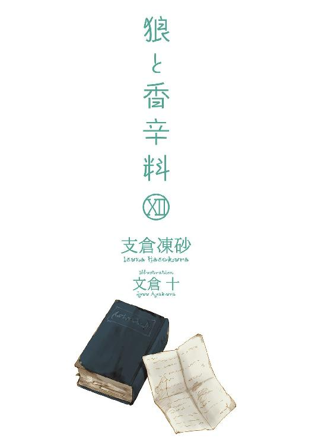
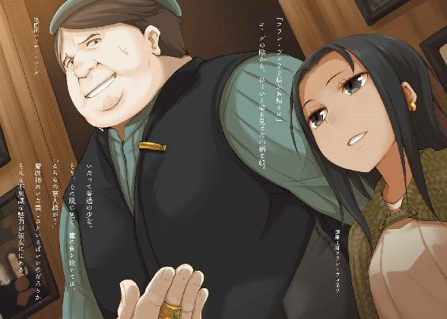
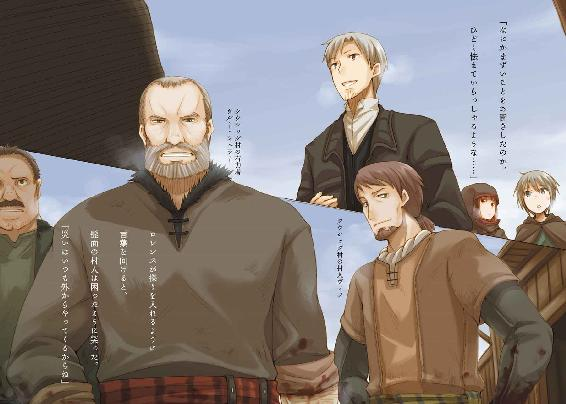
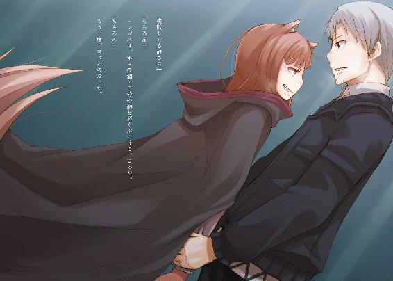
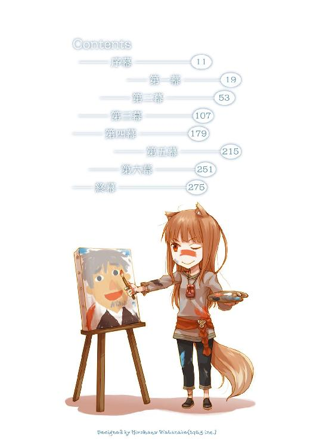
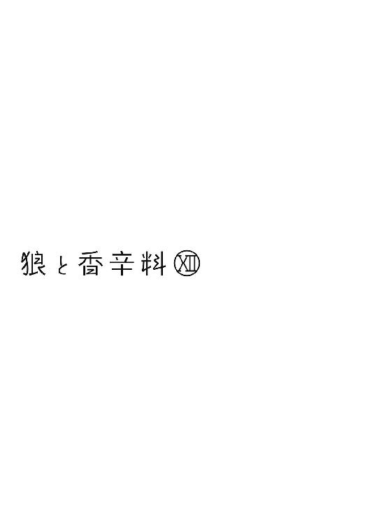
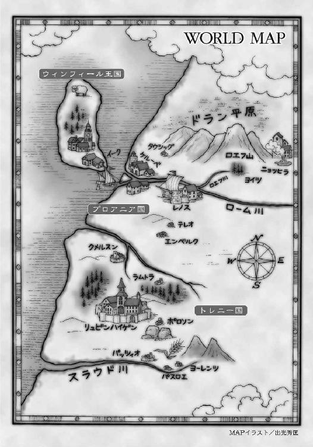
本書（電子版）に掲載されているコンテンツ（ソフトウェア／プログラム／データ／情報を含む）の著作権およびその他の権利は、すべて株式会社アスキー・メディアワークスおよび正当な権利を有する第三者に帰属しています。
法律の定めがある場合または権利者の明示的な承諾がある場合を除き、これらのコンテンツを複製・転載、改変・編集、翻案・翻訳、放送・出版、公衆送信（送信可能化を含む）・再配信、販売・頒布、貸与等に使用することはできません。
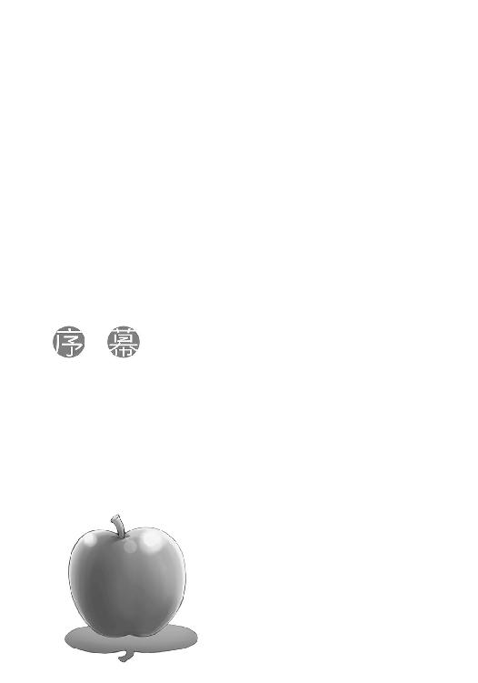
果てなく続く雪原の向こうに、夜明けが近づいていた。
空気は痛いほどに冷たく、息をするたびに頭痛がする。
まだ暗いうちに出ていった羊の群れが、遠くの地平線上にいた。
何百年と変わらず、きっとこの先も何百年と変わらないだろう風景。
晴れた空と、なだらかな雪原と、そこを歩く羊の群れ。
空気を、吸って、吐く。
長い息が冷たい風に釣られて帯を引き、視線をそちらに向ける。
隣では、まだ眠そうな旅の連れが、しゃがみ込んで雪を指に絡ませていた。
「なくなるかもしれない、だとさ」
唐突に言った言葉に、大した反応はない。
「すでにないものは、さらになくなりはせぬ」
小さな手で雪玉を作り、ひょいと放り投げる。
とす、と雪の中に埋もれたそれは、穴をあけた。
「俺たちは人だからな。ないものを、より、なくすことができる」
二つ目の雪玉が穴をあけて、隣から言葉が返ってくる。
「わっちには難しくてわからぬ」
「死んだらそれまでだと思うだろう？ だが、そうではない。人は死んでからもさらに天国で生きるし、地獄でさらに死ぬ。失ったものをまた失うくらい、造作のないことだ」
三つ目の雪玉は作られず、隣では真っ赤になった手に息をかけていた。
「人は恐ろしい」
「ああ」
うなずくと、少しの間をあけて、もう一つ言葉が向けられた。
「どうしてなくなるのかや」
「話では、削られ、掘られ、ついには跡形もなく、と」
衣擦れの音がしたと思ったら、肩を揺らして笑っていた。
「人は本当に恐ろしいの。そんな、無邪気な仔のような発想は、わっちにはとてもできんせん」
立ち上がると、頭二つ分は優に低い。
下から見上げる大人の顔がいつも怖かったように、上から見下ろす少女の顔はいつも気弱で儚げだ。
だから、上から見下ろしてもなお気丈に見えたそれは、きっと気のせいではないのだろう。
「じゃが、わっちゃあそれを聞いてちょっと嬉しい」
「......嬉しい？」
「んむ。最初はわっちの与り知らぬところでなくなった。わっちとはなんの関係もなく、なにもすることができず」
一歩、二歩、と進んでいくと、軽そうに見えるその体にもきちんと重さがあることを示すように、雪に足跡がついていく。
小さいが、しっかりとした、足跡だ。
「今度は」
そして、ローブの裾を翻し、朝日を背に受け笑っていた。
「わっちが関われる。それこそ、死んだあとの生死に、の」
笑うと、唇の下からは鋭い牙が覗く。
「もうどうしようもないと思ったことに再び関われる。そんな嬉しいことはそうそうありんせん。やめるもよし、やめられぬもよし。与り知らぬところで始まって終わるよりましじゃ」
強さには二つある。
守りたいものがあるゆえの強さ。
もう一つは、失うものがなにもないゆえの強さ。
「珍しく、強気じゃないか」
冗談めかすと、ぽわっと吐いた息が白く舞い上がる。
「わっちは言い訳を手に入れることができるからの。結果がどうであろうと、その場に参加したというのはそれだけで一つの言い訳になる。そしてそれは慰めにもなる。もしかしたら、うまくいったかどうかよりも、重要なことかもしれぬ」
その流れに乗るだけで意味があると考えれば、負けた時に苦しまなくてすむ。
そんな唾棄すべき案を口にしてもなお、強い願いを秘めているように相手が見える時、人は手を差し伸べずにはいられない。
負けることはわかっている。だが、そこでいかにうまく負けるかという勝負は、どんな戦いよりも難しいものなのだから。
「わっちゃあこの先も長いこと生きていかねばならぬ。寒い中眠るには、言い訳という懐炉が必要じゃ。ずっと、それを抱いて眠り、時折起きては、眺めるに足る、の」
その台詞に笑顔を返すのは至難の業だろう。
それでも、笑わずにはいられなかった。
これから世の全ての財宝を奪いに行こう、とでも言いそうな、そんな不敵な笑みと共に言われたら。
「ずっとは付き合いきれない。死力を尽くして手助けはできない。だが、俺は俺の領分で、付き合うよ」
小さなそいつは、朝日を背に浴びながら雪の上に立つ。
そいつが知りたいのは、できるかわからない努力目標ではなく、確実に履行できる限度のほう。なにもかもをなげうって、どんな危険でも引き受けよう、という情熱的な言葉を欲しがるには、いささかそいつの心は優しすぎた。
お互いに、無茶をせずに手をつないでいくというのが、どうやら歳を重ねるということらしい。
にっと笑ったその顔は、嬉しそうな笑顔だった。
「では、早速このあとの朝飯で、ぬしの付き合いきれる領分とやらがどれくらいか確かめよう」
こんな冗談が出るのは、辛気臭い話はこれで終わりだ、という合図。
ひょい、ひょい、と軽い足取りで戻ってきて、こちらの腕を取るなり甘えるようにすがりついてくる。
「せいぜい、食べすぎてこれが最後の朝食にならないように注意するんだな」
ただでさえこいつの食費は馬鹿にならない。
それでも、いつだって馬鹿にできないのは食費ではなく、頭の回転のほうなのだ。
「んむ。ぬしはわっちのことが好きで好きでたまらんらしいからの。ぬしが喜ぶままに食べておったら、わっちの腹がはちきれてしまいんす」
口から飛び出したのは、反論すれば全包囲の藪から蛇が出てくる難攻不落の要塞だった。
降参するしかない。
肩をすくめて、こう言った。
「俺はお前を殺したくないからな」
「んむ」
そして、前を向いた赤みの強い琥珀色の瞳は、雪に埋もれかかった修道院を見てから、閉じられた。
「それでよい。寛容さに殺されては、死んでも死にきれぬ」
一日の中で最も寒いのが明け方なのはきっと、このあとは暖かくなるほかないという神の粋な計らいなのだろうと、胸中で呟いたのだった。
追って連絡する。
行商人ならば、その言葉の意味を文字どおりに解釈することなど滅多にない。概ね運が良ければという意味か、せいぜい一年か二年後にふらっと同じ場所に来た時に、という程度に解釈する。
が、大きな経済同盟という複雑な機構に所属する者からすると、その言葉は字義どおりの意味だったらしい。雪原のど真ん中に位置するブロンデル大修道院から、大陸に戻るための港に向かう途中、来る時にも立ち寄った旅籠で手紙を受け取った。
修道院を巡る騒動の際に協力したピアスキーから送られてきたその手紙には、経済的に貧窮し、起死回生の一手を打とうとして失敗した修道院に関することが記されていた。
過去に偉大な聖人を何人も輩出しておきながら、いくつもの思惑から手を出した聖遺物。
それは異教徒の崇める神のものである可能性が高く、また、本物である可能性も高かった。
行商人という身分のロレンスからすれば、そんな話は旅の途中の酒の肴にするような類のもの。それがどういう巡り合わせか、今は商船を何隻も所有し、王や大司教すら敬意を払わざるを得ないルウィック同盟のようなところから、偉大な修道院に関する極秘の事項を連絡してもらっている。
笑ってしまうと言えばそう。
ただ、よくよく考えてみれば、どれほど巨大で強力な権力機構であったとしても、そこにいるのは所詮、人。旅の途中で知り合って、意気投合すれば奴隷だって豪華な晩餐に与れる。
人との出会いは神の采配ゆえなのだから、不思議なことは幾らでも起こり得る。
なにより、ロレンスが目を通す手紙を隣から興味津々覗き込んでいる者だって、普通に考えたら笑ってしまうような存在だ。
亜麻色の髪に細い顎。赤みがかった琥珀色の瞳に艶やかな唇。貴族の息女然とした容貌が類まれなら、そのフードの下にある獣の耳はなおまれだ。偶然出会った旅の連れのホロは、貴族でもなければ人でもない。その真の姿は人を軽く丸飲みにできるような巨大な狼であり、麦に宿りその豊作凶作を司る古き精霊の時代の存在だった。
もっとも、本人はそんな大仰な表現をされるのを嫌がるだろうし、手紙を読みたくて尻尾で急かすようにロレンスのふくらはぎをぺしぺしと叩いてくる様は、畏敬よりも愛嬌のほうが似合っていた。
「読み終わったら、返せよ」
手紙をホロに差し出すと、ひったくるようにして持っていってしまう。ブロンデル修道院が購入したという聖遺物は、尋常ならざる狼の骨、有体に言えば神と呼ばれる類の狼の骨。実際のところは偽物だったのだが、その購入に至る経緯などが記されていた。
ホロはその狼の骨が仲間のものではないかと考えていた。
ひとまずその疑いが晴れたことにほっとするのもつかの間、ロレンスはブロンデル修道院で、その狼の骨にも絡む別のもっと良からぬ話を聞いた。
手紙には、その片鱗を窺わせることも記されていた。
「それにしても、あのように大きな修道院でも騙されるのですね」
と、火の番をしながら口を開いたのは、もう一人の旅の連れであるコルだ。
齢十余といったホロの容姿よりもさらに若干幼く見えるのは、貧しい旅のせいでやせ細っているからかもしれない。
さもなければ、理知的でありながらなお決しておごらないその謙虚さゆえかもしれない。
ロレンスは火に当たりながら、言葉を向けた。
「なまくらの剣を買うのはどういう連中だと思う？」
弟子の時分、師匠によくやられたこと。
突拍子もないような質問をして、その答えから相手の力量を測るというもの。
「えっ......と......お金の、ない人、ですか？」
「そう。だが、他にもいる」
「金のあり余る連中じゃろう？」
コルが答える前に、手紙を読み終わったらしいホロがそう言った。
コルをロレンスとの間に挟んで座り、手紙をコルに手渡した。
この放浪学生である少年もまた、故郷である北の地の神の存在を信じるために、狼の骨の真偽を追いかけている。
「そう。金のあり余る連中は、なまくらの宝剣を買い求める。切れなくたっていいんだ。その剣の価値は、もっと別のところで決まる」
「それは......修道院は、別に本物でなくてもよかった、ということですか？」
優秀な解答に対するご褒美は、ホロが頭を撫でること。
照れるでも邪険にするでもなく、純粋に嬉しそうな顔をすれば、褒美を与える側だって嬉しいというものだろう。
「だから、騙し騙されというよりも、修道院にとってはそれに価値を付与できるかどうかのほうが重要だったんだろう。そして、実際にそれはうまくいきかけていた」
ロレンスの言葉に、コルは手渡された手紙に視線を戻す。
そこには、修道院がもうわずかのところで手が届きかけていた、起死回生の可能性が記されていた。
「海を渡った先の商会から買い付けの打診がきていた、というのは、あの商会のことですよね？」
港町ケルーベで、イッカクを巡る騒動に巻き込まれた時のこと。
あの時、渦の中心にいたのは狼の骨を買い付けるために秘密の資金を手にしていたジーン商会だった。
「ジーン商会に高値で売って、その骨が本物であろうと偽物であろうと、あとは知らぬ存ぜぬで通そうとしたんだろう。が、叶わなかった」
「そして、それもまたわっちらにはどうでもいいことでありんす」
木の枝にチーズを刺して、火で炙っていたホロがそう言った。
ぶくぶくと溶けかけたチーズにかじりつき、フードの下で耳がぴょんと跳ね上がる。
「そう。気にすべきは別のところ」
ロレンスの言葉に、コルは手紙の先に目を進めていく。
その手紙の中で最も重要なことがあるとすれば、それは事実の報告ではない。
時として、確証のない雑感のほうが有益な場合がある。
商いにおいて有益な情報とは、実はその内容によって決まるわけではない。
誰も知らないこと、それこそが最も重要であり、誰も知らない情報はいつだって確証などのない雑感からもたらされるものなのだ。
「どうやら、近年この手の取引があちこちで活発に行われているようです。その中心にいるのは、我々とは違う流通網を持つ者なのではないかと思います。北の地には不穏なる空気を感じます。神のご加護がありますように......ピアスキー」
むぐむぐとチーズを食べ終えたホロは、木の枝を火に放り込む。
「ぬしがあのハスキンズから聞いたことと、合致するんじゃろう？」
基本的に人の名を呼ばないホロが口にした名は、ブロンデル修道院に伝わる黄金の羊伝説の、そのまさしく黄金の羊の名前だ。
ただ、ホロが名を呼ぶのは、ハスキンズが自分と似たような存在だから、というわけではないだろう。ホロは頑固な賢狼だから、敬意を表するに値しなければ、あれとかこれ呼ばわりを変えることはない。
「修道院に対し、狼の骨の買い付けを打診していたジーン商会は、元々デバウという名の商会の傘下だ。ハスキンズさんは、俺に教えてくれた。人が大鉱山地帯と呼ぶ場所に陣取る商会の手によって、北の地の様相が一変するかもしれないと。それは他ならぬデバウ商会であり、ルウィック同盟とは違う流通網を持った連中だ」
ハスキンズはウィンフィール王国のブロンデル修道院領に、秘密裏に自分たちの仲間のための故郷を作り出していた。各地に散り散りになった仲間たちは、時折ふらりと立ち寄っては、互いの近況を聞いたり、各地の状況に関する情報を交換し合っているという。
その中で、ハスキンズはロレンスたちのために情報を渡してくれた。
ホロが向かう故郷、何百年も前に滅びたというヨイツの名を含む、不穏なその話を。
「では......本物の狼の骨は、すでにデバウ商会によって？」
「その可能性もある。もしも市場に流通しているのだとしたら、むしろその可能性が高い」
ロレンスはコルから手紙を受け取って、おもむろに引き裂いた。
「あ」
と、コルが口を開けたまま呆然とするのをよそに、ロレンスは細かくちぎり終えると、火の中に放り込む。
「一通しかない手紙が水で破けたり燃えたりしてしまっては困る。そういう時には羊皮紙を使う。だが、頑丈だということは処分も大変だということだ。だから内緒話は処分しやすいように紙を使う。誰にも知られてはならないからな」
あっという間に灰になった手紙は、熱気に煽られて天井に向かって飛んでいった。
「それで、わっちらはどうするんじゃ？」
コルとホロの二人は宙を舞う灰を目で追っていたものの、本当にその目で灰を見ていたのはコルだけだ。
ホロは赤みがかった琥珀色の瞳で、どこか別の場所を見つめていた。
「ピアスキーさんの送ってくれた今の手紙と、ハスキンズさんの教えてくれた北の地の情勢。大きな情報網の二つが、似たような話をもたらしてくれた。だとすれば、これはもうほとんど事実と見ていいだろう」
「なんたらいう商会が、山をほじくり返すためにあっちこっちの土地の民を追い出そうとしている、と？」
コルが、はっとしたように灰から視線を戻した。
「そのために、聖遺物を真贋問わず血眼になって集めている可能性がある、とハスキンズさんも言っていた。目的は明白だ。武力に頼ろうとする時、教会組織ほど心強い味方はない。まず間違いなくデバウ商会は教会を味方につけるはず。そして、だとするならば、彼らは鉱山開発のための土地の占領を、心地よい言葉で言い換えるはずだ」
ぱち、と小さく木が爆ぜた。
「聖戦。異教徒たちの手から、神の土地を奪い返す、と」
聖遺物は信仰の世界に属するもの。
だから、ロレンスたちが追いかけていた狼の骨も、当初は教会の布教のために用いられるかもしれない、と考えた。例えばそれが異教の神のものであれば敢えて冒瀆し、しかしそれにより罰がくだらないことを以て、教会の正しさとするように。
ホロは自分たちがいかに強くても、骨になったあとまでも相手に嚙みつくことはできないと言っていた。
異教の神の息遣いが未だ濃く残る土地ならば、その効果はきっと絶大だろう。
しかも、デバウ商会が鉱山開発のために戦いに打って出るというのなら、もはやその行為は信仰の戦いではなく、真の動機は金儲けだ。
ハスキンズがいみじくも語ったように、古い時代に神と呼ばれた者たちが森や山から追い出される時、常にその裏には商人がいた。
それが、今回は裏方ではない。
「北の大遠征が中止になって困っている連中は多いだろうからな。自分たちの住む土地で起こる戦は嫌がっても、遠くの土地で起こるそれは大歓迎。食料や物資が飛ぶように売れ、畑や村を荒らす傭兵たちはこぞって遠くに出かけていく。うまくいけば戦いに赴いた領主がたんまり財宝を抱えて帰ってきて、そのおこぼれに与ることだってできる」
「その戦いの起こる土地が異教のものであればなお困ることはありんせん、ということかや」
ホロの故郷ヨイツは、もう何百年も前になくなっているという。
だが、そこには見慣れた山や森がまだあるだろうし、のんびりうたた寝をしたという日の当たる丘だってあるだろう。そういう意味では、まだ故郷は存在するはずだ。
それが金や銀、あるいはその他の鉱物を掘り出すために利用されれば、景色は文字どおり一変する。木は切り倒され、山は削られ、川はせき止められる。
あっという間に、見たこともない土地の出来上がりだ。
「あの」
と、律儀に手を挙げてから口を挟んだのは、今にも泣きそうな顔のコル。
彼もまた、教会の横暴から故郷を守りたく行動を起こしていたうちの一人なのだから。
「どこが攻められるかとかは......その、わからないんですか？」
「わからない。だが」
ロレンスは言葉を続け、気休めでも笑顔を向けてやる。
「だが、備えはできる。でかい話になればなるほど、公に隠すのは不可能になるからな。それに、全体の流れは止められなくても、守りたい場所から敵の矛先をかわすことくらいならできるかもしれない」
コルは悲痛な顔でうなずき、ぎゅっと下唇を嚙んでいる。
これが二十年後の話であれば、コルはもしかしたら教会の権力の内部にいて、うまく矛先を誘導できる地位にいたかもしれない。
しかし、それらは全てもしもの話。
ホロがコルの頰をつまむようにして撫でて、言葉はこちらに向けてくる。
「必要なのは？」
「ひとまず、北の地の正確な地図だな。なにをするにしても、地名だけを聞き出せたところで、それがどこのどういう場所なのかわからなければ手の打ちようがないし、戦禍がどこに向かっているのかもわからない。ついでというわけじゃないが、狼の骨の話も、流れに乗り込めば同時に見えてくるだろう」
ホロはうなずき、少し大きく深呼吸をする。
「だから、北の地の事情に通じ、なおかつ地図を描ける人物をハスキンズさんから教えてもらった。なにせうちの狼の正体を知ったうえでの人選だからな。期待が持てる」
冗談めかして言ってやると、ホロはつまらなそうに鼻を鳴らし、コルはぎこちなく笑う。
修道院で迎えた朝、ホロに話してやったことが、これ。
情報を集め、当初の約束どおりホロの故郷までは連れていくことはできるだろう。
ただ、その先のこと、例えばデバウ商会の目論見をご破算にするとか、そんな英雄譚めいたことを約束できはしない。
相手は北の地の有力な鉱山を直轄する大商会。ただ単に金がある、というだけでは決して立ち行かない世界。ブロンデル大修道院が聖遺物をジーン商会に売りつけようとしたことすら、デバウ商会にとっては大きな目標の一部分に過ぎないのだろう。
ハスキンズからその話を聞いた時、世の広さを恨めしく思う前に馬鹿馬鹿しさを感じてしまっていた。
ロレンスの力量には限界があるし、行商人の力などもっと非力だ。
しかし、ホロはそれを責めないから、ロレンスも恥じることはない。
できることだけをやる。その代わり、できることには、全力を尽くす。
「とりあえず、ケルーベまで戻る。そこで、一人の商人に会うつもりだ」
イッカクを巡る騒動に巻き込まれた場所。
ホロが、怪訝そうに聞いてくる。
「ぬしにあれこれちょっかいをかけてきたあの若造に？」
「キーマンのことか？ いや。ハスキンズさんの仲間の商人だそうだ」
ロレンスの答えに、ホロはもっと嫌そうな顔をした。
「また羊の力を借りるのかや......」
「今度は羊飼いじゃないからな。幾分ましだろう」
ホロは誇り高い貴族とは違う。
確かに一見誇り高そうだが、その実は子供っぽい見栄や意地で行動しているところが多々あるし、本人も認めている節がある。
ロレンスが言ってやると、期待していなさそうに、聞き返してきた。
「では、羊飼いでなければなんじゃ？」
ロレンスは一言、こう答えた。
「絵画商」
川の流れが国と国を分けるように、海を挟むと大した距離でなくとも気候が一変する。
海を挟んで手紙のやり取りをしていたら、相手の国では夏と冬が逆だと思い込んでいた、なんていう冗談があるほどだ。
港町ケルーベも寒いには寒いが、その寒さはまだ氷を思わせるものではない。
しかし、これがケルーベに注ぎ込む川を渡って北上すると、たちまちのうちにウィンフィール王国と変わらない雪景色になるというのだから、世界の仕組みとは不思議なものだ。
「降りるのは町の北かや？ 南かや？」
船の中でそう尋ねるホロは、毛布の下で眠そうに目をしょぼつかせている。寒い寒いという言葉を言い訳に、つい先ほどまで酒を飲んでいたのだ。
ロレンスはホロの頭に手をやって、前髪を軽く指で弄んで、答える。
「南側だ。賑やかなほうだな」
ケルーベの町は、町の真ん中を流れる川によって二分されており、北側には古くからその土地に住む者たちが、南側には新しく町にやってきた商人たちが住む。
賑やかなのは、商人たちの住む南側だ。
「ふむ。それならば......飯は期待できそうじゃな」
途中に欠伸を挟みながら言って、口をもぐもぐさせている。遠い目つきの先に、一体どんなご馳走を夢見ているのだろうか。
財布の中身を思い出しながら、少し棘を含めて言ってやる。
「冗談抜きで、羊を何頭か貰ってくるんだったな」
ブロンデル修道院で羊飼いを営むハスキンズからは、できのよい羊をこっそり渡すから連れていけ、と何度も言われていた。
「ふむ......。じゃが、連れて歩くのが面倒じゃからな」
「お前に現実的な判断ができるとは」
羊は安くないし、黄金の羊の化身たるハスキンズが選んだ羊であれば、質に関してはきっとそれ以上望むべくもないようなものを選んでくれたことだろう。
しかし、羊を受け取らなかったのはまさしくホロの言った理由によってだった。
ロレンスがハスキンズの申し出を断った時、ホロは不満げだったが、きちんとわかってくれているのだ。
「そりゃあ、そのくらいできんす。なにせこの群れには......」
と、荷物を枕にして毛布の下で横になっているホロは、ロレンスの手の下から意地悪そうな目を向けてくる。
その続きを言わなかったのは、ホロなりの優しさか、さもなくば面倒くさかったのだろう。
「お前もコルみたいに眠ったらどうだ？」
船が怖いコルは、飲めない酒を一口含んでずっとロレンスの側で眠っている。
ロレンスの言葉に、ホロはゆっくり目を閉じてから、答えた。
「わっちは船は怖くありんせんが、酒が怖くての。怖いから寝てしまいたいんじゃが、そのためにはさらに飲まなければならぬ」
深酒を戒める聖職者に向けた有名な笑い文句。
ホロの恐ろしいところは、知識としてその言葉を選んでいるのではなく、実際にそう思っていそうなところだ。
「食費が怖い俺は涙を飲むしかないのかな」
返事がなかったのは、多分つまらなかったからだろう。
それからしばらくあと、船は予定どおりにケルーベに着いた。
コルを起こし、ぐずるホロをようやく立ち上がらせた時には、船室に残っているのはロレンスたちだけだった。
「くー......あふ。たかが数日というのに、なんだかえらく懐かしい感じがするの」
船を降りて、町の南側の地に立つや、ホロはそんなことを言った。
確かに、町を二分するような騒動に巻き込まれた所だから、特に印象に残っているのかもしれない。
「ウィンフィールがこことは打って変わった雪景色だったせいもあるだろうな。しかし、そうか」
ロレンスは荷物をコルと分担して背負い、一人身軽に伸びをするホロのローブの裾を押さえて、今にも顔を出しそうだった尻尾を隠してから、言葉を続けた。
「お前と出会ってから同じ町に二度来るのはこれが初めてか」
「ふむ？ ふむ。言われてみると確かにそうじゃな」
相変わらずの雑踏も、ウィンフィールの景気の悪さを目の当たりにしたあとだとなおさらに懐かしく感じる。やはり、商いの世界に身を置く人間としては、活気に満ちた市場のある町のほうがいい。
「なるほど、ひどく長いことぬしと旅をしておるような気にもなるわけじゃな」
「うん？」
目を細めて辺りを見回しながら、ホロは後ろ手に組んで一足先を歩いていく。
「一つの町を通るたびに、五十年は思い出し笑いができそうなことばかり起こるんじゃからな」
その後ろ姿が少し寂しそうだ、というのはきっと気のせいではないだろう。
ホロが一つの思い出で五十年笑う時、その隣にきっと自分はいないのだから。
「......」
ロレンスが言葉を継げないでいると、ホロはふと足を止めて、くるりとこちらを振り向いた。
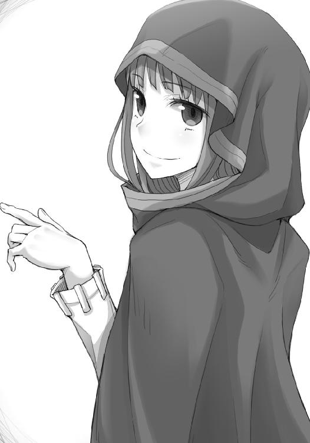
「ところでぬしよ、そんな楽しい旅の思い出に一つ、どうじゃろう？」
ホロの後ろのほうに目をやれば、軒先で今まさにウナギが油の中に放り込まれようとしていたのだった。
商館に荷を預け、紹介状を書いてくれたキーマンにブロンデル修道院での出来事を当たり障りのないように告げた。
最後まで楽しげに聞いてくれていたキーマンは、返事の代わりに一通の手紙を差し出してきた。商館に先日届いたという、南に下った先にある毛皮の仕立てで有名な町からきた手紙。
誰からと問うまでもない。
一言、儲かった、とだけ書かれた手紙の匂いを嗅げば、きっとホロとは違った狼の匂いがするだろう。
「絵画商？ ユーグ商会のことでしょうか」
「ええ、ハフナー・ユーグ氏にお会いしたく」
「それならば商館を出て通り沿いに行っていただければ、右手にあります。軒先に羊の角を象った商会の紋が飾ってありますのですぐにわかりますよ」
ハスキンズやその仲間だというユーグの正体を知っている身からすれば、大胆な紋もあったものだと苦笑する。
「しかし、ユーグ商会とは、また異な場所に御用ですね」
絵画を買うような人間は概ね身分が高く、絵画を扱う商会などは行商人風情が出入りをするような場所ではない。ローエン商業組合の看板を守る一人としては、またぞろロレンスがなにか妙なことに首を突っ込みはしないかと心配なのかもしれない。
その心配を取り除く、というわけでもないが、キーマンならば情報を持っているかもと思い、ロレンスは特に期待もせず言葉を返す。
「フラン・ヴォネリという銀細工師にお会いしたく」
ハスキンズから教えてもらったその名を口にすると、キーマンの顔がはっきりと驚きのそれに変わった。
「ご存じなのですか？」
キーマンは軽く手で顔を撫でて驚きを消すと、やんわりと笑ってこう言った。
「有名な方ですよ。ただし、悪評のほうですが」
どういうことだろうか。
ロレンスが軽く辺りを見回したのは、続きを聞かせてもらえないか、という無言の催促だ。
「客筋が悪いのですよ」
その時のキーマンの目は、フラン・ヴォネリ個人の悪口を言うというよりも、ロレンスを心配するような目つきだった。
「若くして諸侯の覚えめでたい凄腕の銀細工師、と謳われてはおりますが、その諸侯というのも成り上がりばかりで、後ろ暗い過去を持つ者がごろごろいる。それに、どこかの工房で師匠を持っていた、という話も聞きません。怪しげな人物ですよ」
蜘蛛の巣のように張り巡らされた情報網を持つキーマンが言うのだから、実際にそうなのだろう。
一体どういう人物なのか。
ロレンスがそう思っていると、キーマンは最後に言葉を続けた。
「関わらないほうがよろしい人物だとは思います」
キーマンとロレンスは、組合の中では天と地ほども身分に差が存在する。
キーマンが関わらないほうがいいと言えば、それは関わるなという命令と捉えるべきだ。
しかし、帳簿にペンを走らせていたキーマンは、最後の線を引き終わると、小さく呟くようにこう言った。
「おっと、独り言を聞かれてしまったようですね」
その時のわざとらしい笑顔といったらない。
親切心からの忠告、という形にとどめてくれるらしい。
ロレンスはキーマンに礼を言い、商館の外で待っているホロやコルの下に急ごうとした。
そこに、キーマンが帳簿に目を落としたまま言葉をかけてくる。
「最後の儲けの山分けの時には、ご連絡ください」
友人と呼ぶのはおこがましい。
それでも、なにか心地よいつながりのようなものはできた。
そんな気がした。
「ええ、もちろん」
ロレンスは笑い、短く答えて商館をあとにしたのだった。
「大丈夫でしたか？」
とは、心配そうな顔のコル。普通に考えれば、あれだけ欲望を剝き出しにして争ったあとだったら、顔を合わせるのすら嫌がるだろう。
しかし、世に数多人がいるとしても、商人ほど過去にいがみ合った相手と楽しく酒を飲める節操のない連中はいない。
コルの頭を撫でてから、ロレンスはこう言った。
「手紙が一通届いていたらしい。短く、儲かった、とだけ」
コルの顔がぱっと輝いたのは、コルなりにエーブのことが気にかかっていたのかもしれない。
エーブはエーブでコルのことを可愛がっていた。
不機嫌そうなのは、ホロだけだ。
「一難去ってまた一難、にならなければいいんじゃがな」
ロレンスを殺そうとすらしたエーブのことと、キーマンが話していたフラン・ヴォネリのことを引っ掛けているのだろう。
話を聞く限り、厄介そうな相手には間違いない。
ただ、お前が言うのか？ と言いたげな色を顔に出したからかもしれない。
ホロはふんと鼻を鳴らして、こう言った。
「で、絵画商とやらの場所は？」
わかりやすい不機嫌さは、機嫌がよいのと一緒。
ロレンスが歩き出すと、おとなしくついてきた。
やがて見えてきたユーグ商会の軒先にぶら下がった紋章を見て、ホロは苦笑を嚙み殺すように呟いた。
「連中は肝が小さいのかでかいのかわからぬ」
「案外、貴族連中の紋章に鷲が多いのも、同じ理由なのかもな」
ロレンスは言って、細かい装飾の施された、質素ながら金がかかっていそうな木の扉を開ける。途端に鼻を突いたのは、絵の具独特の匂いだ。
店は大通りに面した商会としては小ぶりなほうかもしれない。
ただ、儲かっていそうだな、というのはすぐにわかる。壁一面に掛けられた絵、あちこちに立てかけられた絵の枚数は相当なもの。その中で、共通することが一つあった。
それは、絵の大きさだ。
一般に、絵はなにが描かれているかとか、誰が描いたかといったことはほとんど値段に影響しない。絵の価値はほとんどが絵の具の値段であり、したがって絵の大きさと色合いによって値段が決まる。
小ぶりな商会に置かれていた絵は、どれも大きく、そして色鮮やかな多数の絵の具によって描かれていた。値をつけるとすれば、相当なものになるに違いない。
「ほほう......」
そこにある絵の題材は、神や聖母を描いたものから、山や森、洞窟や湖の側で隠遁生活を送る聖者の姿まで様々だ。
共通しているのは、どの絵も背景が異様に大きいということ。
それはまるで、神や聖母よりも、背景のほうを描きたかったというように。
「留守かな」
感嘆のため息を上げるホロに、声も出ないコル。そんな二人をよそに、ロレンスは店の奥に入っていく。
もちろん、振り向いて「絵に触るなよ」と好奇心旺盛なホロに釘を刺すのを忘れない。
ホロは子供扱いするなとでも言いたげにむっと頰を膨らませるが、その指は確かに盛り上がった絵の具の表面に向かっていた。引っ搔いて絵の具が剝がれでもしたら、回れ右をして逃げる羽目になる。
「ごめんください！」
ロレンスが奥の部屋に向かって声を上げると、がたん、と音が聞こえてきた。
どうやらさらに奥の倉庫にいるらしい。
くぐもった返事が聞こえてきて、ロレンスは主人が出てくるまで壁に掛けられた絵を眺めていた。
修道士たちの行進を描いた絵。
川べりを歩く彼らの向こう側には、肥沃な森と山が広がっている。
「はい、はい、なんでございましょう」
しばらくして奥から出てきたのは、羊というよりかは豚に似た男だった。
平べったい帽子を頭に載せているので一見聖職者にも見えるが、着ているのは商人としての立派な一流品。
ハスキンズとは対照的な、実に欲深そうな商人らしい人物だった。
「ハフナー・ユーグ氏にお会いしたいのですが」
「ほ？ ハフナーは私でございますが、えーと......一体、どのようなご用件で？」
ロレンスは見るからに行商人で、連れの二人は片や修道女、片や貧民救済院からやってきたような少年。
裕福な趣味である絵画を扱う場所に来るような取り合わせではない。
「実は、ブロンデル修道院の、ハスキンズ氏のご紹介で──」
ロレンスがそこまで言った瞬間だった。
ユーグの豚に似た大きめの鼻がびくりと動き、視線が一箇所に向いて凍りついた。
視線に気がついたホロが、林檎を手にした聖母の絵から目をユーグに向ける。
身なりは小さくとも、狼の、ホロだ。
「あ、あ、あ」
「彼女の名前はホロ。ハスキンズ氏からもよくしてもらいまして」
怯えるユーグに、精一杯の笑顔を見せてロレンスは言う。
しかし、ユーグには話を聞いている余裕などないようだ。今にも身を翻して逃げたいが足が動かないといった感じで、射すくめられたようにホロのことを見つめていた。
だから、動いたのはホロ。
ため息一つせず、すすっと歩み寄ってきて、こう言った。
「ところで、あの絵に描かれておるような林檎はあるかや？」
森で出会った野犬の群れを前に、人がすることといえば干し肉を取り出してそれを遠くに投げること。
効果はてきめんだった。
ユーグはぶるんぶるんと頰肉が揺れるほどにうなずいて、奥に引っ込んでいった。
「羊というより豚に似ておるの」
ユーグの背中を見て、ホロはぼんやりそんなことを言ったのだった。
木の器に山盛り運ばれてきた林檎に、ホロは遠慮会釈なく手を伸ばす。
ユーグはといえば、この商会の主人だというのに、部屋の隅に立ったままだ。
「ユーグさん」
ロレンスが声をかけると、びくりとその巨体を縮めようとする。
椅子を勧めながら、ロレンスはどちらが商会の主かわからなくなりそうだった。
「こちらのことは、ハスキンズさんからお聞きしまして」
机の上の林檎を見つめたまま、しきりに汗を拭うユーグの手がぴたりと止まる。
上目遣いに向けられた目は、慈悲すら請うている。
「食えぬ......奴じゃった」
もしもしと林檎を食べながら、その合間にホロは言う。
片目はからかうようにユーグに向けられている。多分、ホロはユーグが羊だからというよりも、単純に怯えられるのが気に食わないのだろう。
しかし、怯えなければ怯えないで不満そうにしかねないが、そのあたりは狼としての複雑なところなのかもしれない。
「筋張っておっての」
余計な一言に、ロレンスが言葉を添える。
「筋をきちんと通す立派な方でした」
「......お、翁に......いえ、翁と一体、なにが？」
もう少し勇気があれば、翁になにをした、と言いたかったのかもしれない。
しかし、林檎をもしもしと食べる時、ホロの口にははっきりと牙が生えているのがわかる。
羊と狼は相容れない。
食う側が誰で、食われる側が誰であるのか、悠久の時の彼方より連綿と続くことなのだ。
「修道院で彼のお方がされていること、お聞きしました。大変立派なことだと。そして、そのお手伝いを」
ユーグの目が、ロレンスとホロをたっぷり三往復はする。
「......翁は、なぜ、私の名を？」
「北の地に詳しい方を探していまして」
段々とユーグの瞳に力が戻ってくる。
絵画商としてはまず間違いなく成功している身なのだから、人であり、行商人であるロレンスを相手にすれば、対等であるかあるいはそれ以上に違いない。
「それは......はい。それならば......」
それでも、ユーグはもごもごと消え入るように口の中で呟いてから、「しかし」と続けたそうにホロのほうを見る。
ホロは、立て続けに五個か六個林檎を平らげて、ひとまず乾きは癒えたとばかりに手についた汁を舐めていた。
唐突に口を開いたのは、小指と薬指の付け根を舐め終わった直後だった。
「ハスキンズと名乗ったあれ。あの骨のある羊じゃがな、物の道理を弁えておった」
「......」
ユーグは、言葉を継ぐこともできず、呼吸すらも止めてホロのことを見ている。
「すなわち、わっちらに対する恩をきちんと返そうとしてくれたということじゃ。それが実を結ぶかどうかは」
ちろりと、視線を向ける。
「ぬしの協力如何にかかっていんす」
「それは」
ユーグは食べ物を喉に詰まらせたように口をつぐみ、いったん固唾を飲んでから、続ける。
「それは、もちろん......翁の頼みということでしたら......」
「ふん」
ホロが、ロレンスの腕を軽く突つく。あとは任せたということだろう。
そのあとにコルの腕を突ついていたのは、せっかくだから林檎を食え、ということだ。
「それで、ユーグさんに、人を紹介していただければと」
「はあ......確かに、その、当商会は絵画を取り扱っておりますし、描き手の中には旅に暮らす方たちも多いです。つまり、その」
「ええ、ハスキンズさんからは、一人の銀細工師のお名前を聞きました」
その瞬間だ。
ユーグが、初めて絵画商らしい顔を見せたのは。
隣にいるホロが、まるで他人事のように林檎を食べるわがままな娘から、一匹の狼に変わる。
「ハスキンズさんは、フラン・ヴォネリという名を」
たるんだユーグの顔に皺が寄る。
それは恐怖ではない。
商人が自分の商いの中でもっとも儲かる話を他人に嗅ぎつけられた時に見せる、独特の表情だった。
しかし、ユーグはとっくに商人になっている。
商人ならば、大事な人からの紹介相手に対して粗相することの意味を十分に理解している。
「存じて、おります」
「凄腕の銀細工師とか」
ロレンスの問いに、ユーグは苦しげにうなずく。
「生きる糧は絵で得ておりますが、本業は銀細工という方です。どういう経歴の持ち主なのか、お歴々のお大尽と親交が深く、しかも彼らが揃って惚れるという腕前でして......。特に、槍と盾を片手に武功を上げた気難しい方々に受けが良く......」
ユーグ商会としては、これ以上にないほどの金の卵。
そう、言葉を続けたかったのだろう。
ロレンスは、軽く咳払いをした。
「紹介して、いただけませんか？」
誰だって金の卵によそ者を近づかせたくはない。
その気持ちはわかる。
しかも、突然やってきたのは、みすぼらしい格好の少年を連れた行商人風の男に、狼の化身。
なにもかもを頭からぺろりと平らげていく様を想像したって、誰も責められはしないだろう。
ユーグの中で、ハスキンズの恩と、自分の利益と、身の安全が秤にかけられているのがよくわかる。
ホロは、その秤にひょいと手をかけた。
「ヨイツ」
「え？」
ユーグが目を向ける。
「ヨイツ。古い名じゃ。その名を覚えておる者は減り、その場所を覚えておる者はもっと減っておるそうじゃ」
ユーグは口の中がからからに乾いているだろうに、しきりに唾を飲み込もうとしている。
「わっちゃあ、故郷を探していんす。それがヨイツ。ぬしはどうじゃ？ 聞いたことが？」
投げやりといえば投げやり。
ただ、それは王が王たるために見栄を張ることに飽きたようにも見えた。
「知っておったら、教えて欲しい。このとおりじゃ」
ホロは、身を縮めて、ぺこりと頭を下げる。
尻尾が剝き出しだったら、足の間にしまいそうな勢いだった。
「あ......あ、あの」
ロレンスが驚いたくらいなのだから、ユーグはもはや驚きを通り越して動揺していた。
椅子から腰を浮かしかけ、ロレンスとコルになにかを言おうと口をぱくぱくさせている。
駆け引きが面倒くさかったから、というのもあるかもしれないが、ホロ自身にも心境の変化があったのかもしれない。
特に、ウィンフィールでは事あるごとに馬鹿にしていた羊を前に自分の幼さを知らしめられた。居丈高に詰め寄るのではなく、教えを請うのであればそれ相応に。
そして、ユーグは肝は小さいかもしれないが、心は広い男だった。
「お、お顔を上げてください。翁のご紹介なら、い、いえ、この私にそこまでしてくださるのでしたら、私も羊に生まれた身であります。お力になりましょう。ですから」
お顔を上げてください。
最後の一言に、ホロはゆっくりと顔を上げて、微笑んだ。
何百歳も年上のホロに対して言える言葉ではないだろうが、一つ成長したような笑顔だった。
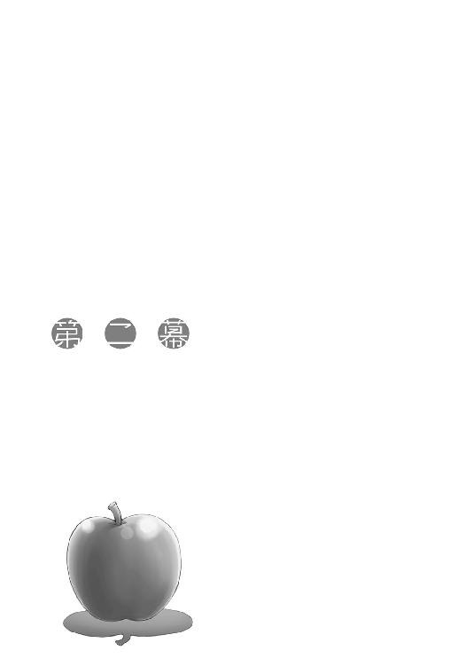
林檎の代わりに勧められたのは、温められたぶどう酒だった。
「温まりますよ。どうぞ」
ロレンスが礼を言って口をつけると、ホロもそれに倣って口をつける。苦手だろうに、平静を装っていた。コルだけは山羊の乳を温めたもので、ホロが羨ましそうに横目で見ているのがちょっとおかしかった。
「それで、銀細工師のフラン・ヴォネリ様のことですよね」
「ええ」
ユーグはまだ口の中になにかあるような感じだったが、すぐに思いきったように言葉を続けた。
「今、彼女はここに逗留なさっています」
ホロがあからさまに笑っていない笑顔をユーグに向ける気持ちもわからないではない。
ただ、大事な金づるならば隠そうとするのは当たり前。
ロレンスはホロの膝を軽く叩いてから、尋ねた。
「絵か細工の制作を？」
「いえ。そのための準備と申しましょうか、普段はあちこちを飛び回っている方なのですが、しばらく連絡が取れなかったと思ったら先日ふらりといらっしゃいまして、こう仰られたのです。ある伝説を小耳に挟んだのだが、と」
「伝説」
ロレンスが確認するように呟くと、ユーグはうなずいた。
「タウシッグと呼ばれる村にまつわるものです。長く、広く北の地に横たわる山脈の麓になります。山は高く、森は深く、その森と、山の湖にまつわる伝説を追いかけにきたようなのです」
森と湖にまつわる伝説、という語句に隣を見る。
しかし、ホロはこちらを見ず、その向こう側にいるコルと目が合った。
「ユーグさんは、その伝説に心当たりが？」
「もちろん、話程度は聞いたことがありますが......ご存じのとおり、我々には我々独自の情報網があります。その伝説が本物かどうか、ある程度わかりますので......」
「つまり、偽物の可能性が高いと」
ユーグはこくりとうなずいた。
「ただ、気難しい方でして、銀細工の題材にこれと選んだらてこでも動きません。その姿勢を含めて惚れ込んでいる方々が多いのですが......」
「地図を描いていただく時間はないと？」
「ええ、それと......」
「それと？」
聞き返すと、ユーグは申し訳なさそうに、こう答える。
「確かに彼女は銀細工の題材を求めて北の地を駆け巡っておられますし、その、お聞きになりたがっている古い地名についての知識も、私や、ハスキンズ翁よりもよほど詳しくお持ちになっていると思います。なにせ、実地に一つ一つ伝説を追いかけているような方ですから」
ロレンスはうなずき、先を促す。
その言葉だけでは、先ほどの質問の答えにはならない。
「はい。ただ、描いてくださいとお願いして、素直に描いていただけるかどうかはわかりません。私も現在の関係を築くのに大変苦労いたしましたので......」
ユーグは苦渋の表情でしきりに汗を拭う。
演技でなければ、本当にフラン・ヴォネリとやらは気難しいのだろう。
「なに、大丈夫でありんす」
しかし、そんなユーグをよそに、ホロは軽く言ってにやりと牙を剝く。
脅せばいい、という冗談だろう。
ユーグの顔が笑顔になったが、それは面白くて笑ったわけではない。
そもそも職人とは『頑固』という言葉の代名詞にもなっている。伝説的な鍛冶職人の中には、剣を打てと詰め寄られ貧窮の極みに陥れられながらも、鉄床に浮いた錆を食べて飢えをしのぎ、決して不本意な仕事はしなかったという者もいる。
ある日突然やってきて、北の地の地図を描いてくれと頼むのは無謀なことだったのかもしれない。
「わかりました。ただ、口添えをしていただくことなどは？」
ロレンスの質問に、ユーグは前のめりになる。
不退転の決意を持っての、発言だということだろう。
「き、気難しい方でございますので」
よくわからない連中を紹介するのが精一杯の譲歩。
ただ、ロレンスは少し黙考する。
一人の銀細工師の機嫌を損ねることと、ユーグたち羊の化身の故郷を預かるハスキンズの顔を立てること。その二つを秤にかけて、銀細工師のほうを取るという。
なにをおいても協力してもらうには、ハスキンズからなにか目印的なものを貰わなければならなかったのか。あるいは、ユーグがそれほど義理堅くなかったということか。
さもなければ、フラン・ヴォネリはそれほどの銀細工師なのか。
ロレンス程度の頭であってもこのくらいの推測はできる。絵画商として成功しているユーグなら、わずかの時間からロレンスの黙考の中身を見抜くことはさほど難しいことではなかったようだ。
なにより、機嫌を損ねるともっと危険な存在が目の前にいる。
ユーグは命乞いにも劣らぬほどの真剣な口調で、語り出した。
「彼女の機嫌を損ないたくないのは、商いのためということは確かです。ですが、お金のためではありません」
商いはいつだって金を求める行為。
ロレンスが興味を引かれて視線を向けると、覚悟を決めたらしいユーグは立ち上がって、一枚の絵の下に歩み寄っていった。
「古い名で、ディラと呼ばれる地の絵です」
壁に掛けられた一際大きなそれは、巨大な岩が転がる荒地を描いたもので、不毛の崖の前にに立つ一人の隠遁者が神に祈るように両手を空高く掲げている。
ディラとユーグの言った地方の守護聖人か、聖人伝説を描いたものかもしれない。
ありふれたものといえばそう。ただロレンスの知識からすれば、やはり絵の中心が隠遁者ではなく背景に見えるようなところが少し変わっていた。
ロレンスがそう思っていると、ユーグは思いがけないことを言った。
「ここは、私の故郷なのです」
「っ」
隣で、ホロが体を硬くしたのがわかった。
「ただ、昔はもっと肥沃な場所でした。こんな崖もなく......。この崖は、爪痕なんですよ」
ホロが、かすれるような言葉を紡ぐ。
「月を、狩る熊の？」
「ええ。我々のような者たちには決して忘れられぬ記憶。この絵は、ヴォネリ様のような方たちの協力を得て、描いてきてもらったものです。もう、何十年も昔のことです。私はここで絵画商を営み、かつての故郷の仲間のためや、似たような境遇の仲間のために、捨てざるを得なかった故郷の様子、さもなければ、あの大災厄以降帰ることのできない場所の絵を集めては、売っています。金儲けでないといえば噓になりますが、二の次ですね」
そこに大きな窓があるかのように、ユーグは絵の中の景色を遠い目で眺めていた。
「それに、この絵に描かれた景色も、今はもうないとのことです。金の鉱脈が見つかったらしく......皮肉なことですが、この絵を描いてもらうために雇った道案内の男が、鉱脈に気がついたそうです。それでなくとも、風で削られたり、川で削られたりといったことで景色は変わっていきます。あちらの部屋に置いてある絵や、すでにどこかの教会や邸宅に飾られている絵の中の景色も、多くが失われたか、失われつつあるそうです。それに、絵そのものにも保存の限界があります」
ユーグは絵の縁を軽く撫で、言葉を終えたあともじっとしばらく眺めていた。
ここは、移ろいゆく時を切り取って保存する場所なのだ。
人にとっては長すぎる自然の移ろいも、彼らにとっては速すぎるのかもしれない。
そのくせ、過去の思い出だけはいつまでも変わらずに、その差は開く一方だ。
ユーグがふとこちらを振り向いて、困ったように笑った。視線の先には多分ホロがいたが、ロレンスはそちらを見なかった。見れば、ホロが傷つくと思ったからだ。
ホロに言葉をかけられるのは、同じ時を生きるユーグしかいない。
「できれば貴女様にご協力したいと思います。これは我々羊たちだけのためのものではありません。顧客には、鹿や兎、狐に鳥といった方々もいらっしゃいますからね」
ごそ、というのはホロが動いた衣擦れの音。
それでなにをしたのかは敢えて問うまい。
「ですが、フラン・ヴォネリ様の知識と能力はかけがえのないものです。一度見さえすれば二度と忘れないといわれる記憶力に、命すら惜しまない目的意識。景色を形にすることだけに一切の情熱を傾けられる彼女の協力を失うわけにはいきません。なにせ、時間がないのです」
ユーグの力強い瞳には、自分ひとりの利益のためだけに動く者には決して宿らない光がある。
自分たちの生きた痕跡が情け容赦なく消えていく中で、その記録を残そうという仕事。
ただ、ロレンスはユーグの言葉が気になった。
時間がない、というのは、景色の移ろいが速すぎるという意味なのか。
「時間がない？」
「ええ。急がなければなりません。ヴォネリ様に描いていただきたい場所は山とある。ですが、彼女の生はあまりにも薄命です。私は常々思います。彼女が我々と同じ時を生きるものであったのなら、と」
その言葉に驚きの声を上げたのは、おそらく自分だけではなかったはず。
てっきり、フラン・ヴォネリなる銀細工師も彼らと同じ特別な存在だと思っていた。
しかし、それならば、こう尋ねてみればいい。
時間が気になるのなら、どうして悠久の時を生きるあなた方自身の手で景色を絵にしていかないのかと。
「私も商人の端くれです」
ロレンスは思わず顔を撫でる。表情から考えていることを読まれたのだろう。
ユーグは、うつむき、小さくため息をついてから、壁に掛けられた絵を見ると目を細めて言った。
「仰りたいことはわかります。実際に過去には筆を取り......昔は版画のほうが多かったですが、北の地や東の地、さもなければ今や昔の原形をとどめていない南の地を絵にしていった仲間がいました。ですが、彼らとて不死の身ではない」
ホロは、麦に宿る狼の化身。その宿る麦を失えば存在も消えてなくなるかもしれない、と言っていたことを思い出す。それに、寿命だってあるのかもしれない。
ただ、ユーグの言葉からは寿命というのは想像できなかった。
ロレンスは、ホロを含む彼らから自然死という概念を感じ取ったことがなかったからだ。
ユーグの静かな瞳が向けられる。
それは、歳を重ねた賢人に相応しい、柔和で奥深いものだった。
「筆を取り、諸国を歴訪し、現実をつぶさに見る。そもそも使命感に駆られて筆を取った者たちばかりです。人の手によって切り拓かれる森、流れを変えられる川、削られる山や埋められる谷。いつしか座して見ていることに我慢ができなくなり、筆は剣に変わった」
どこかで聞いた話。
コルを見れば、魅入られたように話を聞いている。
「が、多勢に無勢。一人は教会に火炙りにされ、一人は軍勢に踏みつぶされ、一人は己の無力さを悔いて......。残りの多くも、我々の記憶にすら残らず、泡のように。人というのは......ああ、失礼」
「いえ」
ロレンスが答えると、ユーグは悲しげに笑う。
「人というのは、強大な力の集まりです。世の覇権はとっくのとうに彼らに移り、我々の時代は過ぎ去った。それを認めたくない者たちは次々に戦いを挑んで敗れ、羊皮紙に伝説や言い伝えとして残るばかり。そして、それすらもいまや鼠にかじられ、虫に食われる始末。残ったのは我々、それこそ、人の使う意味での、羊たち。私を含め、皆、筆を取って回る勇気すらないのです。勇気のある者たちから順にいなくなっていくだなんて......残酷なことだと思いますが」
ユーグが、人であるフラン・ヴォネリに対し、同胞たるハスキンズや狼のホロを差しおいてすら気を遣う理由がわかりすぎるほどにわかった。
ユーグたちはきっと自分たちの正体を明かしてはいないはずだ。
だとすれば、ユーグたちがフラン・ヴォネリをつなぎとめる方法は数少ない。絵を描いてもらうためになら媚びへつらい、機嫌を損ねず、どんな無理難題でも聞くだろう。
その存在を認めてくれただけでも、彼らにとっては最大限の譲歩に違いない。
「確かに残酷じゃな」
ホロは言って、苦手なはずの酸っぱいぶどう酒を飲んだ。
「ぬしがわっちを見てあんなに取り乱しておったのも......そういうこと......なんじゃろう？」
ロレンスはホロを見て、コルもホロのことを見ていた。
羊の下に鳥や狐がやってきても、狼はやってこなかったのだろう。
牙を持ち、爪を持つ者は勇気もまた併せ持つ。ならば戦いに赴くのは彼らが先。
そして、死んでいったのもまた彼らが先なのだ。
やはりじっとホロのことを見つめていたユーグは、ゆっくりとうなずいた。
「ええ。そのとおりです」
「くく。まあ、構わぬ。そうでなかったとしたら、わっちゃあ逆に悲しいかもしれん」
ホロが賢狼の二つ名に相応しいとしたら、きっとこういう潔さが似合うからだろう。
ユーグがホロに恐怖を感じなくなったのも、きっとこの瞬間だったはずだ。
「......お強い。私など、同じ時を生きるなら木石に生まれたかった、とすら思うことがありますのに」
会話の最後に、ホロは照れもなくこう言った。
「くふ。さすがにそうは思わぬ。なにせ木石ではこやつらと旅はできんからの」
ユーグも、笑って答えた。
「ええ。人の世に生きてみるのも意外に楽しいですからね」
「んむ。愉快な連中ばかりでありんす」
その愉快な連中の一人としては、苦笑いで聞くほかない。
ただ、出されたぶどう酒が甘くなかったのは、多分、偶然ではなかったのだろう。
ロレンスは、そう、思ったのだった。
金、銀、銅、鉄、錫、鉛、真鍮、石。
玉石混交とはよくいったものだが、こうなると物の価値などわからなくなる。
町をふらついているというフランが戻ってくるまでの間、ユーグの倉庫を案内された。そこには絵画のみならず、絵画に合わせて売りつけるありとあらゆる細工物や装飾品で、洪水が起きていた。
「贋物もたくさんありますが......こちらは羊皮紙を伸ばす延べ棒です。うーん......鍍金ですね。ほほ、そうそう。こんな商品があるのですが、どうですか？」
倉庫の主、ハフナー・ユーグ本人も全てを把握しているわけではないらしく、延べ棒は手で持った重さでそんな判断を下している。
ユーグは、自分たちと同じような存在であるホロのことを考えてフランのことを教えてくれたのだろうが、彼は羊の化身であると共に一人の商人でもある。
対価をきちんとせしめようというのだろう。
倉庫の奥にまとめて置かれている絵画の中に、ホロの故郷ヨイツのものがないかとホロとコルを案内しつつ、ユーグはぴったりロレンスにくっついている。諸国を巡り歩く行商人に購買力はないが、その分相場の知識と最新の情報が詰まっている。倉庫にほったらかしたままの商品に、掘り出し物がないか探させようというわけだ。ロレンスとしては、地中に埋まるキノコを探す豚になった気分だった。
確かに町によっては流行り廃りというものがあり、ある町では狼の模様が入っているものならなんでも売れたり、金色のものなら金だろうが鍍金だろうが飛ぶように売れることがある。旅の途中で見聞きした、景気の良かった町もこの際だから洗いざらい喋っておく。
景気の良い町は酔っ払っているのと変わらない。
とんでもないものが売れることがあり、これだけがらくたを抱えているユーグからすれば黄金のごみ箱だろう。
「まあ、ざっと以上のような感じですね」
「ほうほう。いや、まったく、ありがたいです。私は座っていれば各地の情報が集まるものの、皆が皆商いの道に従事しているわけではありませんので、意外と商いの役に立つ話というものは集まってこないのですよ」
途中からは羽根ペンまで持ち出して、商人の鑑らしく使い終わった注文書の余白などに聞いた話を綴っていく。顔の上気が演技でなければ、結構な儲けにつながりそうにも見えた。
なにせユーグは人ならざる存在なのだから、恩を売っておいて損はない。
ホロが聞いたら顔をしかめそうなことだが、ロレンスとて商人だ。
ただ、そんなことを思っていたら、ふとがらくたの山の中の一つに目を引かれていた。
「......これは......」
「ほ。やあ、こいつはこんなところにありましたか」
ロレンスが木箱の隙間から取り出すと、ユーグは愉快そうに笑って手を伸ばしてくる。
一体なにに使うものなのかまったく見当もつかない。
ユーグの手に渡ったそれは、ホロなら大笑いしそうな、金色の林檎だった。
「一体、なにに使うものなんですか？」
「これはあれです。こうやって、手を温めるものですよ」
「手を？」
言われ、ユーグから再び受け取って両手で包んでみると、なるほど確かに多少は温かい。
「見栄を張りたい商人向けですね。暖炉で温めるか、小僧の肌で温めさせるかして、これで手を温めながら書き物をしたりするのですよ。旅のお方が冬に外で使ったら、間違いなく手が貼り付いて大変なことになるでしょうね」
ユーグの言葉は正しい。
ただ、荷馬車にこれを置いておいたら、ホロが鳥の卵よろしくずっと腹に抱えている様も想像できる。意外に役に立つのではないだろうか、などと考えてしまい、慌てて頭を振る。
こんな馬鹿な品物に引っ掛かっては駄目だ。
ロレンスは、ユーグの手に林檎を返した。
「いやあ、しかし参考になる話を色々とありがとうございました」
結局欄外が真っ黒になるくらいロレンスの話を細大漏らさず綴ったユーグは、満足げにそう言った。こちらとしても、そこまで喜んでもらえるなら損得抜きでも嬉しくなる。
「いいえ、こちらこそ」
「是非とも、用がすみましたらごゆっくりしていってください。歓迎いたします」
こうしていると本当に普通の商人だ。
ロレンスは笑顔でうなずいて、握手をした。
「しかし、まだホロ様はコル様と絵を見ていらっしゃるようですね......」
と、ユーグは丸い体を縦に精一杯引き伸ばして倉庫の奥のほうを見る。
ホロは立てかけてある一枚一枚を覗き込んでは、あれこれコルと話していた。
ユーグはそちらを見たまま、ふと静かになる。
ユーグの背中が大きいからというわけでもないだろうが、なにを思っているのかロレンスにもよくわかった。
「皆様がどういう関係か、お聞きしても？」
気になるところだろう。
ホロは聞き耳を立てているはずだが、特に反応もない。
ならば隠すこともないかと思い、ロレンスは歩きながら答えた。
「元々私はもう少し南のほうを回る行商人でして。ホロとはその行商路の途中で偶然出会ったんですよ」
「ほうほう」
「ホロははるか昔の友人に頼まれて、麦の大産地で豊作凶作を司っていたようです。が、いつしか村の民から存在を忘れられるようになり、故郷へ帰ろうと思った。そこに荷馬車を駆る私が通りがかりましてね、荷台に勝手に潜り込まれたわけです」
ユーグは楽しそうに笑い、それでも笑顔の隙間にふと冷静な顔を覗かせる。
彼らにとって、他人事でもない話なのだ。
「かれこれ何百年も前に故郷を出たせいで、場所がわからないそうです。それで、あちこち巡って探している最中です。コルは、その途中でやはり出会いまして。北の地の、ピヌという場所から」
「ほう、ピヌ」
ユーグはちょっと驚いたように目をしばたかせて、ホロたちのほうを振り向いた。
「これもまたずいぶん遠くから......しかし、なるほど、そういうことなのですね。ハスキンズ翁がフラン・ヴォネリ様を紹介されたのも、合点がいきました」
ロレンスは作り笑いをユーグに向ける。笑うような話ではないが、笑顔で話さなければホロが怒りそうだ。
「北の地は征服と侵略の舞台です。地名はころころと変わる。もしかしたら私も、ヨイツの名に聞き覚えがなくとも、同じ土地の別の名前を聞いていたかもしれません」
ロレンスはうなずいた。
しかし、続けられたハスキンズの言葉にはさすがにぎょっとした。
「北の地の地図などと仰るので、私はてっきり北の地の戦いに赴くのか......と......」
冗談めかして言っていたユーグが、ロレンスを見て同じようにぎょっとする。
「あ......あの、ま、さか？」
「その話、デバウ商会にまつわるものですよね？ やはり本当なのですか？」
絵と共に情報も集まるはず。
しかも、デバウ商会のお膝元から流れ出る川の、到達点に位置する町だ。
「いえ、その、えっと......本当かと聞かれると、確証は持てないというのが事実です。なにせ常日頃から不穏な話の絶えない場所なので......」
「ユーグさんご自身はどう思われます？」
ユーグの困り顔は、冗談を真に受けられた者のそれだ。
ただ、誤魔化しきれないとすぐに諦めたらしく、苦しげに口を開いた。
「私は......興味がない、というのが本音なのです」
しかし、ロレンスは聞き間違えたかと思った。
「興味が、ない？」
「はい。我々の中にも、その話には耳をふさぎ目をつぶる者たちが少なくありません。月を狩る熊と同じです。掘るものを掘り尽くしたら、そのうちいなくなるだろうと。どのみち景色は永遠ではない。たとえその姿が変わり果てようとも、この世から古い土地が消えてなくなるわけではない、と......」
のんびり草を食む羊も、顔を上げればその黒い瞳はなにがしかの世の理を見る。
ユーグの言葉を負け犬根性だと罵るのは簡単だ。
それでも、ユーグのような考えもまた一つの真実であり、責められるいわれなどない現実的な判断だ。
旅をしてきた中でたくさん見ることがあった。
傭兵に襲われる村や、領主の苛烈な徴発に耐える町。逆らったところで益もないし、それ以前に彼らには力がない。そんな時、正解はいつだって、嵐が通り過ぎ去るのをじっと待つことだった。
「ですから、敢えて話を集めようとはしていません。私はハスキンズ翁のように強くはありませんし、知れば気になります。それこそ、あなた様と、ホロ様やコル様の関係のように」
ユーグが冗談をまぜて小さく笑ったのは、もうこの話はやめようという合図だ。
確かに、知ればさらに知りたくなり、詳しくなれば手を出したくなるだろう。
激変する世の中で、静かに暮らす者たちの知恵といえばそう。
ロレンスには、彼らの生活を乱す権利はないし、ホロだって同じ気持ちのはず。
「変なことをお聞きしました」
「いいえ、お力になれず。それで、いかがいたしますか。お部屋にお戻りになられますか？」
ユーグが言ったあとにホロを見れば、ホロは顔を上げる。ちょっと笑いながら首を横に振ったのは、せっせと絵の山をめくっていくコルを指差しながら。
まだ探すらしい。
「私だけ戻ります」
「左様ですか。では、居間のほうで温かいものでもお出ししましょう」
その言葉に驚いてしまったのは、商人として。
決して安くない絵画や、本物の金細工や銀細工も少なくない倉庫なのだ。
ある日突然ふらりと現れた者たちをそこに置き去りにするには、よほどの勇気が必要だ。
ロレンスは反射的にそう思ったのだが、ユーグは笑ってこう言った。
「盗むつもりならば私の頭を嚙み砕くほうが早いですし、なにより森に暮らす者たちは噓をつきませんから」
ホロに対するご機嫌取り、ともとれなくはなかったが、それはうがちすぎというものだろう。
ロレンスはおとなしくうなずき、「失礼しました」と答えたのだった。
ユーグはしばらくロレンスと雑談したあと、仕事があると言って店のほうに出ていった。
残されたロレンスがフランを待っている間に居間で眺めていたのは、世界を一周してはるか東の彼方に黄金の国を見つけたという商人が書いた旅行記だ。ロレンスが各地の情報をユーグに重宝がられたように、もしも世界中を回っていたならその正確な情報はどんな商品よりも価値があるし、それを公表する馬鹿はいない。要するに、旅行記にかこつけた娯楽読み物なのだが、それなりに面白い。
いくらなんでもそれはないだろう、という何度目かの噓八百に笑っていた時だった。
本と顔の間を金色のなにかが通り抜け、腹にどすんと落っこちた。
驚いて顔を上げれば、ホロが物を落としたままの格好でじっとしていた。
次に視線を向けた自分の腹の上には、倉庫で見かけて笑った、黄金の林檎があった。
「おいしくなかったか？」
林檎を手に取ると温かい。
大きさ的にもちょうどホロの頰を手に収めているような感じだな、と思っていると、当のホロに林檎を取り上げられた。
「ぬしら人は金が大好きじゃが、なにもかもが金になったら困るじゃろう」
過ぎたるは及ばざるがごとし。
ただ、ロレンスも商人だ。軽く言い返す。
「そうしたら、金じゃないものを探し出して高値で売るだけのこと」
ホロはふんと鼻を鳴らし、不機嫌そうに隣に腰を下ろした。
尻尾の毛繕いを始めるでもなく、黄金の林檎をずっと弄んでいる。
「コルは？」
尋ねると、首をかしげられる。
左右の耳がどちらかに傾いている時、ホロの機嫌はあまりよろしくない。
多分、倉庫に置いてきたのだろう。
珍しいことだが、だとすれば、考えられる選択肢は多くない。
「見つからなかったのか？」
ヨイツの絵か、その近辺、さもなくば、ホロの記憶にあるような景色。
あれだけあったのだから一枚くらいは、と思っていたのかもしれない。
最初からないだろうと思っていれば失望はそれほどでもない。応えるのは、あるかもしれない、と希望を持ってしまった時のほう。
しかも、きっとコルの知っている景色は、何枚か見つかったのだ。
「......ん」
金の林檎を両手で弄びながら、小さくうなずいた。
「楽しみがあとに延びてよかったじゃないか」
怒るのを予測して敢えてそんなことを言うと、案の定ホロの耳がピンと張る。
しかし、そんなに長くは続かなかった。
ゆっくりと力が抜けていき、それで栓が抜けたかのように、ぽつりとホロが言葉を漏らす。
「わっちゃあ......間違えておるのかや」
「間違える？」
ロレンスが聞きなおすと、ホロは小さくうなずいた。
「あの羊、ユーグが言っておったじゃろう。耳をふさぎ、目をつぶる者が少なくない、と」
ロレンスはいったんホロから目をそらし、本を閉じた。
立派な装丁の愉快な本だ。きっと、何百年もあとまでこのほら吹き商人の名は語り継がれるだろう。
「知ってしまったら関わってしまう、と？」
ロレンスが聞くと、ホロはうなずいた。
冷静なようでいて血気盛んで、困ったり苦しんでいたりする者がいれば見捨てておけないホロのこと。人が群れをなして山や森に分け入って、土地を荒らし動物を殺し全てを一変させようとすれば、ヨイツでなくとも抵抗に加勢するかもしれない。
その結果、伝説や詩には残るかもしれないが、きっと勝つことは無理だろう。
もしもそれができるのなら、他の誰かがすでにやっているはずだからだ。
「わっちゃあな、散々あれこれ言っても、心のどこかで自分を特別じゃと思っていんす」
どことなく楽しそうな口調なのは、照れ隠しだろう。
「わっちが牙を剝けば大抵のことは通る。道理を引っ込ませることができる。そう思っておる節がある。じゃがな」
ロレンスが腕を上げると、空ろな楽しさを顔に張り付けていたホロはちらりとこちらを振り向いて、ロレンスの腕を取った。
そして、襟巻きのように自分の首に巻きつけて、しがみつく。
「わっちの知る景色を描いた絵があの中になかった。それはなにを示す？」
あそこにあるのは、誰かが注文した絵の下絵や、いつかそこに住む者が現れた時のために保管されている絵だという。
だとすれば、こんなふうに推測するのは難しいことではない。
あそこにないということは、ヨイツの景色を注文する者がいなかったということ。それは仲間の狼たちが永遠の旅路に出てしまったことを容易に想起させる。
その根拠は？
きっと、自分に爪と牙があるからという自信の下、多くの者が闘いに赴いたからだ。月を狩る熊からは逃げたかもしれなくとも、世に理不尽の種は尽きない。武器を手にしていれば、どこかで必ず立ち上がっただろう。
全てから逃げた者、武器を持たず逃げるしかなかった者は、当初は臆病者のそしりを受けたかもしれない。
しかし、今の世に深く根を張っているのは、そんな臆病者たちなのだ。
「知ったら怖いから耳をふさいで目をつぶる？ そんなたわけた考え、笑ってしまいんす。じゃが、ここの主は誰じゃ？ たくさん仲間がおるのは誰じゃ？ 他の似たような連中の慰めのために今も頑張っておるのは誰じゃ？ それに引き換え」
ホロの小さな手の爪が、ロレンスの腕に食い込んだ。
「わっちらはなにをしておるんじゃ？」
泣いてはいないだろう。
ホロは悲しいのではなく、きっと情けないのだ。
世は激流のごとく動いているのに、自分たちはその流れの側でなにもできずにいるどころか、そもそもいなくなってしまった可能性まである。
歯嚙みするのには十分すぎる理由のはずだ。
ロレンスは、ホロの首に回している腕に少し力を込め、抱き寄せる。
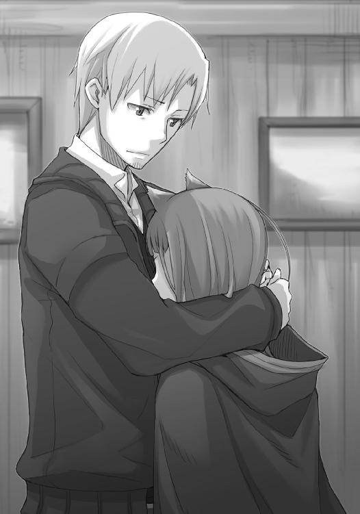
「なにが正しいのかなんて、誰にもわからんさ」
倉庫にいたせいか、ホロの頭は少しだけ埃臭い。
「おまえ自身、自分の信念のためになら命を投げ出す覚悟がある。違うか？」
しばらくホロは動かない。
それでも、ゆっくりと、うなずいた。
「自分が土の下に埋まった時のことを考えてみればいい。お前は賢狼ホロだろう？」
仲間が自分のことを思ってくれるのはとても嬉しいことだろう。
しかし、いつまでも墓の前にいたらどう思うだろうか。
後悔だって、時間を巻き戻したいという足搔きのためにするのと、次に同じ状況になった時にうまくやるためにするのとでは、まったく意味合いが異なってくる。
ホロはうなずく。
子供ではないし、馬鹿ではない。
さりとて、全ての感情を自分ひとりで制御できるわけではない。
「それに、ひとつだけわかることがある」
ロレンスが言うと、ホロの耳がひくりと動く。
笑ったのは、ホロを笑うためではない。
「お前が気に病むと、俺も気に病んでしまう」
一人で行商をしていた頃は、こんな言葉を言う相手も、言ってくれる相手もいなかった。
危険な商いに手を出す時は、野垂れ死んでもともとさ、とうそぶいていた。
死んだ相手はずっと墓の中にいる。
だが、生きている相手は、今目の前にしかいない。
「たわけじゃな」
呟くように言ったホロの言葉は、誰に向けてのものかわからない。
多分、自分とロレンスの両方だろう。
「そのとおり。なら、次にすることは？」
ぐ、とホロが言葉に詰まる。
倉庫にコルを置き去りにしてきたのは、きっと単純に自分の知る景色が見つからず、コルの知る景色だけが見つかったから、というわけではないはずだ。ホロの知る景色が見つからなければ、あのコルの性格のことだから、一生懸命探そうとするに違いない。
そして、探せば探すほど、見つからないという事実が二人の胸に重くのしかかる。八つ当たり、といえるほどではないだろうが、倉庫に残されたコルの気持ちはいかばかりか。
ホロは、こう言った。
「謝ってきんす」
「そうしなさい」
保護者ぶって言ってやると、腕の下から抜け出したホロは、いーっと牙を剝いて笑っていた。
時間は巻き戻らないし、なにが正しい選択かなど決してわからない。
ならば、せめて今を楽しみ、大事にすること。
ロレンスに言えるのはそれくらいだし、あとはホロが判断すればいい。
ロレンスはそんなことを思いながら、再び本を開いたのだった。
「フラン・ヴォネリ様がお帰りに」
ロレンスはホロの膝を軽く突き、立ち上がる。
そして、振り向いたその瞬間、きちんと笑顔だったかはちょっと怪しい。
すぐ側に牙を剝いた狼がいたってそんな顔はしないだろうといったユーグの陰から、ひょいと姿を見せた小柄な娘。
コルと大差ないから、ホロと並んでも同じくらいだろう。
その姿に一瞬頭が真っ白になってしまったのは、不本意ながら、その容姿を見たせいだった。
別に、ホロのように獣の耳を持っているでも、ハスキンズのように頭に巨大な羊の角を頂いているわけでもない。
いたって普通の少女。
そう。その肌の色と、瞳の色を除いては。
「こちらの商人様が？」
綺麗な声は育ちの良さを窺わせる発音だった。
美しさには色々あるが、フランのそれはロレンスが初めて目の当たりにするもの。漆黒の髪に漆黒の瞳。そして褐色の肌ははるか南の砂漠の民のものだ。魔術師めいた美しさといえばいいのだろうか、そんな不思議な魅力が彼女にはある。
たとえホロの巨大な真の姿を目にしても怯まないような、熱砂の地獄と呼ばれる地方を生き抜く強靭な民の力。
ロレンスは、固唾を飲んでから、ようやく口を開いた。
「クラフト・ロレンスと申します」
フラン・ヴォネリは笑顔でゆっくりとうなずいて、「フラン・ヴォネリです」と自己紹介。
「立ったままではなんなので」
と、気遣うユーグの言葉に、ロレンスたちは各々席につく。
コルがホロに服を引っ張られてようやく座ったのは、フランの不思議な雰囲気に当てられぼんやりしていたからだ。
「それで、ご用件はどのようなものでしょうか？」
砂漠の民はまったく異なった言葉を喋るというが、フランのそれは聞きなれたもの。
しかも、発音の端々はしっかりしていて、相当教養が高いようにも見える。
偏屈だというが、そんな心配は杞憂なのではないだろうか。
ロレンスは商人の笑顔の下でそんなことを思いながら、用件を口にした。
「はい。我々は、実は北の地のとある場所を目指して旅をしているのですが、そこに関する情報を、古い地名でしか持っていないのです。そこで、北の地の古の伝説にお詳しいという貴女のお力を借りられればと思い、こちらの商会にやってまいりました」
話をじっと聞くフランの顔は真剣だ。
ロレンスの言葉が終わり、フランは静かに聞いてくる。
「その地名というのは？」
「ヨイツ」
ロレンスの言葉に、フランはすっと目を細めた。
「ずいぶん、辺鄙な土地の古い地名ですね」
「ご存じなのですか？」
半ば演技、半ば本気で勢い込んで質問するが、フランは微動だにしない。
何事にも動じない、占い師のようだ。
「存じておりますが、北の地の地図は描き手の少ない非常に貴重なもの」
「もちろん、お礼は存分に」
言った瞬間、ホロに足を踏まれたが時すでに遅し。
きっと、ホロはとっくにフランの本性を見抜いていたのだろう。
「存分に？」
フランは驚いたように言う。
ユーグが、フランの座る長椅子の後ろで、目を覆っていた。
「では遠慮なく、リュミオーネ金貨五十枚ほど」
口べたで交渉の機微などわからない職人風情。
そんな油断があったのか？ と、ロレンスは自問するが、自問したところで時間は巻き戻らない。地図一枚にリュミオーネ金貨五十枚など払えるわけがない。
ほとんど子供騙しですらある、基本的な断りの術。
引っ掛かってしまった自分の間抜けさと、なんのためらいもなくそんな大振りの手段を繰り出せるフランの大胆さに、ぐうの音も出ない。
ホロの手前もあって、焦って次の言葉を言いかける。
フランの涼やかな声が響いたのは、その瞬間のことだ。
「ですが、場合によっては無料で描いても構いません」
「え？」
つい、仮面がずれて本音の声が漏れてしまい、ホロが呆れるようにうつむくのがわかる。
一度狂った歯車は修正するのが難しい。
しかし、フランが言葉を向けたのは、そんな間抜けなロレンスにではなく、ホロだった。
「そちらの方、修道女の格好をされていますけど」
「......ホロという」
ホロも言葉を向けられるのが意外だったらしく、少し間をあけてから、訝しげに答えた。
「ホロ、さんと仰るのですか。初めまして。フラン・ヴォネリといいます」
ホロは賢狼を自称する狼だ。
狩りの際には冷静に、頭に血を上らせることなどない。
「わっちが、なにか？」
「はい。修道女の方でしたなら、お願いがあるのですが」
その言葉に一番慌てたのは、フランの目論見に気がついたらしいユーグ。
息を飲んでフランに声をかけようとするが、フランは片手を上げてそれを制す。
気難しい職人様。
その権化が、そこにいた。
「わっちにできることであれば」
フランはにこりと笑う代わりに、軽く首をかしげた。
「難しいことではありません。ホロさんと、ロレンスさんと、それと......」
「あ、あ、コ、コルといいます」
コルの言葉にはうなずくだけで、「コルさんと」と続ける。
一体なにをさせるつもりなのか。
「三人なら、きっと大丈夫」
ユーグがロレンスたちにやめろと必死に目で訴えかけてくる。
フランは、こう言った。
「タウシッグで話を集めるのに協力してください」
「......それは、あれかや」
「はい。ユーグさんからお聞きになられました？ 私がこの町にいる理由です。その伝説の詳しい話を一緒に村で集めて欲しいのです」
そんなことでいいのか、と拍子抜けしてしまうが、ユーグは気を揉むようにそわそわしている。どうやら、話で聞くほどには簡単なことではなさそうだ。
ロレンスは、今しがたの失敗を恐れず、フランの機嫌を損ねるのを覚悟で、返事に猶予を貰おうとした。
その全てに先んじたのは、他ならぬホロだった。
「それで、地図を描いてもらえるんじゃな？」
「ええ。情報を集めていただいて、その正しさが証明されたのならば」
ホロの口元が笑った気持ちがわからないではない。
フランは賢い娘だった。
ホロが面白がって対抗心を燃やすのに不足はなかっただろう。
情報を集め、その正しさが証明されたのなら、などという曖昧な言葉、いつもならば一笑に付し、意味をはっきりとさせ、場合によっては捩じ伏せたかもしれない。
それが、ホロは聞きなおしもせずに、さっさとうなずいていた。
「なら約束じゃ」
「よろしくお願いします」
フランはぺこりと頭を下げ、顔を上げるとさっさと立ち上がってしまう。
引き止めるつもりだったのか、声をかけようとしたユーグに無表情で問いかける。
「出発の準備は？」
「あ、で、できておりますが......」
「では、出発は明日で。ロレンスさん、馬車の扱いは？」
うなずくと、フランが言葉を続けようとしたので、せめてもの見栄として先回りして答えた。
「明日でも大丈夫です」
すると、フランはほんの少し微笑んだ。
もしかしたら、ロレンスのそんな背伸びをするような振る舞いが面白かったのかもしれない。
しかも、その笑顔は少女のように無邪気なもので、ロレンスは自分の油断を改めて後悔する。
無表情に、本当に気難しくて頑固なだけの相手ならば、御すのは意外に簡単なのだ。
本当に難しいのは、笑顔を上手に使い分けられる相手であり、だからこそホロには散々手を焼いている。
こんな笑顔を他人に見せられる相手だとわかっていたら、もっと身構えたのに。
キーマンの話や、ユーグの話から先入観を抱きすぎだった。
「ユーグさん」
フランは短くその名を呼び、ユーグが丸い体を縦にしようと背筋を伸ばす。
「食事は部屋にお願いします。明日の準備がありますので」
「は、はあ。あの、でも......」
「でも？」
ホロもよくやる、笑っていない笑顔。
ユーグは黙りこくり、おとなしくうなずいた。
「ホロさんたちへの諸々のご説明、よろしくお願いしますね」
そして、最後にそんな言葉を残して、部屋を出ていったのだった。
隣で、尻尾がぱんぱんに膨らんでいた。
それでも顔は楽しそうな笑顔なので、余計に怖い。
ロレンスは、言い訳から口にする愚だけは避けることにした。
「すまん」
「たわけ」
短く言うホロは、こちらを見てくれない。
コルは触らぬ神にたたりなし、とばかりに身を縮めているし、ホロはにこにこ笑っているばかりで口を開く様子がない。
沈黙を気の毒だと思ったのか、口を開いたのはユーグだった。
「私もあの大胆さと、反論を許さない笑顔に散々苦労したのです。そのくせ、中身は本当に偏屈で頑固な銀細工師でして、町の中で追いかけ回し、野や山までも追いかけ回し、ついに山の中で事故に遭われたところをお助けして、ようやく話を聞いてくれたという次第なのです。ですから......その、曖昧な条件でも、対話の土台に立ってもらえたのは幸運なことだと思います」
最後の言葉は、ホロに向けて。
ホロは大きくうなずいて、ようやく不気味な笑顔を消してくれた。
「えっと......それで、タウシッグという村にはなにかあるのですか？」
気を改めたロレンスの質問に、ユーグは軽く首を横に振る。
「どこにでもあるような村ですよ」
「それならば、なぜ？」
ユーグはいったん目を伏せると、窺うような上目遣いになって、言った。
「森と湖にまつわる伝説は、そんなに大したものではないのです。曰く、湖から流れ出る川に沿って天使が歩き、天から聞こえる獣の鳴き声と共に開いた黄金の扉に向けて、滝を駆け上るように天使が飛び立っていった、と」
確かによくある伝説の一つにしか聞こえない。
ただ、ユーグは言葉をあとに続ける。
「その他に、もう一つ、その手の話があるのです」
「もう一つ？」
聞くとうなずき、諦めたように語り出した。
「魔女伝説、とでもいうのでしょうか。私も詳しい話は知らないのですが、川の上流、レノスという町ではそこそこ有名だったようです。魔女と呼ばれた修道女が、タウシッグを訪れ、住み着いたというような伝説というか、噂話です。タウシッグは正教徒の領主様が治める土地ですから、もちろん魔女がいるなどということは否定しておりますが......」
「ああ、なるほど。そのせいで、村人がひどく排他的になっている、というわけですか」
ユーグは、うなずく。
「あの方がロレンスさんたちにお頼みしたのも、ご自分ひとりで村に行けば話を聞くどころではないとわかっていたからでしょう。なにぶんにも、この辺りでは珍しい容姿ですから」
人よりもはるかに長生きするユーグがそう言うのもわかる。
ロレンスだって、褐色の肌の娘など、なかなかお目にかかることがない。
「彼女は砂漠の民なのですか？」
「というお話です。ですが、物心ついた時にはすでに両親はおらず、ラオンディール公国の裕福な両替商の下にいたとか。その後どういう経緯で銀細工師になられたのかなど詳しくわからないのですが、奴隷だったのだよ、といつか冗談まじりに言われていましたが、あのような方なので、どこまで冗談なのやら......」
ユーグが苦笑いする気持ちもよくわかる。フランの話し方を聞けば、誰だってすぐにそれなりの出自だとわかる。もちろん奴隷といっても主人によって扱いは様々だから、心優しい裕福な家に買われたのかもしれないし、逆に養子ということだったのに奴隷並の扱いを受けることだってある。
ただ、キーマンの話と被るところもあり、全てが合っていなくとも、いくつかは真実を含んでいるのかもしれない。
「あの肝の据わりようも、相当なものですよね」
「はい。ですから、私はどこかの勇猛なる戦士の家系だったのではないかと思っているのですが......なんにせよ、謎の多い方です。あ、今のことは」
「ええ、もちろん内密に」
ユーグはうなずき、ロレンスも話題を元に戻す。
「ユーグさんは懸念されていたようですが、村はそんなに危険なのでしょうか？」
様々な理由で排他的になる村は思いのほか多い。
よそから人のやってこない土地なら、それだけで外の人間は疑わしい。魔女がいると疑われているような場所であれば、やってくるよそ者全てが密告者に見えるだろう。
「正直言いますと、わかりません。特に商いになるような場所でもないので、滅多に村の人間は町に来ませんし、町の人間はもっと村に行きません。正直、なにか食べ物を入れておいたはずだが、いつ、なにを入れたのか忘れてしまった甕のような村です」
言い得て妙なたとえだ。
蓋を開けたら中が大変なことになっているかもしれないし、だからこそ余計に開けなくなる。
「じゃが、わっちがおっても危ないと思うような場所かや？」
ロレンスとユーグの間の重苦しい空気を両断したのは、ホロのそんな言葉だ。
ロレンスがユーグと目を見合わせたのは、同じことを思ったからに違いない。
「お前がそう言うのなら、俺たちがどうこう言う問題ではないが......」
「ならば構わぬ。金貨五十枚の代わりにわっちらを使い走りにじゃと。まったくいい度胸じゃ」
憤慨した顔ならばまだしもまし。
それを笑顔で言うのだから、手がつけられない。
「それに、あのたわけ、ぬしらが及び腰になっておる北の地のことにも詳しいのではないのかや。爺のハスキンズがそう言っておったんじゃろう？」
そのとおりだ。
「二兎追う者は確かに一兎も得ぬがな、たくさんのことがあのたわけの頭に詰まっておるし、幸い頭は一つしかありんせん。ならばここでかじらねばいつかじるのか」
威勢のいい啖呵、と聞こえなくもない。
それでも、そんなことを軽々しく口にするようなホロではない。
頼れる仲間が側にいて、諫めたり、軌道を修正したりといったことは周りがやってくれる、という信頼があってこそのものだろう。
ホロの不敵な笑みに、そんなものが見て取れた。
ならば、ロレンスが反対する理由はない。
「そういうわけじゃ。ユーグとやら」
「は、はい」
ホロの言葉に背筋を伸ばす。
丸い体を精一杯に伸ばしたユーグに向かい、ホロは笑顔でこう言った。
「わっちらがついていった結果あのたわけが激怒して、ここと取引してくれなくなるようなことがあったとしたら......」
その可能性は、無きにしも非ず。
しかも、それはユーグたちにとって多大なる損失だ。
ホロはなんと言葉を続けるのか。
ロレンスたちの注視が集まる中、ホロは軽い調子でこう言った。
「それは、んむ、その時は謝りんす」
ユーグも世を見てきた絵画商。
引きつった笑みを本物の笑みに変えて、突き出た腹をぽんと叩く。
「狼様はそうでなくては」
「んむ」
わざとらしい芝居。
それでも、羊と狼にしては、きっと奇跡的な仲の良さだろうなと、ロレンスは思ったのだった。
翌日、ユーグの商会の荷馬車に揺られ、ロレンスたちは一路タウシッグと呼ばれる村に向かって北上していた。荷台には山ほどのパンと肉、タマネギやニンニクに酒や塩といった食料から、薪や毛布まで山積みだった。
ロレンスはそんな荷馬車の御者台で手綱を握り、ホロとコルは荷物の隙間に埋もれるようにして荷台に乗り込んでいる。村までの道を知っているフランは、一人馬に乗って先頭を進んでいた。
荷馬車に乗るのは久しぶり、というわけでもないが、やはり自分の荷馬車でないとなんだか違和感があった。
「一体......何様なんじゃ、あのたわけは......」
そんな旅の途中、ホロは途切れがちにもごもごと聞き取りづらい言葉で喋る。
「そんなにうまいか」
ロレンスが後ろを振り向きながら呆れたように聞くと、ホロの隣でぎくりとコルが身を強張らせた。いつもは与えられた分しか口にしないコルが、珍しくパンの詰まった袋にお代わりの手を差し込もうとしていた瞬間だった。
「ああ、お前のことじゃないよ。二個目だろう？ 隣のそいつなんて六個目だからな」
ロレンスがわざとらしく指差しながら言うと、コルはしばしロレンスと袋の中を見比べて、うなずいた。
清貧の二文字がこれ以上ないくらいに似合うコルすら虜にしてしまうもの。
それはたっぷりのバターを練り込んだ、焼き立ての巻きパンだった。
ホロはむぐむぐとパンを嚙み切り、次の一口は端っこを咥えたまま引っ張って食いちぎり、最後の一口は大口を開けて放り込む。
ばくばくと食べるたびに、口元から白い息が立ち昇る。
寒い馬車の上で焼き立てのパンとなれば、コルだって目がくらむ。
ロレンスも一つ貰ったが、これに口が慣れてしまっては二度と旅には出られないだろうな、という代物だった。
「こんなパンをどっさり貰えるなど、ぬしよ、ぬしも絵描きにならぬかや」
「品物の簡単な絵くらいなら描けるが......まあ、あとは店の絵だな。お前にも見せただろ？」
自分ひとりで荷馬車に乗り、暗闇に落ちている小銭を拾うがごとくの毎日を過ごしていた時のこと。あの頃、大きな儲けが入るたびに、ロレンスは紙を広げて将来に持ちたい店の外観を描いていた。
「むう......そういえば」
その店を持つというロレンスの夢は、ホロとの旅のためにひとまず棚上げになっている。
ホロは顎を引くと、体を御者台のほうに寄せてきて、ぐいとパンをロレンスの口に押しつけてきた。申し訳なさそうな顔をするでも、苦しそうな顔をするでもない。
ロレンスが押しつけられたパンに笑ってかじりついたのは、それが互いに互いの気持ちがわかっていてこそ可能なやり取りだったからだ。
「コルは描けないのか？」
と、ロレンスが肩越しに振り向いて言葉を向けると、ちょうどコルは食べかけのパンを自前のずだ袋に入れようかと真剣な顔で思案しているところだったらしい。恥ずかしいところを見られたかのように、びくっと体をすくませていた。
コルが慌ててなにか答えようとし、ロレンスがそれを笑おうとする。
が、そのどちらよりも早く、ホロは新しく手にしたパンをぐいとコルの袋の中に押し込んだ。
呆気に取られているコルに、不敵な笑みを忘れない。
「あ、あの......えっと、天使や精霊の絵でしたら......」
「写本の細密画か？」
コルはくすぐったそうな笑みをホロに返してから、ロレンスのほうを向いてうなずいた。
「はい。お金がなくて、筆写のために羊皮紙を伸ばしたり鋲で留める仕事をしてた時に、写字生の方に少し教えてもらいました」
コルは、異教の故郷を守るために教会権力の中枢に入らんとして、単身南に下ってきたような少年だ。
ただ、どちらかといえばそんな血生臭いことよりも、日がな一日脇目も振らずに書物の前にいるほうが似合っている。生まれと育ちが違いさえすれば、きっと知の世界で名を成したことだろう。
そして、ロレンスはホロに視線を向けて、わざとらしくこう言った。
「お前は......いや、聞くまい」
ホロが絵筆を取ったとしたら、きっと一目でそれとわかるような絵を描くことだろうから。
「ふん。わっちゃあ絵など描かぬ。林檎を描いたところで食えぬからの」
ばくり、とパンを食べながら、言ったのだった。
「まあ、フランさんの場合は本当にこんな貢物に見合うくらいの凄腕なんだろうさ。それに、各地の伝説を追いかけているんだ」
ロレンスは草原の遠くにかすかに見えたまま、一向に近づいてこない山々のほうを見ながら静かに言った。
「困難は数知れないだろうからな。北の地は、未だに陣取り合戦の最中だ。信仰が迷信に、迷信が信仰に目まぐるしく変わる中で、あちこちの伝説を追いかけるにはなみなみならぬ危険を冒さなければならないはずだ。だから、これはまあ、もしかしたら妥当な報酬なのかもな」
それに、北の地では北に行けば行くほど良質の石が採れなくなり、大きな建物であっても木造が多くなる。そのために北の地の教会には色ガラスで描いた聖人や、柱頭に刻まれた彫刻といったものがなく、自然と、教えを広めるのに絵に頼る機会が多くなる。
需要が多ければ供給側に多く貢がなければならないのは当然の理。
「あやかりたいものだ」
とロレンスは一人呟いて髭を撫でる。
「んむ。わっちゃあ十分あやかった」
ぽん、と軽く腹を叩いてホロは言うと、さっさと毛布を体に巻き始めたのだった。
その日の夜は、枯れた色の草原の真ん中で一泊することになった。
人や馬の進む速度は多少の差はあれ大して変わらない。すると、ちょうどそこで皆が夜を迎える場所というのが自ずと出来上がる。
ロレンスたちが馬を止め火を熾したのもそんな場所で、草が刈られ、火を熾した跡がいくつもあった。
一番嬉しかったのは、腰掛けるための丸太があったこと。
皆も同じように感謝したらしい。丸太の一部は皮が綺麗に剝ぎ取られていて、そこにはここで一夜を過ごした者たちが、感謝の言葉を刻み込んでいた。
ロレンスたちは夜の冷え込みのせいですっかり固くなってしまったパンを火で温め、干し肉を焼き、チーズを炙ってかじりつく。風はないが、所々にうっすらと雪が積もっているくらいに寒いので、自然と丸太の上では小鳥のように身を寄せ合うことになる。それに、各々毛布を一枚ずつ体に巻くよりも、三枚の毛布を重ねて三人一緒に包まったほうが温かい。
ただ、それは三人で、四人ではなかった。
フランは一人、荷馬車の荷台の上で横になっていたのだ。
「石が焼けましたよ」
ロレンスが焚き火の中で石を焼き、布で包んで持っていくと、フランは荷物を枕に仰向けになってぼんやり空を眺めていた。パンもチーズも食べかけのまま脇に置かれていて、まるで星空に見惚れるあまり食べるのも忘れてしまったようだ。
ロレンスが布で包んだ石を掲げると、もそもそと毛布の下から手を出してきて受け取った。
その拍子にちらりと見えたのは、毛布の下で抱えていた分厚い本。
ロレンスも冬の一人旅で火を熾せなかったりする時には、ありったけの紙を腹に抱いて眠ったものだ。紙は抱えていると毛布よりもよほど温かい。
どうやら、フランも旅には慣れているらしい。
「火の側でなくていいんですか？」
聞いてみると、フランは焼いた石を毛布の下に収めて再び空を向いてから、答えてくれた。
「視界が奪われるので」
なるほど、とうなずく。
焚き火は獣を追い払うが、逆に人を引き寄せる。その良し悪しまではわからないし、火を見つめているといざという時に暗闇の中で視界がまったく利かなくなる。
単に旅慣れているだけでなく、それなりの経験も経てきたというわけだ。
「明日のことなのですが」
ロレンスの言葉に、フランは視線を向けてくる。
体を起こすつもりはないようなので、そのまま言葉を続けることにした。
「村に着いてからは、どのような段取りにしますか？」
ユーグの商会では、初対面でいきなりぐうの音も出ないあしらい方をされてしまった。
それは翻せば、フランから見ればロレンスはその程度の商人という印象になっただろう。
情報を集めるためにロレンスを連れてきたものの、そんなロレンスたちに任せっぱなし、というのは嫌がるかもしれないと思ったので、ロレンスは若干卑屈な感じで尋ねてみた。
ただ、フランはじっとこちらを見つめたあと、ふっと笑顔になって目を閉じる。
まるで、ロレンスの考えを全て見抜いたうえでの笑みのようだった。
「お任せいたしますよ」
意外な言葉に驚いてしまうが、任されたのならば期待には応えるべき。
すぐにこう言っていた。
「では、我々は教会所属の銀細工師にして修道女のご一行、ということでいかがでしょう」
「......問題ないと思います」
吟味は一瞬のこと。概ねどんな具合にするのか予測がついていたのだろう。
「うちのホロは見習い修道女で世話役。コルは道案内の小僧。私は行商人であり、同時にこの一行の目と耳と口の役割ということで」
「構いませんよ」
フランはそう言ったが、うっすらと笑っている。
ロレンスは気になって、聞き返す。
「なにか？」
「......いいえ。役者さえ揃えば、確かに私も修道女に見えるだろう、ということが面白かったのです」
自分自身のことを客観視できるのは、ある種の特技に数えられる。
ロレンスが少し言葉に詰まってしまったのは、フランのその、もう一人の自分を見ているような物言いが、あまりにも自然だったからだ。
「教会の場所は？」
そう言ったのは、フラン。
唐突に投げられた言葉の隙間を必死で埋めてから、答えた。
「教会都市リュビンハイゲンから来た、ということでいかがでしょう。あそこならば、教会は一つではありませんし、派閥もたくさんありますから。適当なことを言っても、まずばれないでしょう」
「......」
目を開けて、フランがこちらを見る。
なにかまずかっただろうか、と思う前に、顔を空に向けなおしたフランが、言っていた。
「ずいぶん遠くの町をご存じですね」
そういうことか、と安心する。
「確認のできない噓は真実と変わりませんから。そのくらい離れているほうがいいかと」
空を見たまま、うなずく。
それから、言葉を紡ぐ。
「そちらに根城が？」
根城、という言葉の選び方が面白かった。
それではまるで、山賊か傭兵だ。
「私はそもそもその周辺を回る行商人なんです。ホロはその近くの村に立ち寄った時に、勝手に荷台に潜り込んでいたんですよ。それで」
と、言葉をいったん切ったのは、すぐ後ろで丸太に座りながら酒をちびりちびり飲んでいるホロを振り返ったため。こちらを振り向いたのはコルだけだったので、ロレンスはフランに向きなおって、言葉を続けた。
「北に行きたいから連れていけ、と。コルについては、ローム川を下っている時に、ひょんなことから一緒に旅をすることに」
再び空を向いて目を閉じていたが、聞いていることだけは雰囲気から察せられた。
こんな話に興味を示すなど、フランもその近辺になにか思い入れがあるのだろうか。
そう思っていたら、しばらくの間をあけて、フランは空から聞いた言葉を口にするように、言った。
「では、北の地の地図というのは」
瞼が開き、晴れた夜の星空が溶け込んだかのような目がこちらに向けられる。
頑固で偏屈でも、それゆえに人情には人一倍厚い、なんていうのはよくある話。
ロレンスは、それを利用するわけではないが、最大限効果的に、言った。
「ええ......ヨイツという名は、連れが自分の故郷について覚えている、唯一のものだそうです」
フランの目は、揺らがない。
「そうですか」
言って瞼を閉じると、今度は空を向くわけでもなく、少し斜めに頭を置く。
毛布の下で軽く体を動かし、小さなため息があとに続いたので、これから眠るのだとわかった。
一方的に話を打ち切るところは、なるほど気難しいという表現がぴったりだったが、あまりにも典型的な振る舞いすぎる。
もしかしたら、フランは実際のところはそれほど頑固でも偏屈でもないのかもしれない。
そう思いつつも、わざわざそれを指摘したところでどうにかなるわけではない。
ロレンスが静かにその場を去ろうとすると、そこにフランの言葉がやってきた。
「明日はお任せします」
ロレンスがうなずくと、フランは気配だけで察したように、眠りに落ちていったようだった。
一際大きく馬車が揺れた。
その振動でホロは目が覚めたらしい。
「......着いたのかや」
大欠伸をして、暢気に軽く首を横に振っている。
近くなっていた山にはこの季節でもこんもりと木々が生い茂り、ところどころ白いものが見えた。平面に見えていた草原も、全体としては緩やかな上り坂だったらしく、来た方向を振り向けば結構な高さまで来ていることがわかる。ケルーベよりも空気が冷たい気がするのは気のせいではなく、道には雪がうっすらと積もっていた。
「この道を曲がってまっすぐ行けば、もう村だそうだ」
膝丈ほどの黄金色の草原を、一筋の道が東のほうに伸びている。曲がらずにまっすぐ行くと、山の麓に通じているらしい。
ロレンスたちがここでいったん馬を止めたのは、村に入る前に役割分担と口裏合わせの確認をするためだった。ホロは昨晩こそ不服そうだったが、この手の芝居じみた噓は元々好きなはず。
一通り確認し終わってフランを先頭に再び進み始めると、ローブの下で尻尾が楽しげにゆらゆら揺れていた。
「そういや聞きそびれていたが、伝説の話、お前のことじゃないよな？」
ふとそんなことを聞いたのは、気が急いているらしいフランとの間に距離が開いてからのこと。干し肉のかけらを咥えていたホロは、つまらなそうに言う。
「生憎、鳥の知り合いはいつだったかの小娘以外におらぬし、わっちゃあ羽など生えておらん」
「心当たりも？」
ホロは無言で首を横に振って、ため息をつく。
「伝説の当人がわっちであったのなら、あのたわけに地図を描かせられるじゃろうに......」
手を煩わせてすまない、とでも言わんばかりにしゅんとするホロ。
演技と疑えば怒るだろうが、演技でないわけがない。ロレンスは、ホロをいたわろうと必死に言葉を探しているコルと目が合うが、返したのは笑みだ。
「とんとん拍子で話が進んだら、残った時間になにをするんだ？」
ホロはふっと顔を上げて、笑う。仲のよい姉弟のようにコルと手をつないで座っているせいもあってか、ひどく幼く、見た目相応の少女のようだった。
きっと、全部が全部本気ではないが、素直な気持ちの一つだったのだろう。
そんなことをしていたら、遠くに竈からのものだろう幾筋もの煙が見えてきて、程なくして村の入り口にたどり着く。ホロは村の規模を見て、悪びれもせずにこんなことを言った。
「小麦パン、少し食べすぎだったかや」
山の麓にひっそりと佇むタウシッグは、確かに小麦のパンは望めなさそうな村だ。
半ば山裾に埋もれるような形で、申し訳程度に害獣を防ぐための木の柵と、その柵にくくりつけられた邪悪なものを祓うための教会の紋章がある。
事前に魔女の話を聞いていなければ、きっとそれを奇妙なものだと思っただろう。
なにせ、その紋章は背後の闇と恐怖の対象である山には無頓着に、開けた草原に向けられていた。その様は狼ばかり怖がって自らの背後に山賊がいることに気がつかない、間抜けな旅人を想像してしまう。
ただ、タウシッグの村はもっと閑散として陰鬱な所かと思ったが、そういうわけでもない。家の向こうからは子供たちの楽しそうな声が聞こえてくるし、広々とした村の道ではのんびりと山羊や羊が道草を食いながらぶらぶらと歩いている、どこにでもある普通の村。
諍いの原因は、互いのことを知らないことからくる疑心暗鬼がそのほとんどだというが、あながち間違いでもないのかもしれない。
ロレンスは荷馬車から降りて、馬上のフランに目配せをする。フランはうなずいて、「お願いします」と小さく言ってきた。
左手にフランの馬の手綱を、右手に荷馬車の馬の手綱を持って、ゆっくりと村の中に入っていく。しばらく行くと、村の入り口の一角にある切り株に腰掛けていた老人が、ようやくこちらに気がついた。
「さて」
ロレンスは短く言って、商人の笑みを顔に張り付けた。
「おや、おや......旅の方かね」
老人はどうやらここに座って放し飼いの動物たちを見ているらしい。手には羊追いのためだろう杖が握られている。
「初めまして。旅の行商人で、クラフト・ロレンスと申します」
「ほう、商人様？」
こんな村に一体なんの用だろう、と皺に埋もれた目がロレンスに向けられる。
村の中では、先に子供たちが、次いで他の村人たちも珍しい客に気がついたらしい。
軒下から、あるいは木窓の隙間から、次々とこちらのことを窺ってくる。
「我々ははるか南のほうにあります、リュビンハイゲンという所からやってまいりました」
「リュビン......」
「リュビンハイゲンです」
老人はうなずきもせず、しばしロレンスのことを見つめたままじっとしていた。
動かないと、まるで木の皮を縒って作った人形のようだ。
「教会都市と呼ばれております」
ふと、その目がロレンスから動いたかと思うと、視線が向いていたのは馬上のフラン。少し遅れて、荷台から降りたホロとコルにも向けられる。
そして、不意にため息をついてこちらを見上げてきたその視線は、不安げなものだった。
「教会の方が......なんぞこの村にご用で？」
子供が見たら泣き出しそうなくらい、満面の笑顔でロレンスは答えた。
「ええ、実はこちらの土地に、聖なる天使が舞い降りたという伝説があるとお聞きしまして。我々は忠実なる神の僕。是非お話だけでも伺えればと思ったのですが......」
老人の、反応は鈍い。
冗談めかして、ロレンスはこう言った。
「天使様は、今はこの村に？」
「いいえ！ 滅相もございません」
突然大きな声で言われ、ロレンスは面喰らってしまう。
大声に驚いた豚が金切り声を上げ、山羊が相の手を打つ。
鶏が飛べもしないのに羽ばたいて逃げると、老人はロレンスの目を見てはっきりと言った。
「この村とは一切関係ございません。立ち寄ったのは確かでございます。ですが、道を聞かれただけでございます。決して、決して村は関係ありません」
あまりにも必死に主張するが、ロレンスは慌てながらも頭の中は冷静だ。
立ち寄った？ 村は関係ない？
「わ、わかりました。わかりましたから」
話を聞くどころではなく、手で遮ってそう言うのが精一杯だった。
老人はぜえぜえと肩で息をして、なおもなにか言いたそうに目を見開き前のめりになっている。わなわなと震えた唇は、興奮のせいとも、また恐れのせいとも見える。
しかし、一体なにがこんなにこの老人を？
ロレンスがそう思った頃、村の中から何人かの男たちがやってきた。
後ろで衣擦れの音がしたのは、コルがはっとして身構えたから。ホロすら身構えたのは、彼らの手には大きな鉈やナイフが握られていたからだ。
ただ、馬上でフードを目深に被り、うつむいているフランは微動だにしない。
ロレンスが安心するようにと手で示したのは、別にフランに対する見栄でも、気休めのためでもない。武器だけ持っていたらロレンスも回れ右をしたかもしれないが、フランが慌てないのも同じ理由からだろう。
やってきた村の男三人の手は揃って肘まで血に染まっているし、その顔は揃いも揃っての迷惑顔だったから。鉈やナイフは獲物を捌いていたのだろうし、なによりも誰かを殺すつもりの時、意外と人は迷惑そうな顔をしないものだ。
「旅人さんご一行か」
三人のうち、一番体格のよい壮年の男が口を開く。
老人は振り向いて、何事かを言いかけた。
「大丈夫だよ村長さん。落ち着いてくれ」
ぱくぱく、と口を動かす音だけが聞こえた。どうやら、村人たちの迷惑顔はよそ者であるロレンスたちだけにではなく、村長である老人にも向けられていたらしい。
「サーカ！」
男が振り向いて大声を出すと、家の中から一人の女性が出てきた。
身振りで村長を示すと、事情を察したのかすぐにうなずいて、駆け寄ってきた。
男はサーカと呼ばれた女に村長を引き渡し、いたわるように背中を撫でてから、こちらを振り向いた。
「悪いね旅人さん。なにかひどいことを言われなかったかい？」
男は言って、どすっと鉈を地面に突き立てた。
手にこびりついた臓物を無造作にズボンで払うその男は、この一行の中で、誰が会話役なのかを瞬時に見抜いてきた。町に住んでいれば当たり前のことだが、村の中で一生を終える者たちにはなかなか理解できないこと。
ロレンスも、身分や格というものがいかに幻想であるのかを、たまに思い知らされることがある。
「いいえ。ただ、なにかまずいことをお聞きしたのか、ひどく怯えていらっしゃるような......」
ロレンスが探りを入れるように言葉を向けると、髭面の村人は困ったように笑った。
「災いはいつも外からやってくるからね」
世慣れている。
村の交渉事を担当している立場なのかもしれない。
それならば、礼を示せばそれなりのものが返ってくることだろう。
「私の名はクラフト・ロレンス。行商人をしております」
そして、右手を差し出した。
男はロレンスの顔をじっと見て、次に自分の手を見て、それからロレンスの差し出した手に目をやった。
しばらく間があいたが、結局男は手を取って、「ウルー・ミュラーだ」と名乗った。
「それで？ 村長さんが怯える理由にそう選択肢は多くない。一つ。お迎えが来たか。二つ。徴税吏が来たか。三つ。村の良からぬ噂を聞きに来たか」
山間の村々は農作業の合間に狩りをする。
腕組みをするミュラーの腕は、ロレンスの倍はあるだろうし、肘まで血に染まっているからその迫力たるや凄まじい。両脇には敵意こそ感じられないものの、力仕事の最中であったことを示すように、刃物を持ったまま肩や頭から湯気を立てている男がいる。
しかし、ここで怯んでは自分たちに負い目があると示すようなものだ。
「実は、我々は天使の伝説に関するお話をお聞きしたくて、やってまいりました」
「天使の？」
眉根に皺を寄せ、ロレンスの後ろにいる一行に目を向けると、すぐに思い出したようにうなずいた。
「ああ、なんだ、そんなことか」
「お聞き、できますかね？」
若干卑屈な上目遣い。
ミュラーは、農夫のような爽やかさを残しつつ、狩人らしく豪快に笑った。
「はっはっは。そんな及び腰じゃなくてもいい。どうせ、町でこの村の良からぬ噂を聞いてきたんだろう？ 連中は町の外の人間は全員が無知と迷信の中に暮らしていると思っていやがる。もちろんそんな無知蒙昧な村も中にはあるだろうけどな、うちは違う。天使の伝説くらいならいくらでも教えて差し上げる」
人の言うことを信じていれば、この世から噓つきと泥棒はいなくなるはずだが、敢えて疑うこともない。
それに、仮にロレンスの目では見抜けないくらい相手の噓がうまくとも、ホロのそれまでも誤魔化すのは至難の業だ。
「旅人さん......あー、ロレンスさんだったか。お仲間方も、飯は？」
自分の行商であれば、たとえ腹が一杯でも断る理由がない。
フランにお伺いの視線を向けると、旅慣れたフランも同意見のようだった。
「まだです」
「なら、ついでに捌きたての鹿をご馳走できるな......」
と、辺りを見回したのは、誰にその役目を振るかで迷ったのかもしれない。
「ヴィノ、なめし作業は俺たちでやっとくから、囲炉裏を貸してやってくれ」
「おっとこれは神の思し召し」
ヴィノと呼ばれた男はおどけた調子でそんなことを言う。なめし作業はちょっとした重労働だから、その代わりに囲炉裏を貸して客人をもてなし、肉と酒に自分も与れるとなれば浮かれた言葉の一つも出るだろう。
当然、顔をしかめたのはミュラーだ。
「遊ばせてやるんじゃないからな。わかってるのか？」
体も大きいうえに歳も重ねているせいで、凄むとかなりの迫力がある。
それに対して首をすくめたのは、ヴィノの愛嬌だろう。
「わかってるよ。酒も飲むな、だろう？」
村人たちの平和なやり取りに、ロレンスは演技ではなく笑ってしまう。
ただ、その時にフランもまた、そんな様子を懐かしそうな目で眺めているのに気がついた。
古くは南の地の富裕な両替商の家にいたというが、こんなやり取りを前に懐かしそうにしているのはちょっと意外だった。
これまでの旅で起きたことでも思い出しているのだろうか、とロレンスが思っていると、ヴィノはロレンスたちを振り向いて、こう言った。フランの笑顔も、すっと引っ込む。
「じゃあ、こっちだ。ついてきてくれ」
ロレンスたちはそのままヴィノに連れられ、村の典型的な家に案内された。
家の側には、田舎の村らしく柵すらない小さな菜園があり、その隣では山羊や鶏が杭につながれて飼われている。庭に面した大きなひさしの突き出た場所では、背中に赤子を背負った女性が地べたに座り込み、頭に布を巻いて手回しの石臼で一心不乱に粉を挽いていた。
ヴィノが彼女に気安く声をかけ、歩み寄ると赤子に口づけをしていたので二人は夫婦なのだろう。女性は汗を拭って立ち上がり、前掛けと手をはたくとロレンスたちを見てちょっと驚いたあと、重大な使命を任されたかのように大きくうなずいた。
「薪を取ってくるから、先に家の中で待っててくれ！」
ヴィノの言葉にうなずいて、ロレンスたちは家にお邪魔することにした。
土を踏み固めた床に、天井から鉤の下がる囲炉裏。天井には煙を逃がすための小窓がきちんとついているようで、命知らずの鳥が果敢にも巣を作った跡が窺える。部屋の隅には藁で編んだ蓑や籠が置いてあって、いかにも冬の農村らしい。囲炉裏では今にも消えそうな火が心細そうに揺らめいていて、余計に寒そうに見えた。
フランは客としての作法を弁えていて、そんな囲炉裏の側にためらいもなく座り込む。ホロがコルと一緒に梁からつるされているタマネギを指で突ついていたら、裏庭から回り込んできたのかヴィノが部屋の奥から薪を抱えて現れた。
「この村は、手回しの石臼なんですね」
「え？ あ、ああ、まあね。荷物はその辺に適当に置いておいてくれ。これをくべたら......肉を貰ってくるから」
ヴィノはそう言って、器用に手早く薪をくべる。一息二息吹いて火を強くすると、満足げにうなずき、あわただしく外に出ていった。
「それがどうかしたかや？」
「ん？」
土壁に取り付けられた木窓の隙間から外を眺めていたホロが、振り向きざまに尋ねてきた。
石臼のことだろう。
「なに、近くに川があるらしいのに、手回しの石臼なんて珍しいな、と思ったんだ」
ヴィノの妻が抱えるようにして挽いていた石臼は、二つの石が重ね合わせられたもので、石の磨き具合にもよるが一つで一家族分の日々の食事を賄える粉が十分に挽けるだろう。
当然、大きくなればなるほど、一度に挽ける量は多くなる。
毎日のパンを焼くのに必要不可欠だから、普通は近くに川があるならそこに水車を設置して、村人全員で使ったりする。ただし無料ではなく、大抵の場所では領主が川に水車を設置して、村人なり旅人なりにそれを使わせることで税収を得る。手回しの石臼では領主が税収を得られないので、それを不思議に思ったのだ。
ホロはロレンスの返事に納得したようなしないような顔でうなずいているが、それは多分興味がないからだろう。
ロレンスが囲炉裏を挟んでフランの反対側に座ると、ホロとコルもあとに続く。
ただ、ロレンスはホロを指で突ついて、フランの隣を指差した。お付きということなのだから、側にいないとならない。ホロは少し不機嫌そうに、フランの隣に座る。
当のフランは先ほどからじっとしたままだが、石臼の話の時に視線を向けてきたような気がしないでもない。あとでホロに聞いてみるか。
ロレンスがそう思っていたら、やがてヴィノが笊に一杯鹿肉を載せて戻ってきたのだった。
天井からぶら下がる鉤につるされた鍋の中では、やせ細った人参に青菜や牛蒡などが入れられ、ぐつぐつと煮えていた。その脇には鹿の肉が山盛り用意されていて、あれだけパンを食べたというのにホロはローブの下でそわそわとしている。
ご馳走になりっぱなしも悪いので、ロレンスは荷馬車に山と詰まれたパンや干し肉ではなく、わずかの塩を差し出した。その途端、ヴィノとその妻が目を丸くするのだから、所変わればというやつだ。新鮮な鹿肉はたっぷりご馳走できても、塩の入手となると難しいのだろう。
これぞ商いの基本、とホロに言ったら、きっと鼻であしらわれるだろうが。
「そろそろかな」
ヴィノが言って、鍋をかき混ぜていた妻が肉を鍋に入れる。
きっと肉がなければ鍋はホロのお気に召すようなものではないが、ロレンスには嗅ぎなれた土の匂いがする。肉はすぐに煮え、近い順に、コル、ロレンス、ホロと椀によそわれていく。
最後にフランの椀によそわれる時、ずっと沈黙を保っていたフランが、おもむろに言った。
「私は、肉は」
鍋をよそっていたヴィノの妻は、それで「あ」という顔になる。
教会もないような村では、聖職者は肉を食べてはならないという感覚も希薄なのだろう。
慌ててホロにも視線を向けるが、ホロはホロで肉を食べられないのかと今にも泣きそうな顔をしている。
そこに言葉を挟んだのは、意外にもヴィノだった。
「なるほど節制は神の喜ぶところと聞いてますが、野菜ならば適度な量は許されているそうで」
ホロはうなずき、ヴィノがあとを続ける。
「この鹿は、生まれてこのかたついぞ木の芽以外のものを食べたことがありませんので、その実植物と変わりません。というわけで」
ヴィノは妻から杓子を受け取ると、鹿肉をたっぷり五切れは追加でホロの椀によそう。
フランにも同じ要領でよそおうとしたが、フランはフードの下で笑って断った。無理強いするかとも思ったが、結局フランの椀には野菜と汁だけがよそわれた。
しかし、それはフランの信仰心に感心したのではなく、フードの下の肌の色に気がついたかららしい。ヴィノがぎょっとしたのが傍目にもわかった。
人の行き交う町にいたって驚くのだから、村の人間が驚いてもおかしくはない。
それでも一時の宴の場を取り仕切る家主として、客に失礼な振る舞いをしては名折れとなる。
気を取りなおし、笑顔でこう言った。
「さあ、どうぞ」
その言葉と共に振る舞われた鍋を、コルがいつものように慌てて食べることなく、一口一口味わうようにしていたのは、おそらく懐かしさがあったからだろう。
振る舞われたのは、そういう料理だった。
「おいしいですね」
実にありきたりな言葉だが、ヴィノ夫妻は嬉しそうに笑う。
「この鹿は今朝方に仕留められてね。あんた方は運がいい」
「ええ、こんないい肉、町中ではなかなか食べられない」
村で気に入られるのは、よく食べてよく飲む者。
ホロの早速のお代わりに、ヴィノは目を丸くしつつ、大笑いだった。
「で、あんた方は天使の伝説？ そんなものを聞きに来たんだったか」
ヴィノは薪で囲炉裏の火を調節し、そのたびに火の粉が天井に向かって舞う。
町の中では考えられないくらい雑な火の扱い方だが、家が燃えたらまた建てればいいし、燃えたところで周りに飛び火することもないというおおらかな心持ちなのだろう。
「はい。大まかなところは町で聞いてきたのですが......」
ロレンスは椀を置き、口元を拭ってから、フランのことを示す。
「ひょんなことで道案内をすることになりましたこちらのフラン様が、どうしてもその伝説を確かめてみたいと」
「ほう......修道女様が、また、なんで？」
「こちらのフラン様は修道会に身を寄せる修道女でありながら、希代の銀細工師でもありまして。司教様の命を受け、是非とも天使の御姿を銀細工にと」
「ははあ......」
ヴィノは遠慮会釈なくフランを見つめ、フランはフランで慣れたように目を伏せている。
そうしていると、確かに神々しい雰囲気を身にまとった修道女に見える。
対するホロは大口を開けて殊更大きな肉を口に運ぼうとしていて、ロレンスの視線で一瞬動きを止めたものの、口に肉を詰め込んでから、笑顔だけは清楚な修道女になる。
「こちらのホロは司教様からフラン様のお世話を命ぜられまして、少年コルは北の生まれということで道案内の役目をおおせつかっています。不肖、私はこの一行の耳と目と口の役目をさせていただいております」
ロレンスはごほんと咳払いを挟み、ヴィノに言った。
「それで、詳しくお話を聞けたらと。それと......」
と、ロレンスは、頼み込むように、体を前に出した。
「できれば、伝説の元になった場所に案内していただきたいのですが」
ヴィノは肉を一切れナイフに突き刺し、生のまま食べる。
寒い地方では珍しくもない食習慣だからか、コルは驚かない。それを見て一番驚いていたのは、意外なことにホロだった。
「ああ、そりゃあ構わないが......」
伝説や言い伝えの残る場所は、村人たちにとっては特別な場所だったりする。
それをいかに頼み込み、懐柔してでも食い込むかが腕の見せどころ、と思っていたのだが、意外にあっさりと話が進みそうだ。
ただ、ヴィノは言ってから、嫌そうな顔ではなく、心配そうな顔をして、こんなことを言ったのだ。
「大丈夫なのかね。表の荷物を見るに、魔女の森に泊まり込むってことだろう？」
「魔女の......森？」
「俺たちの村に変な噂が立った原因さ。魔女の話も聞いてきたんだろう？」
ミュラーに釘を刺されていたからか、ロレンスたちに付き合う形で酸っぱいぶどう酒をちびちび飲んでいたヴィノは、忌々しげに手元の椀に酒を注ぎ込む。
無知を装うのなら、この瞬間だ。
「実は、その話については、そういう噂があるとしか......」
「ん、そうなのか？ なら町のほうでは噂もだいぶ収まってきたのか......まあ、どっちも難しい話じゃないんだ。魔女の森に行きたいんだったら、すぐ案内もできる。そんなに遠い場所じゃない」
ロレンスがフランに視線を向けると、軽くうなずかれる。
「ご迷惑でなければ、すぐにでも」
「はっはっは。迷惑なものか。あんたらが来てくれたお陰で、俺は仕事の合間に酒と肉が食えた。商人さんや修道女様は滅多にやらないかもしれないが、鹿を解体するのは大変なんだ」
肉、皮、骨、肝とばらばらにして、後処理においてもそれぞれ何通りもある。
肉は保存し、皮は腐る前になめし、肝も茹でて腸詰にしたりする。骨は食器や鏃や装飾品になるし、腱は強力な弦や紐になる。
どれもがぐずぐずしていたら駄目になるものばかりだから、実際に大変なのだろう。
ヴィノは酒をぐいと飲んで、「さて」と言った。
「まあ、魔女の森に行く前に天使の伝説の話をしないとな。魔女の森の中でその話をする羽目になったら大変だ」
ヴィノは言って笑う。
魔女の森は忌避している割に、それほど仰々しい扱いでもない。どうやら、せいぜいが縁起の悪い土地、という程度の認識らしい。
「お前さんたち、どの程度まで知っているんだ？」
「この村の近くの森と湖に、獣の鳴き声と共に天界への扉が開き、天使が飛び立っていった、と......」
ロレンスが喋る間、杓子で鍋をかきまぜていたヴィノは、ホロとコルにお代わりはよいかと無言で聞く。フランはゆっくり汁をすすっただけで、野菜も減っていない。
対して二人は共に素直に椀を差し出したので、ヴィノは上機嫌にうなずいていた。
「概ね合っている。森というのは、湖から流れ出る川沿いに広がっている場所のことでな。村長さんがまだ子供の頃の話だったという、寒い寒い冬のことだそうだ」
ヴィノは二人の椀に一杯鍋の中身をよそう。その時、うつむきがちにうっすら笑っていたのは、この手の話をする時の独特の気恥ずかしさからだろう。
「風の強い日で、耳が凍って取れそうなほどに寒い日だったらしい。その日、村の狩人たちは突然の猛吹雪のせいで三日か四日前に森に狩りに出たまんま、足止めされていた。幸いなことに、湖から流れ出る滝の側に、炭焼き小屋があったんだ。それで、ようやく雪がやんだのがその夜のこと。空には雲ひとつなく、月が太陽のように照り輝いていたという。遠くでは風がびょうびょうと鳴っている不気味な夜だったらしいが、ずっと炭焼き小屋の中に閉じ込められていて、皆外の空気を吸いたかった。そして、思いきって外に出た、その直後のことだった」
誰も彼も聞き入っていて、囲炉裏の中で木が小さく爆ぜた。
「低い、遠吠えが、聞こえてきたんだと。おおお、おおお、と地を這うように。皆狼狽した。森や山には化け物がいる。そんなことを思い出して小屋に戻ろうとした。だが、彼らが小屋に戻ろうとした瞬間、急に遠吠えが消えた。そして、彼らは滝のほうを見たんだと」
ヴィノの目が、彼らを再現するかのように、滝を見上げるかのように天井に向けられた。
「銀色に輝く一対の羽を持った純白の天使が、滝の下から、羽ばたき、空に開いた金色の扉の中に飛び立っていく、その瞬間を」
ヴィノは語り終わっても、しばらく虚空を見つめたままだった。
天使が飛んでいったその余韻に浸るように、微動だにしない。
ようやくその視線が下がり、ぶどう酒に口をつけたあとは、はっきりと照れくさそうだった。
きっと、この話が本当に好きなのだろう。
「詳しく話せば、こんな感じだ。以来、天使の伝説として語り継がれているわけさ」
「なるほど......」
まだ視線の先に、月夜に開いた天界への扉目指して飛ぶ天使の姿が見えているようだった。
伝説や迷信はどれも突拍子もないものばかり。
しかし、そこに妙な現実味があるからこそ、長い年月語り継がれるのだ。
「ま、それ以来天使を見た奴はいないからな。一時は町のほうまで話が伝わって、村が賑わったこともあるらしいが......最近じゃあ、子供が聞いて喜ぶくらいだなあ」
ヴィノは目を細め、自嘲気味に言う。
「ヴィノさんも」
「ん？」
「それは、やはり伝説だと？」
意地悪な質問だとは思ったが、聞いてみたかった。
「さあ......どうなのか......」
案の定、ヴィノは手元を見て、悲しげに笑う。
信じたくても信じられない。そんな雰囲気だった。
「我々としては、もちろん信じたいのですが」
「はは」
ヴィノが笑ったのは、村に住む者たちが信じないでどうするんだ、という自分に向けての笑いだったのだろう。
「俺もミュラーさんについて時折町に下りる人間だ。こんな田舎の辺鄙な村で、神だ悪魔だと騒ぐことのほとんどが、なんのことはない見間違いや思い込み、という話を耳にする。山に夜な夜な目を光らせる化け物がいると思ったら、金の鉱床だったという話だって聞いた。その手のものなんじゃないかとも思う。だが」
と、言葉を切ったヴィノの姿は、どこかひどくくたびれているように見えた。
似たような姿をロレンスは何度も見たことがある。
無知蒙昧の、古い信仰の中だけで生きればよかった昔とは違い、次々と世の闇が照らされ、信じてきたものの土台が危うくなる世に疲れたといった、そんな姿だ。
ロレンスも幼い頃に村から出て、世界というものを知るようになってからはそんなことに動揺したものだ。コルが苦しそうにヴィノを見つめているのも、つい最近までそんな動揺の真っただ中にいたからだろう。無表情にヴィノを見つめているのは他ならぬホロだけ。
しかし、それは決して胸中が穏やかだからではない。
「うちの村の天使の伝説もそんな類の話だとしたら......寂しいな。まあ、どうしようもないが」
肩をすくめ、酒を飲むヴィノ。
「村の賢い連中は、風に舞い上げられた雪が天使の羽に見えたんだろうと言っている。事実はそんなものなのかもしれないな」
ホロやハスキンズたちがその存在を忘れ去られ、人の世に迎合したり、摩擦を繰り返したりするように、人は人で古い世との決別に平気な顔をしていられるわけではないのだ。
闇は減り、不思議はなくなり、神秘が暴かれる。
ヴィノにこれ以上質問するのはためらわれた。
誰だって、大人になってみれば、子供のままでいたかったと思うものなのだ。
「おっと、教会の偉い人相手に変な話をした。それも、せっかく本物だと思ってきてくれたのに。タウシッグの連中は天使を信じない不信仰者だ、なんて思わないでくれよ？ 俺だって信じたいんだから」
ロレンスは、もちろん笑顔でうなずいた。
天使の伝説にこんな態度だからこそ、魔女の話にも一定の距離を保っていられるのだろう。
これで信仰心に凝り固まった頭だと、魔女の話を出しただけで村長のように卒倒されかねない。
「だが、天使の伝説を信じてもらうのもまた良し悪しなんだよな」
「え？」
ロレンスが聞きなおすと、フランも視線を向けている。ヴィノは「よ」と片膝を立ててから立ち上がって、話しなれたことのようにこう言った。
「魔女の話さ。天使の伝説と無関係じゃない」
ロレンスたちのほうを見ずにヴィノは言って、肉を食べたナイフを腰に差し、遠くを見ながら鼻を擦る。ようやくこちらを見た時には、その顔は狩人のものになっていた。
「災いはいつも外からやってくる。ミュラーさんの口癖だ」
まさしくよそからやってきたロレンスは言葉を返しづらい。
なので、すでに食事を終えた体のフランはともかく、ホロとコルを急かして椀を空けさせると、手早く出立の準備をしたのだった。
村の広場で鹿の皮や腱を干していたミュラーたちに挨拶をしてから、ロレンスたちはヴィノを先頭に村を出た。村の裏手にも森に続く道があるとのことだったが、馬や荷馬車ではとても通れる道ではないらしい。一度村から出て、森を迂回するように向かうことになった。
今は使われていないという、湖から流れ出る川沿いに遡上していく道だ。
間近に山を望み、山裾に広がる森に沿って進む道というのは正直あまり気分の良いものではない。
山から溶け出した緑に飲み込まれそうな気がするからだ。
そんな道を雪に車輪を滑らせながらどれほど進んだ頃だろうか。
ようやくたどり着いたのは、小川が流れ出る森の入り口だった。
「ここを北に行けばいい。川岸がすごい広いだろう？ これ、昔はこの広さ一杯に川があったんだと」
ロレンスたちが荷馬車を引いて川べりを十分に進めるような広さだ。しかも雪の下が石ばかりという感じでもないので、おそらく湖からの水量が激減してもう何年も経つのだろう。
「それにしても、こんな真冬でも狩りをしに行くんですね。鹿を仕留めたという話、実はびっくりしていたんです」
ロレンスがおもむろに言葉を向けると、村を出てからこっち、表情のすぐれなかったヴィノは得意げに笑ってくれた。
「足跡がはっきり残るからな。しかし、敵もさるもので、こっちが雪のせいで決まった場所にしか行けないとわかると、そこだけをしっかり避けて行きやがる。もっとも、俺たちは狼すら欺く狩人だ。木に化け、空気になり、いよいよという瞬間に、がぶりさ」
得意げに語るその様は、お世辞にも冷静沈着な狩人には見えなかったが、身近にもそんな奴が一名いるのでロレンスは愛想良く笑っておいた。
それに、仮にそうでなくとも、雪山の中で土地の人間に嫌われることの恐ろしさはよく知っている。
「湖もあるんですよね？ それなら、たくさん動物も集まりそうだ」
「ああ、確かにそうだ。だが、もう何年も狩りそのものは不調だな」
「というのは？」
「それこそ魔女のせいでな。湖一帯の森を魔女の森と呼んで、村の者は誰も近寄らない」
ロレンスが少し驚いたのは、そんなことをおおっぴらに認めてもいいのか、と思ったからだ。
ヴィノもロレンスの驚きに気がついたらしい。「ああ」と言って、困ったように笑った。
「こんなこと言ってるから誤解されるんだな。本当に魔女だと思ってるわけじゃない。本当さ」
ロレンスはホロをちらりと窺い見るが、どうやら噓は言っていないらしい。
タウシッグの村にとって、魔女の話はなんとも微妙な位置にあるらしい。
「その、魔女、というのは......？」
「元はなんだかいう偉い修道女だったんだと。えーとな......」
と、ヴィノは馬の上のフランを見る。
フランはゆっくりとそちらを見て、柔らかな笑顔のまま「？」と首をかしげていた。
「おっと失礼しました。名前が思い出せなくてな......。だが、まあ、とにかくいたんだ。元々は、ウォム川の近くの町の、エノス？」
「ローム川沿いにレノスという町なら」
「ああ、じゃあ、それだ。そこにいたらしいんだが、それはそれは美しくて賢くて、神に祈れば神も聞き惚れたというくらいに説教がうまかったんだと」
ホロがうなずきがてら、ロレンスに目を向ける。
美しい女の話が出てくるとそのたびに反応してくるのだから、ホロも律儀だ。
ロレンスが肩をすくめてやると、またヴィノに視線を戻す。
「その熱心さはたくさんの悪人を改心させたという。ただ、毎日毎日寝る間も惜しんで神の教えを語るせいで、ついに町の中にこれ以上説教を必要とする者がいなくなっちまった。そこで、その修道女は別の連中に説教をし始めた」
続きが気になってしまう。
天使の伝説の時もそうだったが、どうやら元々語りがうまいらしい。ロレンスたちの相手を任されたのも、この特技があったからなのかもしれない。
「最初は鳥や猫だったそうだ。町の連中は慈悲深い聖女だと崇めたらしい。だが、そのうち豚や鼠にまで説教を始めたあたりで風向きが変わった。しまいには町をうろつく野犬たちに襲われながらも、なにかにとりつかれたように説教を繰り返していたという。町の人間は止めたんだが一向にやめやしない。そして、ある日のこと」
ざく、ざく、と氷のまじった雪を踏みしめる音。
すっかり引き込まれたコルが、両手で拳を作って聞き入っている。
「ふっとかき消えるように、いなくなっちまった。それも、彼女の説教を聴くようになっていた野犬たちと共に」
ヴィノは綿毛が飛んでいくように、手でふわりとした仕草を見せる。
コルはその先を追うように視線を空に向けて、慌てて地上に戻ってくる。
「あ、あの、それで？ 消えてしまってどうなったんですか？」
「まあまあ、慌てなさるな。これが、ミュラーさんが町で集めてきた話。こっから先が、実際に俺たちの見た話」
なるほど、とロレンスは思う。
どうりで詳しいと思ったら、あのミュラーという人物が村を代表してか、町まで下りて話を聞き集めてきたのだろう。
おそらくはある日村に突然やってきた、常軌を逸した様子の修道女を見て。
「夏の暑い盛りだった。麦畑はむせ返るような匂いで、虫がわんさと飛んでいた嫌な時期だ。もうかれこれ十年にはなるだろうかな。そこに、真冬でもしないような厚着をした修道女が来た。たまげたぜ。なにせ、後ろには無数の野犬たちを従えていたんだからな」
じりじりと陽炎が立つような暑い中、厚着をした修道女が野犬を引き連れて村の外れに立つ。
不気味この上ない姿だったろう。
コルが、ホロのローブの裾を摑んでいた。
「村長さんは終末の堕天使が来たって言ってひっくり返ってな。以来、村のあの場所で座り込み、村を訪れる奴を見ちゃあ大騒ぎするようになっちまった」
「それは、お気の毒に......」
「なに、口うるさかったから多少静かになって助かった。いやそれで、村の外れにやってきた修道女だ。当時から威勢の良かったミュラーさんがな、意を決して応対した。どこから来たのか、誰なのか、なんの目的なのかと問いただした。したら、こう答えたそうだ」
天使様の通られる道があるそうで。
その時のかすれた声が想像できるかのようだった。
ヴィノは雰囲気たっぷりに言って、あとを続けた。
「すぐに森と湖にまつわる天使の伝説だと気がついた。ミュラーさんでなくたって追い払いたい相手だ。すぐさま案内して差し上げた。が」
ごくり、とコルの固唾を飲む音が聞こえそうだった。
「件の森に着いた途端、修道女は野犬をけしかけてきやがった。その時襲われた傷痕が、これ」
ヴィノは腕をまくって、最も熱心な聴衆のコルに腕を見せている。
ロレンスとホロも覗き込んでみたが、揃って顔を見合わせた。
口にも表情にも出さなかったが、それは多分木で引っ掛けただけのものだろう。それも、かなり古いもの。子供の頃にできた傷に違いない。
しかし、話の演出としては面白いので、ホロもロレンスも興を削ぐような真似はしない。
「以来、修道女は野犬を使って森に一切人を立ち入らせず、我が物顔で住み着いちまった。恰好の狩場だったがな、俺たちは狩場を変えるほかなかった。ひどい話だろう？ だから、あの女は魔女だ魔女だと皆で言ってたんだ。鬱憤晴らしにな。そんなのが真相なんだ」
「それで、その魔女は？」
尋ねると、ヴィノは憤懣やるかたない、とばかりにため息をついて、言った。
「さあ......ここ何年か誰も見ていないらしいから、どこかに行っちまったとは思うんだが......誰も確認しに行かないからわからない。触らぬ神にたたりなしというやつだ。そうだろう？」
ロレンスはゆっくりとうなずいた。町から町へと移動して暮らせる行商人たちとはわけが違う。覗いてみて、危なければ逃げればいいという考えは村人たちには使えないからだ。
「だから、今も余計なことに巻き込まれないようにと、俺たちは森に行かないようにしている。あんたら、そんなところに泊まるだなんて......本当に大丈夫かね」
なんだかんだ言って魔女のことを恐れているじゃないか、と笑うのは夜の山や森の恐ろしさを知らない者たちだけ。たとえ魔女という呼称が単なる蔑称以上のものではない、と思っていたとしても、それを怖がるのは正常な反応だ。
ロレンスは、だから努めて明るくこう言った。
「ええ。なにせ、神のご加護を受けた者が三人もおりますから」
フラン、ホロは見た目からしてそうだとしても、コルのことがわからなかったらしい。
「聖典の写本などを作る写字生の見習いでして。大変ありがたい職です」
ヴィノはちょっと驚いて、「こりゃ失礼」と謝った。
「どちらかというと、私と一晩共に過ごすほうが危険かもしれません」
気取った冗談よりも、わかりやすい冗談だ。
ヴィノは大笑いしていたが、ロレンスは真顔になって付け加えておく。
「あ、それで」
「ん？」
「万が一我々が夜中に村に帰ることになっても、悪魔だと思って追い払わないでくださいね？」
ヴィノの顔がぽかんと間抜けなそれになる。
そして、再びの大笑い。
「ははは。もちろんさ。山に慣れた俺たちだって、初めて山の中の炭焼き小屋に泊まった日は泣いて逃げ帰ることがあるんだ。これから山に出なきゃならない小僧どもは殴ってでも山の中に帰すが、あんたたちはそうもいかんだろう」
ロレンスは、行商の師匠と初めて森に入った時のことを思い出す。
「だが、夜道は危険だし、明けない夜はない。山に入る人間として、進言しておくよ」
良い村人だ。
ロレンスは笑顔でその言葉にうなずいておいた。
「さて、そろそろか」
ヴィノは言って、大きく息を吸うと、つい先ほどまでの調子の良さそうな雰囲気はなりを潜めていった。
景色そのものは、普通の川沿いの道。見通す先も同じような景色だが、川が曲がっているので、途中で先は見通せなくなっている。
「ここをさらに上っていくと、滝に突き当たる。その上が湖で、滝の手前に炭焼き小屋があるはずだ。まあ、滞在が無理だと思ったら村に戻ってくればいいさ」
地に足のついた農夫に相応しく、最後に落ち着いた声でこう言った。
「神のご加護を」
なるほど、天使の伝説が残る森と湖の近くの村に住む人間らしかった。
森から流れ出た土が川べりを綺麗に均しているのだろう。
さらにはでこぼこが雪で埋められていて、荷馬車で行くのがこれほど楽な道もない。
ヴィノの姿が見えなくなる頃、ホロがひょいと御者台に移ってきた。
「気に入らんな」
そして、そんなことを言った。
手にはホロの手にも収まるくらいの小さな樽があり、ロレンスの記憶が確かならば、それはいざという時のための蒸留酒だったはず。
慌てて取り上げようとすれば、牙を剝いて威嚇された。
「話は無事聞けたのに、澄ましおって」
フランは気が急いているかのように、先頭を馬で行く。
確かに無事話は聞けたが、フランが言ってホロが同調したように、その正しさは証明できていない。
そういう観点から言えば、フランからなんの反応がなくとも当然と言えば当然なのだが、ホロのご機嫌は相当に斜めだった。
「ぬしは腹が立たんのかや」
言われ、ちょっと体を引きながら、答える。
「一々怒ってたら体が持たないさ」
ホロは酒樽の縁をかじりながらこちらを睨むが、理屈はわかっているはずだ。
もしかしたら酒に酔っているのかもしれない。
そう思っていたら、荒々しくため息をついて、酒樽を押しつけてきた。
「心の広いことじゃなっ」
「......あ、おい」
と、ロレンスが止める間もなく、ホロは荷台のほうに戻ってしまう。
一体なんだったのか、と思いながら、ロレンスは押しつけられた酒樽を見て気がつく。
栓は開いているが、大した量を飲んでいるわけではなかったから、酔っていたという可能性はなさそうだ。
ただ、ホロもわがままなところがあるし、単純にそりが合わないだけかもしれないと思いなおし、酒樽に栓をして再度手綱を握った。
そのあと一行は順調に進んでいき、やがてフランが馬を止めたのは、水量は少ないものの立派な高低差を持つ滝を望む位置に建てられた、一軒の炭焼き小屋の前だった。
大きな木が二本生えるその隙間に、うずくまるようにして建てられているが、これは雪が降る場所だからこそだろう。屋上屋を架すという言葉が悪い意味で使われていても、この場合には当てはまらない。
雪下ろしは、雪が積もってしなった枝が勝手にやってくれるというわけだ。
フランは馬から降りると、大したためらいも見せずに小屋に歩み寄っていく。
犬を使って村人を追い払ったというヴィノの話があっただけに、ロレンスは慌てて御者台から降りた。
「大丈夫ですよ」
フランは言って、扉を開ける。あまりにもあっさりとしていたので、止める間もない。
ロレンスが呆然としていると、ホロがきょろきょろと不安げに辺りを見回すコルの手を引きながらやってきた。
「まるで勝手知ったるなんとやら、じゃな」
一々フランの言動が気に食わない、というわけでもなかろうが、ホロの言葉が示すように実際にそんな感じがある。
もしかしたら、一度ならずここに来たことがあるのかもしれない。
しかも、小屋は古い年月を感じさせるが、長い年月放置されていた建物独特の埃っぽさや朽ちかけた様子がない。ヴィノの話では村人たちはこの森に入らないということだったが、その言葉を鵜飲みにするのは少し保留しておく必要がありそうだ。
「ロレンスさん、荷物を」
ひょいと入り口から顔を出したフランはそんなことを言う。
ロレンスは、弟子に戻ったような気分になりながら、「今すぐに」と返事をした。
「喧嘩するなよ」
その言葉は、すれ違いざまにホロの肩を叩きながら。
代わりに足を蹴っ飛ばされたが、魔女の話に怖がっていたコルの顔も晴れたので良しとする。
荷馬車から次々に荷物を運び、フランの指示に従って小屋の中へと配置していった。四人分の食料、酒、毛布、それに何日も軽く滞在できそうな薪となれば結構な量だ。全て運び終わる頃には汗だくになっていたが、多すぎず少なすぎずの荷物はぴったりと小屋の中に収まった。
しかも、小屋の中は多少埃っぽくはありつつも、蜘蛛の巣が張るわけでも板が腐っているわけでもなく、小綺麗に掃除されていて天井には穴一つなかった。
誰かが定期的に来て補修や掃除をしているはずだ。最後に訪れたのは雪が降る前か？
汗を拭きながらそんなことを思っていると、これもまた長い年月そこにぶら下がっていたとは思えない、奥の部屋に続く廊下を仕切る粗皮をくぐって、ホロが顔を見せた。
「たわけは？」
フランのことだろう。
ロレンスは外を指差して答える。
「荷馬車に、銀細工の工具を取りに行ったよ。さすがに俺には触らせたくないんだろ」
「ふむ」
ホロはうなずき、こきりと首を鳴らす。
「コルはどうした？」
また置いてきたのか、という冗談はさすがに口にしなかった。
「ぬしもくればわかりんす」
ひょいとホロは粗皮の向こうに顔を隠し、軽い足音と共に奥に行ってしまう。
奥になにかあるのか、と思っていると、フランが戻ってきた。
のみ、槌、やすり、ふいごに鉄床。一つひとつは小さいが、集まるとそれなりの量になる。
フランはそれを見事にひとまとめにして、背負ってきた。普段は一人でこれを背負い、長い旅路も、どんな山道も平気な顔をして進んでいくのだろう。
そんな姿が容易に想像できるくらい、様になっていた。
「お二人は奥ですか？」
「ええ。あ、手伝いますよ」
重い荷物は背負う時よりも下ろす時のほうが大変だ。
しかし、フランは首を横に振って、これもまた慣れたように膝から曲げて荷物を床に下ろす。
荷物の上げ下げの時に、腰で持つなと師匠に何度も怒られたものだ。上げ下げの時に腰に力を込めてやると、簡単に痛めてしまう。力仕事の際のちょっとした知恵なのだが、フランはそんな下積みをどこで終えたのだろうか。少し気になりはした。
「奥になにかあるんですか」
火を熾すための石と藁を取り出したフランは質問に答えない。代わりに、石と藁をこちらに向けながら、囲炉裏のほうに視線を向ける。これでせっせと言われたとおりにするしかないのだから、傍から見たらちょっと情けないかもしれない。
ただ、石と藁を受け取って、火を熾そうと囲炉裏の前でかがみ込んだ直後のこと。
「ご覧になればわかります。それより、お借りしますね」
「......え？」
なにを、と聞き返す間もなく、フランは粗皮の仕切りの向こうに行ってしまう。
なにを借りるのか、と思いつつ火を熾していると、足音が二つこちらに戻ってきた。
顔を上げれば、フランと、手を引かれて戸惑い気味に歩くコルだった。
「その格好では辛いでしょうから、こちらの靴を」
荷物の中から立派な靴を取り出して、コルにあてがっている。
綺麗になめされた革を何重かに巻いたもので、買えばそれなりの金額がするはずだ。
コルは靴を受け取りつつロレンスのことを不安そうに見るが、別にとって食われるわけでもなかろうと思い、うなずいておいた。
「日が暮れる前には一応戻ってきます。食事の準備をお願いしても？」
こちらは北の地の地図をお願いする立場なのだから、断る理由もない。
むしろ、わざわざ口に出して言ってくれるあたり、少しは距離が縮まったように感じて、愛想よく返事をしてしまう。ホロが側にいたら怒りそうなものだが、フランはうなずき、もたもたと靴を履き替えるコルの手を引っ張って外に出ていった。
ロレンスは熾した火を大きくしてから、立ち上がって奥の部屋に向かったのだった。
廊下は剝き出しの土で、靴を履いていても底冷えした空気の冷たさがわかる。
とはいいつつも、やはりここもきちんと手入れがなされていて、荒れ果てているわけではない。壁にも鼠にかじられた穴一つなく、なんとも妙なことではあった。
ロレンスがあちこち眺めながら廊下でつながった奥の部屋に入ると、そこには椅子に座り、壁に掲げられた古びた教会の紋章を眺めるホロがいた。
「え？」
いや、違う、と思ったのは、本物のホロは本棚の前で古びた本の匂いを嗅いでいたからだ。
では、椅子に座っているのは？
ロレンスが改めてそちらを見ると、木窓の割れ目から差し込む光に照らされたその後ろ姿は、ホロよりも少し背が高いし、なにより、フードは擦り切れ、ローブの裾にも繕った跡があった。
「村の連中が魔女と呼んでおった奴じゃろ」
ホロはなんのこともないように言って、本を棚に戻すと椅子に歩み寄って、ちょいと頭を突つく。
「お、おい」
「なに、大丈夫じゃ。とっくに干物になっておる。コル坊は腰を抜かすかとも思ったがの、意外に強い男の子じゃ」
雪に閉ざされる場所では、干からびて事切れた人間を見る機会が多い。
ロレンスはそれで合点がいった。
コルは、雪山探索に連れていかれたのだろう。
「しかし、教会の紋章を前に事切れるだなんて、およそ魔女とは思えないな」
「コル坊が言うには、名を馳せた者かもしれぬ、ということじゃったが」
「へえ」
部屋に置かれている棚には本や羊皮紙の束がぎっしりと詰まっている。
これはもう間違いない。
ここの主の修道女が奇行に走ってからも、彼女を崇敬し、彼女の死後もここに通っていた者がいたのだろう。でなければ、小屋を維持し、これほどの本を集め、こんな場所に綺麗に保存されているはずがない。
事切れている修道女に軽く手を組み祈りを捧げ、机の上の紙にも目をやった。埃が積もって紙も劣化しているが、文字はなんとか判別できる。どうやら、教理問答に対する考察のようだ。
生前は信仰心が行きすぎて奇異な目で見られたようだが、もしかしたら本当にまっすぐな修道女だったのかもしれない。
机の隅に置かれたからからに乾いた野草の花一つ見ても、魔女という言葉を容易に退ける。
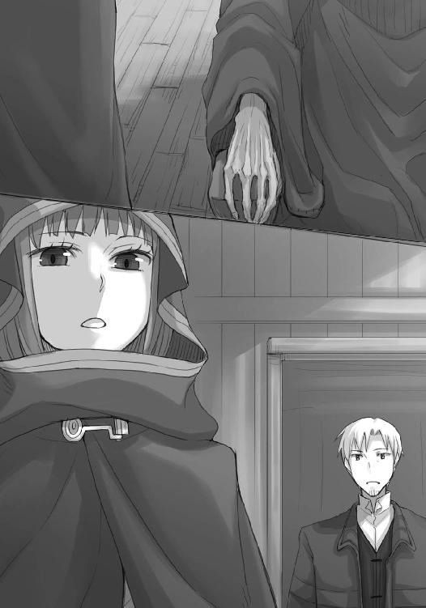
「じゃがな、ぬしよ」
「ん？」
と、本棚を再び熱心に眺めていたホロが、棚の一つを指差しながら声をかけてきた。
「ここ、見てみんす」
「どれ」
ロレンスが棚に目をやると、そこだけ一冊分の隙間があいていた。
「どこかにあるんじゃないのか？」
「たわけ。埃もきちんと見んかや。他と積もり方が違いんす」
どんなに掃除している部屋であっても、必ず土埃だけは積もる。
ロレンスがよく見ると、その隙間の前には、他よりも少ないが、確かにうっすらと埃が積もっていた。
「どれくらいかはわからぬが、だいぶ前に誰かがここから一冊抜き取っていったんじゃな」
「なにが言いたい？」
ホロは、軽く部屋を見回してから、ロレンスに胡乱な目を向けた。
「ぬしも気がついておるんじゃろう？ ここは人が入っていんす」
魔女と呼ばれた修道女の終の棲家。
村人のヴィノは誰も近寄らないと言っていた。
しかし、ホロがそれを指摘しないということは、ヴィノは噓を言っていないということだ。
だとすれば、村とは関係のない誰か。さもなくば、ヴィノが知らない村人の誰か。
それに、抜き取られた棚の場所にはなんの本が入っていたのかも気になった。
「あのたわけもここを以前から知っておったはずじゃ。ぬしよ」
と、ホロは言葉を切ってこちらをねめ上げる。
油断するなよ、という目つきだ。
「わかってる。それより、コルはなんて言って引っ張られたんだ？」
「ふん。湖を見に行くんじゃと」
「湖を？」
「なぜかと聞くでない。わっちゃあわからんからの」
不機嫌そうなのは、ロレンスのみならずコルまでもこき使われるのが腹立たしいからか。
ただ、ロレンスは予想が当たったことで、ちょっと思いつくことがあった。
「俺たちもちょっと見に行ってみないか？」
ロレンスがそう言うと、ホロは「お」という顔になる。
「ふむ。ぬしも意外に気が回るようになったではないか」
そんなことを言いながら、嬉しそうにロレンスの腕を取る。
珍しいくらいに妙な勘違いだなと笑いかけたのもつかの間、ホロは無言になってロレンスを引っ張って部屋から強引に出ていこうとする。
「お、おい」
ロレンスが止めるのも聞かず、赤々と燃える囲炉裏の火も気にかけず、ただ黙って小屋の外を目指す。
ホロが足を止めたのは、ロレンスが雪に反射した太陽の光に目がくらんでからだ。
「干からびておったあれ、どう思うかや？」
大した眩しさでもないはずなのに、照り返しで目がちかちかするのは小屋の中が薄暗かったせいだろう。
ロレンスは手で光を遮り、しばしばする瞼を細めながら、ホロを見た。
「どうって......」
「わっちゃあ、魔女などという言葉が相応しいとは思えんかった」
教会や信仰に対する知識が少ない分、ホロの印象は率直なものだろう。
しかし、ロレンスもあの修道女の机の上にあった一輪の枯れた花の印象が強くて、とても魔女という言葉に相応しいとは思えなかった。
「俺もだ。机の上に花があっただろう？」
ロレンスは言うが、ホロがなにを言いたいのかわからない。
魔女であろうがなかろうが、ホロにはあまり関係がないのでは。
そう思っていると、またしてもぐいと腕を引いたホロは、そのままの姿勢で、こう言った。
「わっちゃあああいう格好をした人の雌に何度かよくされた。心優しいとはあやつらのためにある言葉と思うくらいじゃ」
そう言えば、ホロと出会った当初、そんなことを言っていたような気がする。
ロレンスがうなずくと、ホロはゆっくりと歩き出す。
相変わらず、顔はうつむいたままだった。
「多分、あれもその類じゃったんだろう、とわっちゃあ思う」
「ああ」
相槌を打って、それで？ と問う代わりに、腕を取られたロレンスは、ホロの手を取り返す。
「それが、あれじゃ」
「あれ？」
ホロはうなずいて、言った。
「犬を連れて森に入れば、それだけでとやかく言われるんじゃ」
顔を上げたホロの表情は、思いのほか力強い。
ただ、その力強さは、泣くのをこらえているようにも見える。
「いわんや狼を連れてをや、じゃろ。ぬしも気をつけてくりゃれ」
ロレンスは、どきりとする。
ホロはそんなロレンスの腕から離れると、一人ひょいひょいと歩いていってしまう。
近くに人がいないとわかっているからか、ローブの裾から尻尾が見え隠れしている。ホロの尻尾の先は真っ白い雪の上でもそん色ないほどに綺麗な白で、妖精の光の帯のようだと言ったって言いすぎではないだろう。
そんな尻尾をゆらゆらさせながら、ぎりぎりまで雪が積もる滝つぼの側を歩くホロは、本当に妖精に見えなくもない。
「ま、わっちもなんとなくじゃが、あの干からびておった奴の気持ちがわかるんじゃがな」
手を後ろに組んで、くるりとこちらを向いたホロの顔は、いつも冗談を言う時のような不敵な笑顔。
群青色の滝つぼに、苔むした崖と真っ白な雪。
天使が天界に行く道だとしたら、なるほどそんな彼岸を思わせるのに十分な雰囲気だった。
「なんでだ？」
ロレンスが追いついて手を取ると、小さなホロの手は氷のように冷たかった。
「我慢強いと、溜め込んだ分、突飛なことをするからの」
そんな言葉は自虐めいた笑顔と共に。
今にもこちらに倒れてきそうなほどせり出した崖を見ながら、ロレンスは言った。
「素っ裸で行商人の荷馬車に潜り込んだり？」
「さもなくば、友を探しに南に下ったり」
恥ずかしそうに笑うホロの牙の間から、温かそうな白い息が漏れる。
ロレンスはそんなホロの頰に手を伸ばそうとして、やめた。
雪の山の中に入って、ホロはちょっと想像したのかもしれない。
ヨイツに着いたあと、どうするのか。
そして、思いついた選択肢の一つの可能性の成れの果てが、あの小屋の中と、周りの村の反応なのだ。軽々しくじゃれ合うという気分には、どうしてもなれない。
ロレンスとホロは手をつないで、滝つぼの周りをゆっくりと歩く。
当てもなく歩いているようではあったが、そこにはコルとフランのものだろう足跡が続いていて、ロレンスたちはそれを追いかけていた。
まるで自分たちの先例がないかと追いかけるように、というのは感傷的に過ぎたかもしれない。
しかし、そんなことを思ってホロを見れば、ホロも雪についた足跡から顔を上げてこちらを見たので、同じことを思ったのだろう。
その心配に対する一つの解答は、だいぶ前に足蹴にした。
あれが正解だったのに、と後悔することだけはないように。
ロレンスはそんなことを思いながら、ホロの手を握る力をちょっとだけ強くした。
「じゃが、ここを天使が通ったという話、本当なのかや」
湖のほうに上がる道が滝の脇にあり、フランとコルはそこを上っていったらしい。
ホロとロレンスも坂道に足をかけたのだが、ふと滝のほうを振り向いたホロがそんなことを言った。
「お前やユーグさんみたいな連中がいたら、天使と間違われることもあるかな」
「むー......鳥は実際にわっちらも出会ったしの。じゃが、それならそれでわかりそうなものじゃが」
ホロはくんくんと鼻を鳴らす。
「そんないつまでも匂いが残るものか？」
「ふむ。なんとなくじゃがな。何年経っても雰囲気くらいはわかりんす。ここはそういう感じがせん。人が来れば人にいいようにされる類の弱い森じゃな」
その昔は群れを率いて森を守っていたホロが言うと、独特の説得力がある。
ホロはロレンスの胸中に気がついたらしく、わざとらしく牙を見せて唇をつり上げていた。
「実際のところは舞い上がった雪かもしれぬ。ぬしら人は臆病じゃが、臆病こそが色々な化け物を生む」
楽しそうに言うので、経験があるのかもしれない。
「知ってる話でもあるのか？」
滝の横の斜面に、じぐざぐに作られた道は思いのほかしっかりとしている。
コルとフランが通ったあとということもあって、比較的楽に行くことができる。
「わっちが麦畑におった頃はそりゃあたくさんありんす。日が暮れた麦畑の中で事をいたそうとする若い連中もおったしの。麦の化け物だけで十種類はおったかや」
事をいたそうとした若者連中には気の毒だが、なるほど怪談の種にはそんな原因もあるのかと思う。
「じゃが、わっちらとは関係のないものを見ておることもあったの」
とは、ちょっと懐かしそうな目で。
「例えば？」
ロレンスが聞くと、ホロは呆れるように笑って、ため息を一つついた。
「今思い出したのは、小僧じゃ。山の中で転んで泣いて、山中に響いた自分の泣き声を化け物の鳴き声だと勘違いしての。それにさらに怯えて余計に泣いて。くふ」
「ああ、そういう類か。だが、まあ、そうか。そうだな」
「うん？」
右に進み、左に進み、としているうちに、急な斜面でも簡単に上れてしまうので、こういう道を考案した者は本当に頭が良い。
結構な高さに来ていたが、まだ半分くらいだ。
「種の割れている有名な奇跡譚を思い出した」
「ほう」
木の根っこのせいで段差ができていたので、先に上ったロレンスが手を出してホロを引っ張り上げる。
「北の大遠征にまつわる話だ。旅人なら即座にわかる話でな」
ロレンスは語ろうとして、ふと言葉を止めた。
「教会にまつわるものだからな、コルには内緒だぞ？」
きょとんとしたホロは、意地悪く笑ってこう言った。
「幸い、ぬしとわっちの間には他に内緒にしたいことがないからの」
ロレンスは苦笑いするほかないが、ホロがせっつくので話を進めることにした。
「大遠征に参加する高名な騎士団が、異教徒たちの軍勢に負け戦を強いられていた時だ。空が赤く染まり夜が近づいていて、もはやこれまで、と指揮官が撤退を告げようとしたその時、突然戦場一帯に影が差した。何事かと顔を上げた瞬間に、その場の全員が見たらしい。真っ白く、巨大な教会の紋章が、空一面にたなびいていた様子を」
ロレンスは空を見て、ホロも釣られて見ているらしい。
ふむ、と視線を戻すと、呟くように、こう言った。
「鳥、じゃな？」
さすがだ。
ロレンスはうなずいて、言葉を続けた。
「そのとおり。渡り鳥の群れだ。だが、騎士団は奇跡を背にして負けるわけがない、と奮起して、なんと日が落ちるまでのわずかな時間に戦況をひっくり返し、その戦いに勝ってしまった。以降、そこにできた国の旗は、その時の様子を象った、赤地に白の教会の紋章を染め抜いたものだ。こうして奇跡は作られていくのである。めでたしめでたし」
だから、天使の伝説がなんらかの現象である可能性も少なくはない。
フランがコルを連れていったのも、そのことが頭にあるからではないのか。
「ふむ。じゃが、だとしたらどうやって天使を呼び出したものか」
最後の曲がり角を曲がり、進んだ先は坂の上。
下を見ると、滝つぼが異様に小さく見えた。
「綺麗な湖ではないか」
息を切らせることもなく、ホロは明るい声でそう言った。
湖は山で縁取りされた鏡のようで、今にも雪が降り出しそうな雲の色を映し込んでいた。
下の川岸と違い、さすがに湖のほとりには小石がたくさん転がっている。黒みがかったそれらは、うっすら積もった雪と好対照を成していた。
葦の類が少ないこともあって見通しがよく、湖をぐるりと一周歩いて回れそうな感じがした。船を出しやすいだろうし、魚も獲りやすいだろう。
「こんな場所は夏に来たいの」
ホロがそんなことを言う気持ちもなんとなくわかった。
「お前、泳げるんだったっけ」
「んむ。水の中のほうが体が軽くなって心地よい」
人すら丸飲みにできる巨大な狼が、犬のように喜び勇んで湖に飛び込む様を想像して笑ってしまう。
「しかし、お前があの巨体で湖に飛び込んだら、水があふれてしまいそうだな」
実際に、滝は湖から水があふれ返るようにして流れ落ちている。
それを見ての軽口だったが、ホロは真剣な顔で考え込む。
「じゃが、かといってわっちがこの肢体で飛び込んだら、今度はそれを見たぬしからあふれ出てしまうかもしれぬ」
なにがだ、と聞けば藪蛇だ。
ロレンスは無視をする代わりに、大きく息を吸って、吐いた。
静かな湖畔の散歩など、日々をせせこましく生きる行商人にはなによりの贅沢だ。
「コルたちはずいぶん遠くまで行ったんだな」
続く足跡を見ると、霞んでいる対岸のほうまでぐるりと続いていそうな感じだ。
対岸はさらに高い山の麓になっていて、上のほうは完全に雲で覆われていた。
「ふむ」
ホロは不意に呟いて、歩いてきた滝のほうを見る。
「どうかしたか？」
「んむ。あの滝、もしかして、最近できたものではないのかや」
「え？」
ロレンスが尋ねると、ホロはきょろきょろと辺りを見回して、もう一度うなずいた。
「ぬしらにとっては最近とは言わんかもしれぬが、ほれあそこ。崖が崩れたように見えんかや」
と、ホロが指差したのは、ロレンスたちが上がってきた滝のすぐ側の山の裾。
確かに言われてみれば、崖崩れが起きた跡のようにも見える。
「あそこから崩れた岩かなにかが、滝のあった場所に積み上がる。湖などもともとこんなふうに山で囲まれた椀のような形になっておるからの」
ホロは手で器用に形作ってみせる。
山に暮らし、何百年と生きてきたホロなら、そういうこともわかるのだろう。
「じゃあ、川の水量が減ったというのも......」
「そのせいかもしれぬ。縁が欠けておる甕にはそれ以上注げぬ。水面が上がればそれだけ水が漏れる先も増えるからの」
そう言われると、滝の一番上にせり出して、滝の流れを二分していた鋭い岩は、あとからそこに突き刺さったようにも見える。
もしかして、その崖崩れの瞬間を見て、天使が飛び立ったと勘違いしたのだろうか？
ロレンスはそう思ったが、さすがにそれはなさそうだと気づく。天使の羽とごつい岩とでは、さすがに見間違いもしないだろう。
「天使が空に向かって飛ぶために、足場を作ったのかな」
ロレンスがちょっと気取ってそう言うと、隣のホロは嫌そうに体を引く。
そして、大きくため息をついて、こう言った。
「ぬしは本当に夢見がちじゃな」
夕食の準備をして待っていると、ようやく小屋に戻ってきたコルとフランは、外で転げ回って遊んできたのかと思うくらいにびしょ濡れだった。
着込んでいる上半身だけ熱く、手足は氷の棒のように冷たい。
ホロが不承不承フランの手を握り足に足を合わせているのは、冷えた体を温めるには人の体が一番効果的だからで、ロレンスはコルの手を服の内側に入れてやって、足を手で温めてやった。
「それで、なにか見つかりましたか？」
革を重ねた靴もたっぷり水を吸って鉛のように重くなっていた。
よほど雪深い場所まで行っていたのだろうが、そこまでするにはなにかしらの根拠があるのだろう。ロレンスはそう思って聞いたのだが、フランは首を横に振った。
どこか悲しげに見えるのは、疲れているせいかもしれない。
「まあ、ある程度落ち着いたら食事にしましょう」
その言葉には、コルがうなずいた。そう思って目の前のコルを見たら、こくり、こくり、と船を漕いでいる。急に暖かい所に来たせいかもしれない。
ロレンスはコルを濡れた外套の代わりに乾いた毛布で包み、腕の下に抱いてやる。ホロより一回り小さいので、すっぽりと収まってくれる。若干埃臭いが、いつもホロと一緒にいるせいか、少しホロと同じ匂いもした。
フランはやがて手足が温まったようで、ホロに短く礼を言って手足を引いた。
「よい、お連れの方ですね」
そんな言葉は、椀に鍋の中身をよそって渡す時に。
それがコルのことだと気がついた時、ロレンスは笑顔で答えておいた。
「私たちも助かっています。ただ、いささか体力が足りなかったようで」
瘦せてひ弱そうに見えるが、冬の旅路を薄着で過ごしながらも平気だし、体力的にはロレンスと同じかそれ以上かもしれない。そんなコルがへとへとになるまで歩き回っていたのだから、どちらかというとフランのほうが並外れているのだろう。
「いいえ......」
フランは言って、スープを飲む。食事時でも、一定以上雰囲気が乱れない。
寒い外を歩き回ってきて、ほっと一息つく瞬間くらいは、どんな人間でも気が緩むもの。
フランのその油断のなさは、どことなく森の動物を思わせた。
「ところで、私たちも天使の伝説について少し考えてみたのですが」
ロレンスがホロの椀に肉をたっぷりよそいながら言うと、フランの手がぴたりと止まった。
「例えば、トールヒルト共和国の旗の伝説とか、参考になりませんか」
その目が、じっとロレンスのことを見る。
予想外の、食いつきだ。
「......その手のお話に造詣が？」
「多少は」
しかし、食いついたかに見えた興味の炎は、すっと瞼の奥に消えてしまう。フランはそれ以上は続けず、落ち着きを取り戻す儀式であるかのように、椀の中身をすすった。具は木のスプーンでつぶしてから食べて、最後のかけらはすくってゆっくりと口に運ぶ。
全てが作業のように滑らかで、実際のところ食べる速度は速かった。
身分が高ければ高いほど食事には時間をかけるもので、身分が低ければその逆になる。放浪学生という、盗人や物乞いと大して変わらない身分のコルを見ればそのことはよくわかる。
ユーグの話では、フランは自分のことを奴隷だったのだと言ったことがあるらしい。
そういうことが、ありうるかもしれない、とロレンスは思った。
「私も、風に舞った雪かなにかではないか、と思っています」
村人のヴィノが言っていた言葉。
つまらない常識で考えれば、やはりそのあたりが妥当なところだろう。
「意外に本物かもしれませんが」
ロレンスのあからさまな冗談に、フランは思いのほか素直に笑ってくれた。
「ええ、もちろん、それに越したことはありません。ただ......」
「多くの伝説を実際に確かめてこられた、とお聞きしています」
そう言葉をつなげると、フランは笑顔を消した。目が閉じられ、ゆっくりと息を吸う様はまるで怒りを我慢しているかのようにも見えたが、ロレンスは逆だと感じていた。
それは、笑うのを我慢していたはずだ。
フランは息を吸い終わると、今度は一気に吐き出した。
表情は、予想どおり、柔らかかった。
「そのとおりです。多くはまがい物であり、数少ない残りは人の見間違いや思い込みでした。それでも、さらに残るわずかな例外があるのもまた事実です。どう考えても、尋常ならざるなにかがそこにいたような」
「今回は、どちらでしょう」
ロレンスが尋ねると、フランは首を横に振る。
それは答えを言っているようでもあり、わからない、と言っているようでもあり。
ただ、フランは視線をあらぬ方向に向けると、唐突にこんなことを言った。
「そもそも、天使の伝説は親しい知人が教えてくれたのです」
ロレンスが驚いたのは、フランがそんなことを喋ってくれるとはまったく予想もしていなかったから。
フラン自身、それを理解しているのかもしれない。
ちらりとこちらを見て、少し恥ずかしげに、唇の端だけではにかんだ。
「どこで見たのか記憶は定かではないが、と前置きをしていましたけどね。ここに残る伝説とほとんど同じことを言っていました」
過去を見る目はいつだって物悲しげだ。
囲炉裏の火に照らされれば、それはなおさらのことになる。
「何事も大袈裟に言う人ですが、噓は言いませんでした。それで、何年か探していたのですが」
「ついに、見つけたと」
フランはうなずき、少し足を崩した。
それが心の構えを少し解いてくれたことのように見え、ロレンスは酒を勧めてみる。
昔話をするのに、酒がないのは片手落ち。
フランは、大してためらうこともなく、受け取ってくれた。
「私は、ここの伝説が荒唐無稽なものだとはとても思えません。確かに存在し、見ることができるものだと思っています。あちらの」
と、視線を粗皮の仕切りの向こうに向け、フランは言う。
「修道女の方も、そんな確信があったからこそ、ここにやってきたのでしょう」
信仰心が行きすぎて町の人間や村の人間から魔女と呼ばれたような修道女。
確かに、それほど熱心な正教徒が、たとえ常軌を逸していたとはいえ胡散臭い伝説におびき寄せられるとは思えない。言い伝えや伝説の類は本当に星の数ほどある。
人の記憶に残り、その心を捉えるのは、その中でもなにかしらの魅力や理由を持つ、特別なものだけだ。
「知人も、確かに見たのだと思います。奇跡と呼べるような、なにかを......」
伏目がちで、囲炉裏の火が陰を作っているから、というわけではなさそうな、悲しげな微笑だった。
「ただ、笑ってしまいます。そんなものを見ておきながら、場所を覚えていないなんて」
呆れるような、笑顔。
男だったらきっと、誰しもそんな笑顔にかすかな嫉妬を覚えるはず。
フランは、話の相手を好いているのだろう。
そう思えば、知人、という表現には照れ隠しのような響きがあった。
ただ、そうなるとフランが天使の伝説を追いかける理由というのが、単なる銀細工師としての情熱から、というわけではないようにも思えてくる。その胸に、もっとなにか別の理由を抱えているからこそ、わざわざこんな所にまでやってきたのではなかろうか。
なにより、フランの微笑には陰がある。
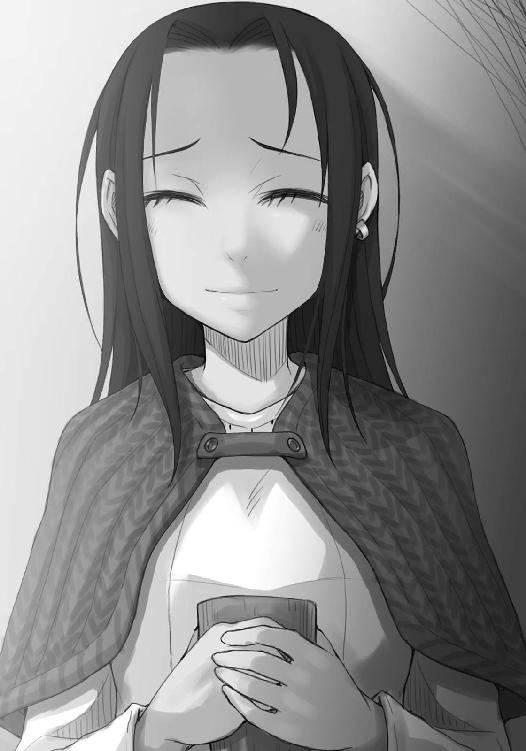
「いけませんね」
フランは言って、酒の注がれた椀を置いた。
ほとんど口はつけていないが、もしかしたら酒には弱いのかもしれない。さもなくば、酒を口実にして、胸のうちのことを喋ってしまいたいという誘惑にも。
沈黙が下りる。
ロレンスは、どうしても聞かずにはいられなかった。
「どうして、そんな話を？」
返事は早かった。
「お詫びです」
「詫び？」
「ええ」
ロレンスが聞き返すと、ふん、と鼻を鳴らす音がした。
見れば、ホロが胡乱な目でフランを見つめている。
「商会でのことです」
なにか詫びられるようなことがあっただろうか。
ぐうの音も出ないくらいにばっさり断られたことだろうか？
それにしては、詫びというのも変な気がした。
なのでロレンスは阿呆のように戸惑っていたのだが、フランは床に置いた酒に映る自分の顔を覗き込むように、視線を落としながら言った。
「断り方がもっと他にありました。私利私欲にぎらついた商人だと思っていたんです」
「いえ、それは......」
「北の地の地図をてっきりお金儲けに使うのだと」
フランは顔を上げ、申し訳なさそうに笑う。
確かにロレンスはホロのために北の地の地図を描いてもらおうとしているし、その話を昨晩した。
しかし、それでなぜ詫びられるのか。
そもそも、フランは断ったことを詫びるのではなく、断り方を詫びると言った。
それも妙な話だ。
ロレンスが相変わらず困惑していると、口を挟んできたのはホロだった。
「どういう風の吹き回しなんじゃ？」
語気は若干まだ荒いが、どこか楽しそうな雰囲気がある。
そう思ってホロの顔を見れば、幾分機嫌が直ったように、わずかな微笑を浮かべていた。
フランはその言葉にわざとらしく身を引いて、口をつぐんだままホロを見る。
しばしあいた間は、二人の娘が視線だけで会話をしているようにも見えた。
「ここにきて、わっちらに協力を仰ぎたくなった。という訳かや」
フランは、ゆっくりとうなずく。
なんの話をしているのかまったくわからないが、協力、という聞きなれた言葉にようやく流れが見えそうになる。
ただ、ロレンスが口を挟むより早く、ホロがこう言った。
「ま、いいじゃろ」
そんなあまりの安請け合いに、ユーグの商会でした自分の失敗を思い出してしまう。ロレンスは思わず口を開こうとして、ホロに背中を叩かれる。
「こっちもものを頼む身じゃからな、いつまでも意固地になっておる場合ではありんせん」
呆れるような笑顔は、妙な機嫌の良さだ。
フランも囲炉裏の向こうで微笑んでいる。
訳がわからないが、ここは合わせておいたほうがよさそうだ。
ロレンスがうなずくと、「では」とフランが呟いて、その黒い瞳に理知的な光が宿っていった。
「タウシッグの村に着いて、なにかおかしいと思いませんでしたか？」
「......商人として？」
「ええ」
ロレンスはうなずき、答える。
「手回しの石臼が......ありましたよね。ここに、こんな立派な高低差を持つ滝があるというのに」
フランがじっと見つめてくる。
正解、ということだ。
ロレンスは言葉を続けた。
「春になれば雪解けの水で水量が豊富になるでしょうし、町からそれほど遠く離れているわけでもない。ならば、ここの領主がここに水車を設置しないのは、村人たちに対する慈悲か、さもなくば......」
「村人たちが抵抗しているか、ですね。そして、理由は後者のはずです」
フランは話しながら荷物に手を伸ばし、一冊の古びた本を取り出した。
ただ、それは本というよりも書簡や羊皮紙をまとめたもので、紙の端々が不揃いになっている。年月によって風化されているのが一目でわかった。
めくると、古びた紙独特の頼りない音がする。
「この村は、元々天使の伝説を使って、水車の設置を拒んでいたようです」
そして、唐突に言った。
「それは......」
「水車を設置するとなれば、村人が労働力として駆り出され、彼らは自分たちの首を絞めるための道具を作らされる。折しも、北の大遠征が全盛の頃だったらしいので、教会の威を借りたい領主としては、水車から上がる利益よりも、天使の伝説を喧伝することで教会に媚を売る利益のほうを取ったようです」
領主に自力で領地を守り抜いたりするだけの資金力や兵力のないところではままある話だ。
フランの話は、続く。
「それが、時代の流れで異教徒の力が強まってきていました。北の大遠征が中止になったのは、ご存じですか？」
ロレンスはうなずき、「つまり」と、言葉を引き継ぐ。
「教会の力が弱まってきた昨今は、今度は領地に教会の匂いがあるとまずくなってきた、と」
「はい。その昔は北の大遠征にも物資を供給し、見返りを受けていたようですが......恥も外聞もなく、この場合は神をも恐れずというのでしょうか、掌を返したそうです。ご想像のとおり、異教徒の領主がごろごろいるこの近辺で、力が衰退する一方の教会に媚を売るのは危険な行為でしょうから。これまでうまくいっていた反動ですね」
長いものには巻かれろ。
生き延びるためには決して間違った発想ではない。
ただ、時としてそんな行為が節操なく、卑怯に見えるだけだ。
「そして、苦慮した挙句、領主は思いついた。ある日天使の伝説を追いかけてここにやってきた敬虔なる修道女を、魔女と呼ぶことを」
息を飲んだのは、ロレンスだけ。
ホロは表情をピクリとも動かさない。
人の身勝手さは、骨身にしみて理解しているというように。
「魔女がやってきて迷惑していると言い張れば、教会に盾突くことなく、同時に、異教徒たちにも面目が立つ。村人たちも渡りに船だったはずですよ。水車は絶対に設置したくないので、森に魔女がいるなんていう話は、森に立ち入らない理由として絶好のものです。もしも水車を作ることになり、なおかつ税を納めることになれば、彼らの生活はたちまち苦しくなるはずですから」
塩一つをあれほど貴重なものとして扱う様子からもそれはわかる。
しかし、わからないことが当然ある。
「......フランさんは、そんなお話を、一体どこで？」
ロレンスが尋ねると、フランはなんのこともないように、手にしていた本を軽く掲げた。
開かれた頁には、男性的な筆致でびっしりと字が書き込まれているのが見える。
「そこで眠る修道女、カテリーナ・ルッチの残した日記です。こちらに、全てが書かれています」
一冊だけ抜き取られていた書物。
それが、この日記、ということなのだろう。
「罪悪感に苦しんだ村人の誰かが、真実を世に知らしめようと持ち出したのでしょうね。私の下にやってきたのは、本当に偶然でした。この手の書物を専門に扱う知り合いが、たまたま教えてくれたんです」
ぱらぱらと頁をめくり、目を落とす。文字を読んでいるわけではなく、魔女と呼ばれた修道女の胸中を、推し量っているのだろう。
「しかし、それが本当だとして......そんなお話を我々にした理由というのは？ いえ、そもそも......」
と、ロレンスは言葉を切る。
そこまで村と領主の事情に詳しいのならば、ロレンスたちを連れてきた理由が天使の伝説の話を集めたかったから、などという単純なものであるわけがない。
ロレンスは、上目遣いにフランを見る。
この女は、最初からロレンスたちを嵌めるつもりだったのだ。
フランの目がほんの少しだけ、楽しそうな形につり上がったような気がした。
「教会が、遠からず金の鐘に踊らされてやってきます」
胸中で、ため息に似たなにかを呟いた。
大きな力は、池の中の大きな魚と同じ。
動けば水が揺らぎ、土が舞い上がる。
そして、世の中は一つの大きな池なのだ。
「デバウ商会、ですか」
フランは少し驚いたように目を見開き、うなずくや言葉を続けた。
「ご存じでしたか......。ご承知のとおり、教会がやってくるとなれば今度は領地に魔女がいるとまずいですからね。だとすると、ここは非常に危険な場所です」
確かにそのとおりだ。
こんな煮詰まった場所に天使の伝説を追いかけに来るとなれば、たとえフランが偏屈で気難しい性格でなかったとしても、一人で対応するのは難しいだろう。
フランは、ロレンスを見て、こう言った。
「村人も領主も、戦々恐々としているはずです。再び北を攻めようとしている教会が、露払いとして魔女の噂を確かめに来るのではないか、と」
「つまり我々は、その恐怖を解消してやるために動けばいい、ということですか」
言い方が面白かったのか、フランは静かに微笑んだ。
しかし、そんな笑顔のまま、出てきた言葉は不釣合いなものだった。
「湖畔をぐるりと回って帰ってくる途中、こちらを監視する者がいました」
フランが歩み寄りを示してきた理由が、これ。
あまりにもわかりやすすぎる理由に、ロレンスとしてはため息をつきたいところだ。
しかし、それをぐっと飲み込んだのは、楽をしてなにかを手に入れられるということなどそうそうあるわけではないという、当たり前のことから。
「もちろん、この先ずっと側にいろ、ということではありません。雪がなくなる季節までで結構です。私が想像するに、天使の伝説は寒い時期だけに起こることでしょうから」
「それで、北の地の地図を描いていただけると」
フランはうなずいた。
「協力していただけますか？」
今すぐ荷物をまとめて逃げ出さないのであれば、選択の余地はない。
しかし、フランは自分から種を明かし、頼み込むという形になっている。
上手な話の運び方。
まるで、軍師のようですらあった。
北の地の地図は手に入れたいし、なによりユーグとのことがある。事情がわかった今、フランをここに一人置き去りにすることはできない。
雪解けの季節までとなると時間的に苦しいものがあるが、ある程度状況が落ち着けばまた交渉も可能だろう。ホロも動かないし、答えは決まっているというわけだ。
「もちろん」
ロレンスは、短くそう答えたのだった。
翌日、フランは再びコルと連れ立って湖に向かった。
監視がいるのであれば、小屋から出て外をうろつくのは危険ではないかというロレンスの疑問に、フランは「小屋にいるのも同じです」と当然のことのように言った。
むしろ、魔女のことを確かめに来たのではなく、天使の伝説を追いかけに来たと主張するのであればそちらのほうがよいはずだ、と言っていた。
理屈としてはそうだが、やはり危険があるのではないか、と言いかけたロレンスを制したのは、意外なことにホロだった。
しかも、一人で行こうとするフランに、コルまであてがっていた。
コルはもちろんフランを一人で行かせるわけには行かないと思っていたようで快諾していたが、ロレンスとしてはやはり意外だった。
言動の一々にいらいらしていたのが一転してこの有様だ。
昨晩の会話はそれほどのものだったのか。
しかし、昨晩の会話で明かされたのは、どちらかといえばフランが最初から腹に一物あってロレンスたちを連れてきたという事実であり、それで印象が悪くなりこそすれ、良くなる理由にはならないような気がした。
フランとコルを見送って小屋に戻るや、ホロはおもむろに尻尾を取り出して毛繕いを始めている。
ロレンスはそんな様子を眺めながら、少し探りの言葉を入れてみた。
「昨晩、ずっと伝説のことばかり考えてたんだろうな」
全体を手で梳いてから、目につく不埒な輩を次々囲炉裏の火の中に放り込んでいたホロは、耳だけを申し訳程度にこちらに向ける。
「むう？」
「コルに説明してただろ。伝説の片鱗を見落とすなって」
「......ああ。んむ」
フランはやはり天使の伝説をなにかの自然現象だと推測しているようで、例えば、木々に積もった雪が風で飛ばされたといったものから、どこかに湯脈があり、その湯がなにかの具合で湖の中に流れ込み、湯気が天使の羽のように見えた、といったものまでを列挙していた。
確かに、天使が羽を広げているような現象が起こるには、高い場所からなにかが落ちるか、さもなくば舞い上がらなければならない。
なにかが落ちるのであれば、滝は高低差を持つからその候補になる。舞い上がる場合は、湯気か、あるいは霧や雪が風で飛ばされるのを想像するのが無難だろう。
お供を命じられたコルは、その可能性一つひとつを律儀に聞いていて、片鱗も見落とすまい、とばかりにうなずいてフランについていったのだ。
「確かに、あんなに真剣に伝説を追いかけていたら、村人や領主がけちをつけてきた時に相手などしていられないだろうな」
いつもならば、わっちに雑用をやらせるなどいい度胸じゃ、などと言いそうだが、そんな雰囲気はかけらもない。
それどころか、楽しそうにこう言った。
「ま、頑固で偏屈な銀細工師が聞いて呆れるがの」
「......そうか？」
事前に聞いていたことから想像するのとはまったく違った印象ではあるが、目的に向かう姿勢には職人の鑑のような真剣さがある。なにより、一晩中おそらくはそのことだけを考えていて、朝になれば身の危険も顧みず外に出ていったのだ。
ロレンスがそう思って聞き返すと、毛の付け根をむぐむぐと嚙んでいたホロは、ふわふわの尻尾から口を離してにやにや笑っている。
「単に惚れた相手のあとを追っかけておるだけじゃろ。それならば、別に頑固でも偏屈でもあるまい？」
昨晩フランが語った、自身に天使の伝説のことを教えた相手のことだろう。恋仲か、あるいはフランが一方的に好いているのかはわからないが、ホロもロレンスと同じようなことを思ったらしい。
そして、ホロのように平たく言葉にしてしまうと、確かに頑固で偏屈な銀細工師という言葉を冠するのは間違っている気がする。
世の中は、フランのような年頃の娘がそういう状況になるのを、一途だ、と表現するだろう。
「なかなか可愛げがあるではないか」
「まあ、な」
昨晩のフランの口ぶりはとても噓とは思えなかった。
そう思うと、戦に出かけた恋人のことを思って、自らは巡礼して恋人の無事を祈る乙女にも見えてくる。
しかし、ロレンスには相変わらずわからない。
その告白がどうして商会でロレンスをあしらったことに対する詫びになり、それどころかロレンスたちを最初から罠に嵌めるような形で利用しようとしていたのに、ホロの機嫌を損ねることにならなかったのか。
囲炉裏の火をいじるふりをしながら、あれこれ頭を巡らせていた。
ホロの言葉が向けられたのは、そんな頃合だった。
「しかも、そんな話を詫びに使うとはの。なかなかに洒落ておるとは思わぬかや？」
大きく火の粉が舞ったのは、ほとんど偶然だ。
ただ、それは傍から見たら慌てたように見えただろうし、実際にそうだった。
ロレンスが囲炉裏から視線をホロに向けると、ホロはにこにこ笑っている。
笑ってはいるが、笑みは不自然に顔に張り付いたままだった。
「もちろん、どう洒落ておるのか、わかっておるよな？」
隠せていた、と思うほうがおこがましかったらしい。
ホロの尻尾の毛先が、手の中でゆらゆら揺れている。
白状するなら、早いほうがいい。
「......すまん。わからない」
「たわけ！」
囲炉裏の灰が全て舞い上がりそうな剣幕だった。
不自然に張り付いていた笑みは一瞬で吹き飛んで、憤怒の形相がそこにはある。
「な、なにもそこまで......」
「たわけ！ ならばわっちがなぜあの小娘にいらいらしておったかもわからんかったというのかや！」
もしも狼の姿でこれほど力の限りに怒鳴ったら、きっと小屋ごと内側から崩壊していたに違いない。そんな場違いなことを考えてしまうくらいにホロは怒鳴り、尻尾がこれ以上ないほどに膨らんでいた。
「......ああ」
何事も行きすぎるとひっくり返る。
あまりのことにわなわな唇を震わせていたホロは、やがてがっくりとうなだれた。
怒りのあまりに血管が切れてしまったのかと思った。
慌てて声をかけようとすると、前髪の向こうから、胡乱な目が向けられて口を閉じる。
「まあ......確かにぬしはそういう奴じゃったな......」
ホロは疲れたようにため息をつき、一度瞼を閉じると目からはすっかり毒気が抜けていた。
あまりにも抜けすぎていて、こちらを再度見た時には、哀れんでいるようにすら見えた。
「かりかりしておったのはわっちだけ。やりすぎたと気に病んでおったのはあの小娘だけ。ぬしは心が広いのではなく、死人のように鈍感だったというわけじゃな」
さすがにそこまで言われると、なんのことかはわからなくともむっとはする。
ただ、ロレンスが言い返す前に、ホロが言葉を向けてきた。
「ぬしは面目丸つぶれだったわけじゃろうが」
商会でのことを思い出す。
それでもまだわからず、コルだってしないような、救いを請う目をホロに向ける。
賢狼ホロは、牙を剝いて思いきり嫌そうな顔をしてから、そっぽを向いてこう言った。
「他ならぬ、わっちの前で」
「......あ」
その瞬間、なにもかもが頭の中でつながった。
「それでなんで周りだけがあたふたしておるんじゃ。あほらしい......」
ホロのあまりの脱力ぶりは、今にもごろりと横になりそうな雰囲気だ。
それに対し、逆に腰を浮かしかけていたのはロレンスのほう。
しかし、ホロの視線で、お座りを命じられた犬のようにその場に縫い付けられる。
「今更口に出したら怒りんす」
ぴしりと釘を刺され、開きかけた口を閉じる。
それでも、ロレンスは胸の中で言葉が駆け巡って、両手が勝手にばたばた動いてしまう。
ユーグの商会でフランにやり込められたことを、ホロは確かに怒っていた。
しかし、本当に怒っていたのは、失敗そのものではなく、ロレンスが他ならぬ自分の前で恥をかかされたことについて怒っていたのだ。
そう考えれば、フランの出した曖昧な条件に果敢に飛びついた理由も見えてくる。あれはフランの賢さに当てられて面白がって受けたのではなく、喧嘩を買うつもりで受けたのだろう。
だからこそ、タウシッグの村でそつなくこなし、ヴィノから話を聞き出してこの小屋まで案内された時、フランから一言もないことについて文句を言ったのだろうし、ホロはフランに対してのみならず、ぼんやりしているロレンスにもかりかりしていたのだ。
馬鹿にされたままで悔しくないのか、と。他ならぬ自分の前で恥をかかされたのに悔しくないのか、と。
そして、昨晩のやり取りだ。
ロレンスはフランの言葉を一字一句思い出し、それに対するホロの反応を頭の中で再現する。
直後、うつむいて頭痛を耐えるように額に手を当てたのは、自分の間抜けさ加減に呆れてしまったから。
フランは惚れた相手のために天使の伝説を追いかけているらしい。
だからこそ、惚れた相手のために北の地の地図を追いかけているらしいロレンスに、そのことを告白することで詫びたのだ。
なるほど、ホロの機嫌が良くなるわけだ。
同時に、目の前のホロの様子も、十分納得できた。
「......すまん」
当のロレンスだけが、能天気に気がついていなかった。
ホロの怒りが引っ繰り返って呆れに代わるのも、無理はないようなことだった。
「......ぬしは本当に次から次へとたわけたことをしてくれるの」
言い返すこともできないが、ホロはそれ以上怒ることもしなかった。
馬鹿馬鹿しくて怒る気も失せた、というのが本当のところだろう。
なにせ、ため息をついておもむろに自分の尻尾を見て、ホロがこんなことを言ったくらいだ。
「へたに毛繕いするよりも、よほど効果がありんす」
怒りのせいでぱんぱんに膨らんだあとなので、いつも以上に尻尾がふわふわしていた。
笑ったら今度こそ間違いなく喉笛を嚙みちぎられそうだったので、おとなしく聞いていた。
「じゃがまあ、世の中往々にしてそんなところなんじゃろうな」
と、ホロは不意に背中を丸めてそんなことを言った。
まだ同じ話題を繰り返すのか、と思うほどロレンスも間抜けではないが、話が見えないことに関しては、相変わらず間抜けのままだった。
「......話が、見えないが」
ロレンスが聞くと、ホロはこちらを見て、自嘲気味に笑った。
「なに、神だなんだと崇める連中が、同じことをしておった、ということじゃ」
「え？」
間があいたのは、まったく予想もしていなかった方向への話だったから。
「昔、よくあったんじゃ。わっちゃあ別になにも気にしておらぬのに、村長連中が祭りの手順を間違えた若造を、わっちに無礼を働いたと言っては殴ったり、の。本人なんかそっちのけで。わっちゃあそれを呆れて眺めておったんじゃが......よもやわっち自身がそんなことをしておったとはの......」
どちらも相手を大事だと思っているからこその振る舞いだ、というのはわかる。
ただ、それでロレンスはなんと言えばいいのだろうか。
謝るのか、それとも、礼を言うのか。
どちらにせよ、間抜けだ。
ロレンスが黙っていると、ホロは乾いた笑い声を上げて、立ち上がった。
「ま、それを相手のことを慮って善意でやっているうちはまだましじゃな。本人が、そんなことはしなくてもよい、といえばすむわけじゃから」
そう言う顔は、意地悪そうな笑顔であり、ロレンスを責めるようでもあり。
ホロに間抜けな役回りをさせてしまった代償としては、そんな笑顔を向けられることくらい、安いものだろう。
「問題は」
そして、ホロは粗皮の向こうを顎でしゃくってこう言った。
「それを物言わぬ死人でやった場合じゃな」
死者の冒瀆が許せないのは、しいたげられる無辜の民の話を聞いた時に義憤に駆られることと似ているのかもしれない。
ホロは狼の骨を追いかけている時に言った。
いくら自分たちが強くとも、死んでまで相手に嚙みつくことはできない。
しかも、修道女カテリーナは、生きているうちに魔女と呼ばれることを甘んじて受け入れたらしいのだ。
それはカテリーナが常軌を逸していたからなのだろうか。
ロレンスは違うと思うし、ホロもそう思っているはずだ。
心優しかったのだろうと思う。
甘んじて、受け入れたのだ。
「じゃからな、あの小娘の言いなりになる理由がわっちにもありんす、というわけじゃ」
村人たちにその存在を忘れられ、死人と同じ物言えぬ存在となったホロは、結局パスロエの村での不名誉を挽回することはできなかった。
後ろ足で砂をかけ、逃げ出すように飛び出してきた。
カテリーナには、まだその汚名をそそぐ機会がある。
ただ、そこまで考えて、ロレンスは一つの論理の円環に気がついた。
ホロを見ると、賢狼はとっくのとうに気がついていたらしい。
「ま、死者を相手にああだこうだ言っておるうちは、わっちも村の連中も同じこと。干からびておるあれも、本当のところは呼び名などどうでもいいと思っておるかもしれんしの。じゃから、わっちが手を貸そうと思ったのは、誰かがこの小屋を綺麗にしておるのと似たようなものじゃろう」
「だが、生きていく者たちには、必要なことだろうさ」
そもそも、生きている相手だってその本心を直接覗き見ることはできないし、本当に相手のためだけにしてやれることなんて、絶対にない。
突き詰めればそれは必ず自分のため、という結論に落ち着くことになる。
ならば、あとは心穏やかに暮らしていくための程度の問題となる。
「生きていくうえで常にまっすぐ進むのは、確かに難しいかもしれぬからな。村人やら領主やらにも同情はしんす。それに」
と、ホロは言って尻尾をローブの下にしまい、フードを被って耳を隠す。
「惚れた相手のために一途に進む小娘を、ぬしも応援したくなるじゃろう？」
その言葉こそ意地悪な笑みつきだったが、概ね間違いではない。
それに、死者を手厚く葬るのが自分の死後もそうしてもらいたいと望むことの表れであるとするのなら、フランに協力することは笑ってしまうような動機に支えられている。
囲炉裏の火を挟んで、ホロとロレンスは笑い合う。
囲炉裏に火をくべすぎたと言ったら、ホロは大笑いしてくれたかもしれなかった。
昼すぎになって、フランとコルが帰ってきた。
食事のために戻ってきたのかと思ったが、そうではなかったらしい。
フランは小屋に入ってくるや、ロレンスに詰め寄ってこう言った。
「村に行って地図を描いてもらってきてくれませんか」
「......地図を？」
「はい」
この寒さの中、額に汗が浮いているのがわかるのだから、どれほど慌てているかが察せられる。コルに至っては、小屋に戻ってくるや物も言わず腰を下ろし、皮袋から水をごくごくと飲んでいた。
ホロが腕白な子供の世話をするように雪を払っても、礼を言う余裕すらないらしい。
こんな二人の様子を見て思い浮かぶことは、それほど多くない。
「天使の伝説の手がかりが？」
ロレンスは、尋ねた瞬間に驚いてしまっていた。
しかし、それはコルの世話をしていたホロも同じだっただろうと思う。
なにせ、フランはその言葉を聞くや、本当に嬉しそうに笑ったのだ。
我慢できないといった感じで、見栄もなにもなく、「はい」と笑っていた。
頑固で偏屈な銀細工師。不穏な噂の絶えない銀細工師。それが、一皮剝けばこんな無邪気な笑みを見せるのだから、きっとこちらのほうこそ真実の姿なのだろう。
女の一人旅、しかもその腕が大金を生むような銀細工師ともなれば、気苦労は多いはず。エーブのような商人ですら、女であることを隠すために顔に頭巾を巻いて商いを行っていた。フランが身を守ろうとするには、気難しく偏屈だという鎧を着るほかなかったのだろう。
コルが一息ついたようなので、ホロが水の入った皮袋をフランのほうに持っていく。
つい先日までなら想像もできなかったが、フランは笑顔で礼を言い、ホロもまた微笑んでいた。
フランは水を飲み、深呼吸をしてからもう一度飲む。
夢中で駆けていたのだろう。
天使の伝説を追いかけて。
「地図というのは、どういうものを？」
ロレンスが言葉を向けると、ようやく人心地ついたらしいフランは、「え」とちょっと驚いた。
それからきょとんとした様子でロレンスを見て、ようやく気がついたらしい。
こういう地図を描いてもらってきてくれ、と言ったつもりになっていたのだろう。
「すみません。地図は......湖から流れ出る川を記したものを」
「川を？」
聞き返したのは、突飛な地図だと思ったからだ。
「はい。湖の周りを歩き回って、思ったのです。雪が降り急激に寒くなれば、細々と流れ出る川は全てが凍りつきます。そうなれば、流れ込む水は行き場を失います。そちらにある滝もあの程度の水量なのですから、大雪に寒さが重なれば容易に凍りつき、流れが止まるはずです。それで、なにかの拍子に、いえ、どんな堤防も決壊しないことはあり得ません。ですから、大小を問わず湖から流れ出る川全ての描かれた地図を」
寡黙にして、発言には二歩先三歩先まで考えている雰囲気のあったフランが、勢い込んで喋っている。顔つきこそ真剣だが、気がはやっているのは取り留めのない言葉の内容や、身振り手振りまでまじっていることからよくわかる。
ロレンスは、「なるほど」と言って、いったんフランの言葉を区切った。
「氷と雪で溜まりに溜まった水が、ある量を境に一気にあふれ出す。その様が、すなわち」
「天使の羽に見えるのではないかと思います」
フランは言って、じっとロレンスのことを見る。
確信を抱いているのに、あまりにも嬉しすぎて信じられないような、そんな目だった。
それに、フランの語った様子をちょっと想像してみればいい。
氷と雪でせき止められ、あふれんばかりになった湖の綺麗な水が、月明かりに照らされたある夜についに決壊してあふれ出す。美しい光景だろう、と思うし、その勢いはまさしく天使が天界に飛び立つに相応しいものなのではないだろうか、とも思う。
たとえ種が割れていても、それでもなお、奇跡と呼べるような光景だろうと想像できる。
ロレンスは、いつもならばこんな無責任なことは言わないんだが、と自分に言い訳をしてから、フランに向けてこう言った。
「おそらくそれが正解だと思います」
フランの顔が、泣き笑いのような形になる。
「見られるといいですね」
どんな人であっても、目的にひたむきに向かう者たちには共通するものがあるらしい。
それが、この笑顔。
ロレンスはそんなことを思う。
「はい」
フランは短くはっきりと、返事をしたのだった。
フランとコルは再び湖畔へと向かっていった。地図が来るまでのわずかな時間も惜しいといった感じだった。
コルもフランの熱気に当てられたのか、これまで見せたこともないような真剣な面持ちでフランのあとに荷物を背負ってついていく。
二人の背中を見送って、ホロがちょっと寂しげに笑っていたくらいだ。
可愛い弟を取られたような気になっているのかもしれない。
「さて、俺たちも行くか」
ロレンスは言って、馬の鐙に足をかける。
フランとコルの二人をずっと眺めていたホロは、その言葉でようやく駆け寄ってきて、ロレンスの腕に摑まった。
ホロと息を合わせて、その体を馬の背に持ち上げる。
ロレンスもすぐにその前に乗り、手綱を握って馬を歩かせた。
「子供みたいだったな」
フランの様子を思い出して笑ってしまう。
ケルーベに戻ってユーグにこの話をしても、きっと信じてはもらえないだろう。
「嬉しいことの前ですまし顔でいるのが大人じゃ、と思っておるうちはまだまだ子供でありんす」
ホロがロレンスの腰に両腕を回し、背中に頰をつけたまま喋るせいで、顎と耳の動きがさわさわと背中をくすぐってくる。
前に乗せればよかったかなと思いつつ、ロレンスは答える。
「確かに、歳を取ると子供に戻るというしな」
「んむ。じゃからいかにわっちが歳を重ねておるかということじゃな」
そんな軽口を自分で言うのだからいい気なものだ。
ロレンスが笑うと、ホロもくつくつと笑ってくる。
しかし、その笑いの波が去った頃、ホロはぽつりと言った。
「本当に大事なことなんじゃろうな」
囲炉裏の側で、照れ隠しのように知人と呼んだ相手のことを話すフラン。
その相手と共にここに来なかったのには、きっと理由があるはずだ。
もちろん、相手がどこかの町の職人で、その町から動けないから、ということもあるかもしれない。
それでも、こんなご時世で想像できるのは、暗い理由ばかりだった。
口ぶりでは共に旅をしている期間があったようにも聞こえたから、途中で別れることになったのだろう。
その理由は怪我か、病か、さもなくば。
ホロはロレンスの背中に当てていた頰を入れ替える。
背後にいる自分のことを忘れるなよ、と言いたげだった。
「それに、あんな笑顔を見せられてはの、さぞ分厚い仮面を被ってきた旅路じゃろうとわかりんす。連れてきたのがわっちらでなかったらどうするつもりだったのかや。あのたわけは」
ホロの言葉にロレンスは軽くため息をつく。
「そうだな」
という返事は、そんなため息に乗せてのもの。
「まっすぐに、ひたすらに天使の伝説を追いかけて、その覚悟の前に怯んだ相手が尻をまくって逃げ出して、一人残された挙句......。なんていう話も十分あり得ただろうな」
危険を恐れていては手に入らない。
しかし、危険を冒し続けていればいつかはひどい目に遭うのだ。
それならば、自分たちが幸運の使者として振る舞えるのなら、振る舞いきるのも悪くはない。
ホロがこう言うのも、十分に笑って理解できた。
「ま、ヨイツの賢狼ホロを使い走りにするくらいじゃ。そんな度胸のある者は、運すらも呼び寄せるじゃろうよ」
確かにそのとおりだ。
しかし、とロレンスは思う。
そんなホロと共に旅をしている自分は、どんな幸運を引き寄せただろうかと。
そう思っていると、背中に頰をくっつけていたホロには全てお見通しだったらしい。
不気味に喉だけで笑っている。
ロレンスが抵抗できない背中側に乗ったのは、ホロの戦略だったのかもしれない。
「俺はお前のような素晴らしい相手と旅をすることができる幸運に恵まれた。これでいいか？」
ホロは声を上げて笑い、「で、それを誰に感謝するんじゃ？」とのたまった。
ここまで付き合ったのなら、最後まで付き合うべきだ。
ロレンスは手綱を握りながら、言った。
「ヨイツの賢狼ホロ」
「んむ。ま、せいぜい感謝することじゃな」
尻尾がぱさぱさと音を立てている。
金儲けで温まるのは懐だが、背中が温まることはついぞなかった。
たまにはこんなこともいいかもしれない。
ロレンスは静かに、背中にホロの温かさを感じながら、馬を駆ったのだった。
村にたどり着くと、変わらずの日常があった。
農作業に出る者がいて、家畜を連れる者がいて、服を繕っている者や、補修のためだろう鍋を打っている者もいる。
ホロが少し懐かしそうに目を細めているのもわかる。
どこに行っても見ることができて、この先もずっと見られるだろうというような風景だ。
「話を聞くだけでは無節操さに腹が立つがの、これを守ろうと思う気持ちもわかりんす」
ぽつりと言った言葉は意味深だ。
「ああ。それに、フランさんの言葉を信じるなら、村人の中にも修道女カテリーナを魔女と呼びたくなかった人たちがいるらしいんだ。小屋が綺麗に保たれているのも、罪滅ぼしのつもりなんだろうさ」
まっすぐに生きるのはことほどさように難しい、というわけだ。
ホロが黙ってしまったのは、誰が悪いわけでもないが、納得したくないからだろう。
「まあ、俺たちの働きいかんで、魔女になった修道女はまた元の敬虔な修道女に戻るかもしれないんだ。それでフランさんが天使の伝説探しに専念できて、北の地の地図を描いてもらえれば万々歳。そうだろ？」
相変わらず領主はうまく立ち回るために、村人たちはあの森に立ち入らない理由とするために、あの物言わぬ修道女を利用し続けることだろう。
ホロは不服そうだが、怒ったところでどうしようもない。
賢い狼のホロは、結局怒り損だとでも言わんばかりに、膨らました頰から空気を抜いた。
「というわけで、まずは地図だ。ヴィノさんが見つかればいいんだが」
農作業をしている者たちは、あちらの畑にぽつん、こちらの畑にぽつん、といて、誰が誰だかわからない。ひとまず村の中に行ってみるか、と歩いていく。
昨日の今日だからか、家の中で働く者たちは軽く視線を向けてくるだけで大した興味も持たず仕事に戻っている。ミュラーやヴィノから説明があったのだろう。
そのまま歩をヴィノの家のほうに向けようとしていたら、途中通りがかった広場で当のヴィノが他の男たちと共に弓矢を作っていた。
各々手に白い鏃を持っていて、時折石で磨いたり削ったりしている。
昨日仕留めたという鹿の骨かもしれない。
「ヴィノさん」
ロレンスが声をかけると、顔を上げたヴィノはすぐに気がついて笑顔になる。
軽く手を振って、作りかけの弓矢を置いて立ち上がると、こちらに駆け寄ってきた。
「やあ、どうしたい。無事だったようだな」
「おかげさまで。弓矢ですか？」
ロレンスが尋ねると、ヴィノは振り向いてから、うなずいた。
「ああ。春になると獣も人も動き出すからな。矢を担いであっちこっちの領主や町なんかに売りに行くのさ。それで？」
町で作られる鏃は鉄製のものが多い。強力な代わりに高価だが、職人が組合を作って生産を管理しているせいで、町と敵対していたり付き合いがない者たちの急ぎの需要に応えられなかったりする。
そんな隙間を埋めるのが、冬にやることの少なくなった村人たちの手仕事だ。
骨の鏃でも毒を塗ったりすれば十分効果が出て、愛用する者も多いと聞く。
「ええ、ちょっとお願いしたいことが」
「ほう。なんだろう」
「実は、地図を描いていただきたくて」
ロレンスの言葉に、ヴィノは首をかしげかける。
「あ、ああ、地図、な。すまんね、そんなもの滅多に使わんからな。しかし、どこのだい？」
「湖の近辺のものが欲しいのですが。それも、湖から流れ出る川を大小漏らさず記したものが」
ヴィノは言葉の意味を理解するのに時間がかかっているかのように、しばしそのまま沈黙していた。
ようやく口を開いた時には、辺りをはばかるような声だった。
「水車でも造るつもりかい？」
そんな言い方で冗談めかして誤魔化せている、と思うのだから素朴な村人だ。
ロレンスは、気負うことなく、「水車など必要ありませんよ」と答えておいた。
「どうやら、天使の伝説の秘密が湖の水の流れに隠されているようなんです。ご案内さしあげている修道女のフラン様が、どうしても必要とされていまして」
そんな説明も胡散臭そうに聞いていたが、やがて一人納得するようにうなずいた。
「まあ、そうか......そういうことなら、いいよ。村としてあんたがたには協力しろってことになってるし。俺は、仕事を休めるし」
町の商店ならいざ知らず、村では多くの仕事が共同作業だ。
誰がどれだけやったかではなく、全ての仕事が終わるか終わらないか。
それを息苦しいと感じて町に飛び出す者もいれば、仲間がいて気楽だし楽しいと感じる者まで様々だ。
同じことでも見方が違えば印象はまったく変わる。
ロレンスは、是非お願いします、と答えていた。
「じゃあ、ミュラーさんのところに行くか。紙やらインクやらはあそこにしかないからね」
「お願いします」
ヴィノはうなずいて、仲間に一声かけると歩き出す。
行商で訪れるたびによく見る光景で、時折仲間に入りたい、と思うこともあった。
今はあまりそうは思わないのは、側に仲間がいるからだろう。
ホロも同じことを思ったのか、目が合って、ヴィノの後ろで互いに忍び笑いを見せ合っていた。
「お、ミュラーさん」
と、ヴィノが声を上げたのは、ちょうど家から出てくるミュラーを認めてだった。
脇には干した大きな皮を何枚か挟んでいて、手には立派なナイフを握っている。
これから裂いて靴かなにか作るのかもしれない。
大きな体と手をしていながら、意外に器用に作りそうな感じがした。
「どうした。旅人さんも」
「ちょうどよかった。紙とインクを借りたくてね」
「紙とインク？」
怪訝そうな顔なのは、村では滅多に使われないものだろうし、なにより貴重品だからだろう。
「地図を欲しいんだとさ。湖の周辺の」
「地図を？」
ミュラーはヴィノとロレンスの顔を見比べて、しばしなにかを考えているふうだった。
そして、おもむろに「わかった」と言うと、皮とナイフをヴィノに押しつけて、「俺が描こう」と言い出した。
ホロがうつむいたのは、笑みをフードの下に隠すためだろう。
ミュラーの言葉を聞いた途端、ヴィノが玩具を取り上げられた子供みたいな顔をしたのだ。
「お前は昨日鹿の解体をしないで肉にありついただろう？」
ちょっと意地悪な兄貴分のような笑顔と共に、ミュラーはそう言った。
正論なので、ヴィノは悲しげにうなだれるほかない。
「とっとと行った行った。ラナンとスークとシレットの分だ。大きさはヤナに聞け」
「わかりましたよ！」
ヴィノは不貞腐れるように言うが、その背中に向けたミュラーの顔は楽しそうな笑顔。
いい村だ、とロレンスも思う。
魔女の噂がまとわりつくには、もったいない明るさだ。
「中で描こう。湖の地図だって？」
「正確には、湖から流れ出る大小の川を含めた周辺の地図を」
家に入ると狩りのための道具や、革製品を作るためのナイフや留め金、立てかけられた作業台などであふれていて、その隙間を縫うようにして囲炉裏や藁のベッドといった生活用品が置かれている。その様は町の工房とも商会とも違う、一種独特の雰囲気を持っている。
村の全てを監督するに相応しい、雑多で力強い家だった。
「ほう。これはまた、妙な地図をご所望だな」
さすがにヴィノとは違う。
だが、ヴィノとは違うのは、その頭の回転の速さについてもそうだった。
「水車を作るためのような地図だな、とヴィノに言われなかったか」
「言われましたね」
ロレンスが白状すると、ミュラーは歯を剝いて笑ってうなずいた。
「馬鹿な奴だ。あんたが手回しの石臼に気がついたと、昨晩真っ青な顔になって報告しに来やがった。もしもあんたらが水車建設のために来たのなら、そんなことわざわざ言うかと殴っておいたんだがね」
領主と一緒になり、時勢をうまく利用して村の安泰のために活動してきた男に相応しかった。
ミュラーは作業台を出すと棚から古びた紙の束を引っ張り出してきた。
「さて、このくらいの紙でいいかな」
ミュラーが取り出したのは、町の中でならいくらの価値もなさそうな、古びて変色し、隅がぼろぼろになった顔より少し大きいくらいの紙だ。
「お礼はこちらで」
ロレンスが塩を出すと、ミュラーは満足げにうなずいて、「さて」とひびの入ったインク壺と羽根がぼろぼろになった羽根ペンを手に取った。
「さして時間はかからんと思うが、まあ、その辺に適当に座っててくれ」
ロレンスはうなずき、長持に腰掛ける。
ホロはといえば、家の外から藁屑をついばみながら中に入ってきた鶏をつま先でからかっていた。
「天使の伝説についての話は進んでいるのかい」
不意に聞いてきたのは、ミュラーのほう。視線は紙の上に向けられ、手は軽快に線を描いているが、意識は完全にロレンスに向けられている。
ちょっとした世間話、というわけではなさそうだ。
「なにか摑まれたようですよ。この地図を描いてもらってこい、とすごい剣幕で」
ミュラーは地図を描きながら、「そうか」と短くうなずいた。動物相手ならばいくらでも持久戦に耐えられるのだろうが、人相手ではそうもいかなかったらしい。
大して間をあけず、こう言った。
「魔女はいたか？」
それが、最大の関心事。村を守る立場にある者にとって、水車という形を持つ物よりも、形を持たない風評のほうが気になるのだろう。水車建設はいざとなれば自分たちの体を木に縛りつけてでも抗議ができる。
しかし、魔女がいるといった風評を覆すのは、とても難しい。
手が止まり、視線こそ紙に向けられているが、子供だってその目が紙を見ていないことはわかる。ロレンスは鶏と五分の喧嘩をしているようなホロを見て、それから、笑って言った。
「いいえ」
しゅ、という線を描く音。
「そうか」
ミュラーは言って、その後の寡黙な作業ぶりは、なるほど狩人に相応しいものだった。
「季節が変われば地図は多少変わる」
そんな言葉が向けられたのは、いつの間にか心でも通じ合ったのか、ホロの足元に鶏がうずくまっているのに気がついてからだった。
「この季節のものがいただければ大丈夫だ、ということです」
「そうか。じゃあ、概ねこんなところだろう」
ミュラーが言いながら体を起こすと、一心不乱に地図を描いていたことを示すように、ぱき、ぱき、と関節が大きな音を立てていく。最後に大きく伸びをした時には、ホロの足元で満足げに目を閉じていた鶏が目を覚ましたほど。
ホロは楽しげにそんな音に耳を澄ましていた。
「インクが乾いたら、持って行けばいい。この時間なら、夕暮れまでに間に合うだろう」
「ありがとうございました」
「なに、ヴィノが昨日も同じことを言っていたに違いない」
仕事を休みたがるような性格には見えないが、笑っておくのが礼儀というものだろう。
ミュラーは塩の袋を手に取って、「感謝するよ」と言っている。
貨幣収入に乏しい村では、生活必需品を揃えるのは一苦労なのだろう。
「さて、それではヴィノの様子でも見てくることにするよ。ああ見えてあいつは不器用だからな。革を駄目にしていたら鹿の腱で尻をひっぱたいてやらないとならない」
丸っきり職人の親方の台詞だが、ロレンスは笑ってしまう。ホロも戸口のところに腰掛けて、村の様子を眺めながら楽しげにそんな会話を聞いていた。ずっと続けばいい日常があるとしたら、こんなものだろう。
それが、「むう？」という声を上げたのは、ミュラーが家の軒先に立った頃だった。
「なんだ？」
ミュラーも立ち止まって、遠くを見つめている。
視線は村の外れの、昨日村長が座り込んでいた辺りで、外から村に入ってくるには必ず通る道に向けられている。ロレンスの耳にも鼠の足音のようなものが聞こえてきて、馬蹄の音だとすぐに直感する。目を凝らすと、先頭に馬にまたがった老齢の男が見え、その後ろには高々と槍を掲げた複数の兵士たち。
すぐ家の陰に入ってしまった彼らを見て、ミュラーは瞬時に顔色を変えていた。
「っ！」
作業道具らしいものを入れた袋を取り落とし、走り出すとすぐ目の前の家の裏庭から中に飛び込んだ。鶏が驚いて逃げ出し、ホロも腰を上げる。
「どうしたのかや」
「わからない。連中、槍を掲げていたよな」
「んむ」
ロレンスの目が正しければ、槍には旗がぶら下がっていた。
傭兵ならば、槍ではなく、長い柄の先には斧をつけていることが多い。
とすれば、残る可能性は多くない。
遠くで叫んでいる声が聞こえてきた。
「村長とミュラーを出頭させよ！」
ホロがこちらを振り向いてくる。
ロレンスが言葉を返さなかったのは、当のミュラーが向かいの家から飛び出してきたからだ。
「領主の代官だ。ついに来やがった」
額には脂汗が浮いていて、顔色は青ざめている。
部屋の奥に駆けていって、戸棚を開くと甕の中から羊皮紙の束を引っ張り出す。
どこの村にもあるはずの、諸々の特許状。
村の存亡に関わるなにかが、起きたのだ。
「あんたたち」
と、ミュラーが顔を上げ、言った。
「村の裏手から、湖のほうに出る近道がある。道はきちんと手入れされているから問題ない。代官もあんたらのことには気がついていないはずだ。走ってすぐに戻って、あの修道女様に言ってくれないか」
言いながら、作業台の上の地図を丸め、ロレンスに押しつけるや、体ごと押して家の裏手へと追いやっていく。有無を言わせぬのは、力よりも、その雰囲気だ。
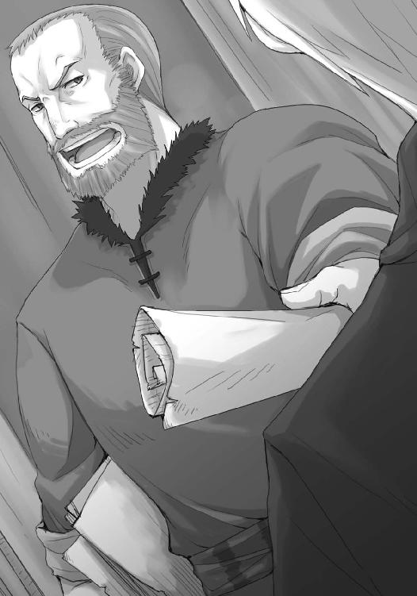
家の裏口まで連れていかれ、ロレンスはミュラーに顔を覗き込まれていた。
「領主が天使の伝説の残る土地を荒らしに来た、と。そして、そのことを教会に伝えてくれ」
「それは──」
「頼む！ 早くしないと手遅れになる！」
ロレンスが咄嗟にホロを見ると、ホロもうなずいた。
ただ、その顔が若干戸惑い気味だったのは、逃げる必要があるならば、という言葉が頭につくからかもしれない。
なにせ、ロレンスたちはカテリーナを魔女と言いに来たわけではないし、彼女を修道女だと主張してくれる教会の人間の存在は領主も望んでいたはずなのだ。
しかし、ミュラーは妙なことを言った。
「礼はする。それに、修道女様のためでもある」
ミュラーは家の表口を見、もう一度こちらを見て、言った。
「森と湖が、変わり果てる」
ロレンスはその言葉の勢いに押し出されるようにして、裏口から外に出た。
直後、代官の兵たちがミュラーの家の入り口にたどり着いたようで、大声で名を呼んでいた。
ロレンスは迷いつつも、結局ホロの手を取って走った。
森と湖が変わり果てる？
そんな疑問を、胸に抱きながら、走ったのだった。
村の裏手から森に続く道はすぐにわかった。
細い道で、せいぜい狩人たちが仕留めた鹿を担いで運べる程度の広さだった。
代わりに、普段から使っていることを示すように、雪は踏み固められ、木の枝は払われ、走りやすくなっている。
ロレンスとホロは、木々の間をひたすらに走ることになった。
「なんじゃ、あれは」
「わからん。代官と言ってたからな。村を挙げての面倒なことに......なったんだろう」
言葉が途切れたのは、木の根っこを飛び越えたから。
ホロもローブの裾をたくし上げながら、それなりに軽快に飛び越える。
「森と湖が変わり果てる、と言っておったな」
「ああ」
ロレンスは返事をして、同時に頭には一つの考えがあった。
代官たちが村を急襲し、村の代表者たるミュラーがあんなに慌てるとなる。
そして、森と湖が変わり果てるとなれば、導かれることは一つしかない。
しかし、ホロに黙っていたのは別になにか思うところがあったのではなく、息が上がってきてそれどころではなくなったからだ。
遅れ始めたホロの手を引き、ロレンスたちは緩やかな上り坂を上っていく。
「元の姿に......戻ればよかったんじゃ」
と、ホロが冗談なのか本気なのかわからないことを言った直後、急に道の左手が明るくなった。視線を向ければ、木々の向こうに真っ白い湖畔が見えた。それからしばらく行くと、湖のほうに下りる脇道があり、坂になっていたそこを滑るように駆け下りた。
湖畔にはコルとフランのものだろう足跡があったが、行きと帰りの両方が残っている。
そう思って視線を巡らせれば、小屋の側の滝に続く入り口に、二つの人影があった。
なにかを見ているのか、じっとしている二人に向かい、ロレンスは手を振って声をかけようとした。
それを制したのは、他ならぬホロだった。
「ぐ、む......な、なにを？」
「大声を出すでない」
ホロは声を潜め、一瞬なにかの冗談かとも思ったが、その顔は笑っていない。
ロレンスがもう一度フランたちに視線を向ければ、それは二人でなにかを見ているのでも、ましてや仲睦まじくしているふうでもなかった。
じっとしている。
まるで、息を潜めているように。
「坂の下に誰かおるんじゃろう」
「......それなら、隠れたほうがいいんじゃないのか」
「たわけ。たとえ相手から丸見えでもの、こういう場所では動かなければそうそう見つからぬ。木々の向こうにおっても、動いてしまうと相手の目に留まりやすい」
森の狩人たる狼のホロが言うのだから、そうなのだろう。
確かに、そう言われて目を凝らせば、フランはコルを手で制したままの姿勢で固まっているように見えたし、コルはコルで慌てて隠れようとしたところを止められたように不自然な姿勢だった。
フランの対応は完璧だったのだろう。
ただ、気になるのは、ロレンスも知らないようなそんな荒事に関することを、なぜフランが知っているのか、ということだ。
「ふん」
ホロが鼻を鳴らしたのも、似たようなことを思ったからかもしれない。
しばらくすると、ふと身を潜めていたロレンスたちに向かってフランが手招きした。
結構な距離があるのに、気づかれていたらしい。
不機嫌そうなホロの背中を押して、ロレンスたちはそちらのほうへ走っていった。
「どうしました？」
その台詞は、ロレンスからフランに向けて。
コルはロレンスたちの姿を見た途端緊張が解けたのか、腰が抜けたようにその場にへたり込んでいる。
「兵が小屋に。そちらは？」
「同じですよ。兵が村に。領主が兵を連れてやってくるそうです。森と湖が変わり果てる、と」
ロレンスとしては領主がなにをしようとしているのか理解に苦しんでしまう。
しかし、事前にこの地の状況を把握していたフランのこと。それだけ揃えば、事態がどういう方向に動いたのか、すぐにわかったらしい。川を見つめていた動揺の浮かぶ横顔が、絵の具で描き換えていくように、怒りの色に染まっていく。
「彼らの節操のなさには頭が下がります」
「それは」
ロレンスが聞き返す間もなく、フランは言った。
「カテリーナを亡き者にするつもりでしょうね」
その瞬間、ロレンスにも彼らの目的が理解できた。
カテリーナはすでに死んでいる。
ならば、それは文字どおりの意味を成す。
「さしずめ、これからは異教も正教も関係のない金の時代、とでも言うのでしょう」
洒落が利いている。
フランは黒い冗談に怒りの表情のまま笑い、ため息をついた。
「ここまで来て......領主が決断するなんて......あと少し、あと少しだったのに......」
フランは悔しげに言って、ローブをぎゅっと音がするほどに握り締める。
これまで正教と異教の間をコウモリのように飛び回っていた領主が決断したのは、第三の選択だった。
時代の趨勢によって絶対に見えた教会の力も弱まることを知り、もう、それらを利用することに辟易したのだろう。
だとすれば、カテリーナを魔女と呼ばせたままその痕跡の一切を消し去ることで、信仰に関わる問題を文字どおり一掃したいと願ったのだろう。
そのうえで水車を作り、デバウ商会が扇動する新たなる北の大遠征に合わせて、水車の動力を使って仕事や職人たちを呼び込むつもりなのかもしれない。
金ならば、正教も異教も問うことはない、とばかりに。
「地図は？」
フランは顔を上げ、睨むようにロレンスを見る。
「貰えましたが......待ってください」
前に出ようとしたフランの足をロレンスは止め、フランに負けないほど、その目を見つめ返す。
「落ち着いてください。領主がカテリーナの痕跡を消し去ると覚悟したのなら、私たちの存在はどう考えても邪魔でしょう。まず説得は無理でしょうし、天使の伝説を探すなんてことも、領主が許すとは思えません」
ロレンスの言葉にフランの顔が歪んでいく。
馬鹿な娘ではない。
頭に血が上っても、きちんと頭は回っているのだ。
「天使の伝説まで目前だったのはわかります。それに、フランさんが軽い気持ちでここに来たのではないこともわかります。ですが、危険すぎます」
逃げましょう。
ロレンスが言うと、フランはその言葉にじかに殴られたかのように、一歩、二歩、と後ろに下がった。
コルがその肩を慌てて支えたのもわかる。
そのままだったら、その場に崩れ落ちていただろう。
「......そんな......もう少し......だったのに......」
嬉しそうに、興奮を抑えきれないといった様子で小屋に飛び込んできたのは、つい先刻のことだ。
期待が大きかった分、失意はあまりにも重いものだろう。
ホロも苦い顔をして、言葉を挟めずにいる。
逃げるならば、兵がいったん引き上げた今しかない。
ロレンスは「残念ですが」と言って、フランの手を取ろうとした、その瞬間だった。
「ルド・キーマンから、あなたのことを聞きました」
言葉に詰まったのは、突然のそんな言葉が理解できなかった、ということもある。
しかし、不意にキーマンの名を出され、まるで秘密を言い当てられたような気がしたからではない。ロレンスたちを相手に選んだのなら、簡単な素性調査はするはずだから、ケルーベですぐにキーマンにたどり着いてもおかしくはないからだ。
ロレンスが怯んだのは、もっと現実的な、ある種の予感があったからだ。
さもなくば、ほとんど商人としての本能が、理性とは別のところで勝手に思考を組み上げていたのだろう。
その瞬間、ロレンスはフランがなにを言おうとしているのか、わかったのだ。
「神をも恐れず、機を見て利益を得、人のつながりを巧みに操ると、聞きましたよ」
フランは涙を拭い、できもしない不敵な笑みを浮かべようとした。失敗したそれが、よりいっそう顔に凄みを増している。
ロレンスは尋ねずにはいられない。
自分の考えが、間違いであってくれと願いながら。
「私になにをしろと？」
「カテリーナ・ルッチを聖女だと言ってください」
ホロとコルが怪訝そうな顔をしたのがわかった。
もはや信仰云々の策は使えなくなっている。
だというのに、そんなことにまだこだわるのか。
二人はそう思ったのだろうが、ロレンスは違う。
しかも、それはまったく違う。
敬虔なる修道女と聖女とでは、まったくその意味合いが異なってくる。
もちろん、その扱い方も。
そして、その価値も。
「そんな──」
「彼女はれっきとした列聖の候補に挙がっていた聖女です。レノスでは身分を隠していましたが、援助する貴族は多かった。彼女を列聖するための教皇への陳情書は、今でも枢機卿たちの机の中にあるはずです。いかがでしょう」
言い終えて口をつぐんだ姿は、まるでフランが心を閉ざしたかのように見えた。
実際に、フランが口にしたことはそれほどのものだ。
ただ前のみを見て歩く、孤高の銀細工師フラン・ヴォネリ。
そんな評判に相応しい、忌まわしいほど実利的な判断だったのだから。
ロレンスは、固唾を飲んでから、言った。
「修道女カテリーナが聖女カテリーナになれば、あの小屋に残された物は、亡骸も含めて聖遺物になるでしょうからね」
聖遺物の単語に、コルが「あ」と声を上げる。
それが合図だったかのように、フランの口元が、ようやくうっすらと笑うことに成功する。
「聖遺物は途方もない金になる、と言えば領主も水車を諦めるでしょう。疑うならば、小屋に帰って日記をご覧になってください。各地の諸侯の名前と、経緯が記されています。もっとも、あの小屋が放置されているあたり、列聖の手続きは停止したままなのでしょうけどね」
実際には、噂にしか聞いたことのない話。
列聖され、聖人と認められればその人物に縁のある品物は、なんであろうと信じられない高値で売れる。奇跡があると評判になれば巡礼者が押し寄せ、教会のみならずその土地周辺までもが潤うことになる。勢い、自分たちの土地の聖職者を聖人にしようと列聖の手続きに貴族たちが群がることになるが、そのためには莫大な費用がかかるという。
貴族たちからすれば、自分たちの死後の幸福と、生きている最中の利益のかかった大きな博打になる。
そのために破産した者たちは無数にいるといわれているが、それでも引きも切らないということは、当たりさえすれば莫大な見返りが期待できるからなのだ。
カテリーナ・ルッチは、とことん、誰かの起こす渦の中にいる運命にあった。
「私に、聖女を、売れと？」
「売買には慣れていらっしゃるかと」
ユーグ商会で、ロレンスに向かい、地図一枚を金貨五十枚だと言い放った時の顔。
今度ばかりは言いくるめられてはならない。
ロレンスは、反論した。
「無謀です。聖遺物に値するような品物を私のような行商人が扱えるわけがない。騙せたとしても一瞬です。ケルーベでのイッカクも、交渉の矢面に立ったのはキーマンと、もう一人は元貴族の商人です。ウィンフィールでも聖遺物取引の周縁にいましたが、はっきり言って、手出しできる規模ではありませんでした」
金というものは、積み上げていくと単純に量が増えるだけではない。ある瞬間から、その質が変わる。物が買える値段から、人の心を買える値段になり、やがて人の運命をも買えるようになっていく。
聖遺物とは、そういう高みにある品物だ。
しかし、フランは決してロレンスから視線をそらさず、はっきりと、ほんの少しの淀みも見せず、最後の切り札を出すように、こう言った。
「対価に、北の地の地図をお描きします。すぐにでも」
一瞬の、間。
「......え？」
馬鹿にして、聞き返したわけではない。
単純に驚いて聞き返してしまったのだ。
聖女だとでっち上げ、噓で作り上げた聖遺物を取り扱うような危険な取引が、まるで北の地の地図一枚で釣り合うのが当然だと言わんばかりの雰囲気だった。
フランはじっとこちらを見る。
ロレンスは、こう言わざるを得なかった。
「釣り合うと、お思いですか？」
その時のフランの顔は、場違いな表現をすれば、可愛かった。
目を見開いてこちらを見つめ、本当に？ という言葉が今にも口から出てきそうだった。
ただ、ロレンスが小屋に来た村人たちのことを伝えた時のようではなく、驚きが薄れていく代わりに、その表情に入れ替わって注がれていくなにかがあった。
褐色の肌に、漆黒の瞳。
魔術師、と呼んでも差し支えのないフランが、抑揚のない声で言った。
「北の地の地図のために、危険は冒せないと」
ホロを横目で見る。
ホロはじっと無表情にフランを見つめているし、コルは明確に困惑している。
危険だけならばまだしも冒せる。
しかし、魔女だのなんだのと翻弄され続けてきたカテリーナを、さらに今更聖女だと言って、あまつさえ領主を騙して売り捌くなどということができるわけがない。
そんなことをすれば、ロレンスはどうしてホロの手を取ることができるだろうか。
「領主相手にほらを吹き、ましてや聖女を売ることを前提にした交渉など......できかねます」
「そう」
フランは言って、すっと前に進み出た。
ロレンスは動けない。それほどに淀みのない動きで、すれ違った直後には、フランの手にロレンスが胸にしまっていた地図があった。
「どちらに」
馬鹿げた質問だとわかっていても、聞かざるを得ない。
フランは、じっとなにかを考えるように立ち止まったあと、ゆっくりとこちらを振り向いた。
「ユーグの口を割らせたのですから、よほどの覚悟だと思ったのですが」
絵画を前に、フランの傍若無人ぶりに耐えるユーグの言葉が蘇る。なにをおいてでも、全てに優先させてでも、フランに自分たちの故郷を絵にしてもらう。
そんな覚悟の彼の口を割らせたのは、確かだ。
フランは、続けて言った。
「あなたも私と同じなのだと思っていましたが、違ったようですね」
「それは」
どういう意味ですか、と聞き返す間もなかった。
「あなたは、その程度の覚悟で北の地の地図を？」
「っ」
胸を針で突かれた、と思った直後には、フランは歩き出していた。
縫い留められたように足は動かず、頭の中身すら動かなかった。
まるで自分たちが悪ふざけをしているところに冷水をぶっかけられたような気分だった。
はっきりと、恥も外聞も全て取り払って、正直に言ってみればいい。
北の地の地図を探すことが、どの程度の覚悟だったのか。
それは、あまりにも矮小な覚悟の下だ。
ホロと一緒に旅をしていたい。
それも、なにもかもを投げ出さないことを互いに確認し合ったうえでの、生ぬるい約束をつけて。
狼の骨を追いかけるのも、北の地の地図を追いかけようと言ったのも、理由のないことではなかった。一つずつを見れば、当然、看過できるような事柄ではない。
それでも、全てに共通している土台がなんなのかは、わかりきっている。
ホロの側にいたいという、ひどく単純で、子供じみた思いだ。
そうなると、そんな土台の上に立つ楼閣は、どうしたって貧弱なものになる。
わかっていたことなのに、その程度の覚悟と言われ、ロレンスは自分のことがひどく浅ましく思えてしまう。
立ち尽くしたままでいると、そんなロレンスの手をホロがすっと握ってきた。
「痛いところを突かれたの」
見れば、こちらを見上げる顔はさばさばしたもので、どこかいたずらがばれた少女のようだった。
「じゃが、あの干物を本当に売るつもりかや？」
まさか、とロレンスは即座に思う。
ならば話の行く先は決まっているはず。
ホロの視線がそう言って、ロレンスを諭す。
村人たちのためならばまだしもホロは義憤に駆られることがある。
しかし、死後も散々村人や領主の都合のために翻弄されてきたカテリーナを、さらにいいように使って自分たちの目的を遂げようなどとは思っていない。
割りきれない思いは残る。
それでも、フランの案には、賛同できない。
最悪、口封じのために殺される可能性だってあるのだから。
「逃げよう」
ロレンスが言うと、ホロはうなずく。
声を上げたのは、じっと話を聞いていた、コルだった。
「フランさんを置いていくんですか？」
ロレンスはホロと顔を見合わせる。
フランの重要性は、議論するまでもない。
「俺たちが安全な場所まで逃げたら、ホロに頼むか、さもなくばユーグさんに協力を仰いだっていい。身の安全は確保する。フランさんを必要としている人たちは多い」
みすみす死なせるようなことはしない。
しかし、コルは泣きそうな顔になって、こう言った。
「違います。フランさんの追いかける天使の伝説も、諦めるんですか」
正直に言えば、ロレンスはその言葉に困惑していた。
天使の伝説を追いかけるのはフラン自身の理由であり、ロレンスたちとは関係がない。
そう思った直後、違う、と思いなおした。
コルはフランから、その目的を聞いたのではなかろうか。
カテリーナを聖女だと言い張って領主を騙せなどという案が、即座に出てくるくらいの覚悟を持つ、その理由を。
それでも、このまま危険を冒して天使の伝説を追いかけることがどれほど合理的でないか、言いかけた。
ロレンスが口をつぐんだのは、一冊の本。
コルが泣きそうな顔で突き出した、一冊の本だった。
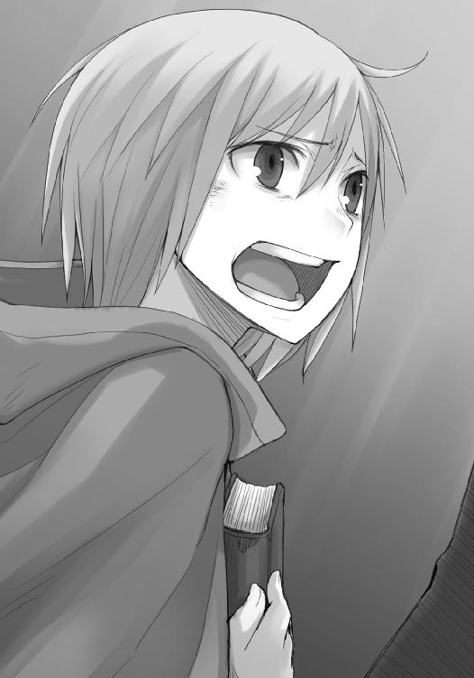
「僕はロレンスさんたちの旅に無理やり同行させてもらってるだけです。お二人も大好きです。でも......でも、フランさんもまた見捨てられません」
コルは言って、ロレンスに本を押しつけると、荷物を背負って走り出した。
声をかける間もなかった。
コルは素直で心優しい少年だ。フランが軽い気持ちで追いかけているのでなければ、その理由を聞けばすぐに感化されてしまうかもしれない。
そんなふうに考えてもいた。
だが、その考えは、すぐに吹き飛ぶことになる。
コルから手渡された一冊の本。
表紙に刻まれた題目から、それが聖典であることはすぐにわかる。
ロレンスの顔が強張ったのは、この局面で聖典を突きつけられたことに対してではない。
その表紙に、血のこびりついた跡が大きく残っていたからだ。
「なんじゃ、それは」
ホロが言って、ロレンスは我に返る。
「聖典のようだが......」
ロレンスは、軽くめくっていく。
隅が擦り切れていたり、ところどころ血でくっついて開かなくなっていたり、焼け焦げたような跡もある。まるで戦火でもくぐり抜けてきたかのように、と表現したって過言ではない。
そして、ロレンスは聖典の間に、折りたたまれた紙が何枚か挟まっているのに気がついた。
開いてみると、針のように鋭い筆致で、殴り書きがなされていた。
「親愛なる......キルア......ヴァイ、エン......キルヤヴァイネン、傭兵団？」
血塗られた聖典と、そこに挟まっている紙に刻まれた、傭兵団の文字。
ロレンスは煤を払い、目を凝らして文面を解読する。
傭兵団の名前の横には、宛名があった。
「フラン......ヴォネリ」
コルがフランの代わりに背負っていたのだろう荷物の中にあったものなのだから、フランに宛てられたものであってもおかしくはない。ロレンスが思わずその名を呟いてしまったのは、その名に冠された、肩書きを見たからだった。
「従軍司祭、フラン・ヴォネリ」
その言葉を見た瞬間、ロレンスは頭を鉄の棒で殴られたような衝撃に襲われた。ぬしよ、というホロの言葉も聞かず、ロレンスは手紙をめくっていく。
文字が滲んでいたり、煤や血や泥で汚れたりしていて文面を完全に読むことはできない。
ただ、それがキルヤヴァイネン傭兵団と呼ばれた連中の、書記の手によるものだということはわかった。それも、フランとは離れた場所にいたらしい。二枚目の紙の先頭に、『貴女様の祈りを胸に、遠方の地より』と書かれていた。書記らしい彼はそのあとに、癖のある字で簡潔に事実を記している。
『リディオンの戦役、十人隊長マルティン・グルカス戦死』
『ラヴァン平原で裏切り。リッツォ侯爵の兵に追われる。神の呪いを。その夜、酒保のリエーヌが怪我がもとで死亡。眠るように旅立たれ、遺言はなし』
『密告により、伯に匿われていた我らが百人隊長、ハイマン・ロッソが捕らえられる。牢では立派な態度で通され、常に貴女様の心配をしておられた』
そして、最後の紙だ。
『ナクーリ司教区の町ミリグアにおいて、聖ラフエヌの月、絞首刑。最後に貴女様への言伝で、先に、天使を見に......』
最後の紙は、くしゃくしゃになっていた。
末尾にまだなにか文字が残されていたが、完全に滲んでいてまったく読めなかった。
ロレンスは呆然とし、ようやく口から出てきたのは、「ああ」といううめき声だけだった。
若くして諸侯の覚えがめでたく、力仕事に慣れているようでもあり、肝の太さは山賊と見まがうばかり。
しかし、気品を失ってはいない。
戦場で生まれた銀細工師、とキーマンは言った。フラン自身はユーグに、奴隷だったのだよ、と言ったらしいその二つの意味が、つながった。
フランは傭兵団で、彼らに襲いくる弓矢や剣を防ぐ代わりに、信仰の盾によって死の恐怖や迷いから仲間を守っていたのだ。
だが、そうであるのなら、フランが天使の伝説を追い求めるという理由も自ずと変わってくる。最後の紙がくしゃくしゃになり、文字が滲んでいることは、一つのことを表している。
フランの語った親しい知人とは、この絞首刑に処された百人隊長のことだろう。
天使の伝説を思い出してみればいい。
天界への扉が開き、天使が旅立っていった。
そこに特別な意味を見出すのに、それ以上の言葉はいらないはず。
末期の傭兵団の悲惨な話など枚挙に暇がない。フランが生き延びているのは、その最後の地獄から遠ざけられていたからだろう。遠方の地より、という言葉がそれを裏づける。
それに、ユーグの商会で聞いたはずだ。
爪と牙を持つ者から順に死んでいく。
従軍司祭は祈ることしかできず、祈りでは剣を防げない代わりに、戦いに赴くことがない。
そして、フランは実際に、生き残っている。
「ぬしよ」
ホロの言葉で我に返った。
しかし、それ以上の言葉は向けられない。
「すまない」
ロレンスの顔つきから、次になにを言うのか、おおよそのところを察していたのかもしれない。川下から風が吹き、涸れかけた水の上を走る風はロレンスたちの間を吹き抜けて森の中に入り、幾分雪を巻き上げて消えた。
「力を貸してくれないか」
ロレンスは、短く言った。
ホロは返事の代わりに、聖典と手紙を寄越せと手を伸ばしてくる。
「それで？」
ロレンスから受け取った聖典と手紙を読み終わったホロは、顔を上げるなり、そう言った。
詳しいことはわからずとも、大まかなところは理解できたはず。
なにより、コルが珍しく自分の意見を言って、フランを追いかけたのだ。
それだけで、無視できる話ではない。
「安っぽい同情だってのはわかってるつもりだ」
「ならば、なぜじゃ？」
聞き返され、不意に笑ってしまったのは、誤魔化そうとしたからではない。
言おうとして、自分で恥ずかしくなってしまったからだ。
ホロはそんなロレンスを訝しげに睨み、耳を引っ張った。
それでもロレンスの顔から笑みは消えなかった。
なにせ、こんな馬鹿なことを、思っていたのだから。
「もっと世の中が甘かったらな、と思ったんだ」
ホロは耳から手を離さない。
ロレンスも、ホロから視線を外さない。
「もう少し、自分たちの思うとおりにいってもいいんじゃないかと思ったんだ。無理を通したら、常識が引っ込んでしまったような、そんなことがあってもいいな、とな」
フランのいた傭兵団は、無理が通らなかったのだろう。その生き残りのフランも、このまま無理を通そうとしたところで常識が引っ込むとは思えない。
水車は建設され、運が悪ければフランは殺されるだろう。
そうでなくたって、これまで生き延びてきた連中、死んでいった連中を見比べれば、世の真理が見えてくる。そんなことは、自分のわがままを拳一つで黙らされたことのある子供だってわかっている。
だが、魔女と呼ばれることを甘んじて受け入れ、人に愛想を尽かし、その信仰心だけを胸にあの小屋で息絶えたカテリーナも、普通に考えれば見込みのない天使の伝説を追いかけていた。
安っぽい同情でも、偽りの奇跡でも構わない。
世の中にはもう少し甘いところがある。
そう思いたかった。
「たわけじゃな」
ホロの言葉は、短くて的確だった。
「本当にたわけじゃ」
理解できないという顔をして、大きくため息をつく。
ホロはそんな馬鹿には付き合えぬ、とばかりにロレンスの耳から手を離す。
だが、もう一方の手は、小指でロレンスの薬指を絡め取っていた。
「世の中そんなに甘くないことくらい、わかっておるじゃろう？」
ホロは賢狼だ。
ロレンスの浅はかな気持ちくらい、簡単にお見通しなのだ。
「わかっている。だが」
「だが、なんじゃ」
多分、答えを間違えればホロは目の前からいなくなってしまう。
そんなことを少し前までなら思ったことだろう。
ロレンスはホロの手を取って、引き寄せてから言った。
「辛い過去を持ち、一途に想う娘を見たら、手伝いたくならないか」
ホロは牙を剝く。
真っ白で、綺麗な牙だ。
「失敗したら許さぬ」
「もちろん」
ロレンスは、ホロの額に自分の額を軽くぶつけて、言った。
「もちろん」
もう一度、言ったのだった。
「じゃが、どうするつもりなんじゃ？」
小屋に戻る途中、ホロが我慢できずにそう聞いてきた。
「難しいことをするわけじゃない。カテリーナを聖女だと言うだけだ」
「......売るのかや？」
「違う。そのうえでこう言えばいいんだ。我々は列聖手続きにおける確認作業を任されてきました、と」
それはとりもなおさず、列聖手続きに関わるお歴々がこの地に注目していることを示す。
ロレンスたちに不自然な事故があったり、村人たちに不可解な行動があったりすれば、たちまちのうちに領主は窮地に陥ることになる。
「じゃが、どんなたわけの領主といえど、臆病であるからこそ決断する際には調べるはずじゃ。仮に列聖とやらの手続きが実在しておっても、わっちらがその代理でないことくらいすぐにわかるじゃろう？ ならばそんなことをしてなんの意味が......」
ホロは言いながら、気がついたらしい。
嫌な顔をするのも、ロレンスは予測ずみだった。
「力を貸してくれ、と言っただろう？」
「......知恵のほうかと思いんす」
子供の屁理屈のように言って、唇を尖らせる。
しかし、それ以上言葉を向けてこない。
ロレンスは、言った。
「天使の伝説には獣の鳴き声のくだりがある。お前の力を借りられれば、カテリーナが『本物』の聖女だと演出することくらいわけはない。それこそ、疑う余地もないくらいに」
「むう」
「そして、列聖手続きが止まっているらしいという事実だ。列聖され、教会から公式に聖女だと認められなければ、聖遺物として金銭的な価値は出ないからな。価値がなければ、売られることもない」
ホロは、つまらなそうに言葉を挟む。
「姑息じゃな」
「せめて狡猾だと言って欲しい」
どちらも一緒だ、とばかりにホロはため息をつく。
「あとは、領主に言い含めておけばいい。大金と信仰が絡むことゆえ、へたに他言されるとそちらのためになりません、とな」
正教と異教の間でコウモリのように動き回る領主としては、骨身にしみている言葉のはず。
よく躾けられた犬のように、口をつぐむだろう。
当然この先ずっと領主を食い止められるかどうかはわからない。
しかし、十分な時間は稼げるはずだ。
それこそ、フランが天使の伝説を諦められるくらいには。
「ま、尻尾を巻いて逃げるよりはまし、という話じゃな」
ホロは言って、小屋にたどり着くと囲炉裏に薪を放り込んだのだった。
教会から公式に聖女と呼ばれる一歩手前まで行ったカテリーナ・ルッチ。
彼女の残した日記は、日記というよりも、日々の雑務を淡々と記していくだけのものだった。
ただ、それだけでも十分にカテリーナの人となりはわかったし、彼女がどういう状況にあったのかも理解できた。
ロレンスですら聞いたことがあるような大きな司教区の大司教からの相談や、貴族の婦人からの相談、大商会の主から寄せられた手紙もあった。
普段は彼らの相談に答える手紙をしたためながら、教理問答に関する考察や、聖典の翻訳や重要な書物の写本を作ることに毎日の時間を割いていたらしい。
それだけを見れば穏やかで信仰に満ちた日々、といえなくもないだろうが、日記には時折カテリーナの胸中を推し量れる文章が綴られている。
聖典の翻訳は、どこぞの司教区の司教が貸して欲しいと使いを寄越したので渡したら、期限を過ぎても返却されなかった。写本は、本を扱う商人が無理やり金と交換に持っていった。教理問答は、女が手を出すものではないと教会会議で決議され、偽名で出すほかなかった。
極めつけは、お偉方がカテリーナの評判を聞きつけて送って寄越した手紙の数々だ。
大司教区の大司教は、あれこれ教理の話を織りまぜてはいるものの、要するに日々貴族諸侯の晩餐に呼ばれついつい大食してしまうがどうすればよいかといった馬鹿げた相談だった。
貴族の婦人は、犬も食わない夫婦喧嘩の愚痴を延々と綴っていた。
大商会の主は、一体いくらくらいを貧しい者たちに寄付したら、自分は天国に行けるだろうかと、率直な質問をしたためていた。
カテリーナは真面目に、懇切丁寧に返事を書いていたようで、その下書きが残っている。
ただ、それらの馬鹿げた質問に対する返信の間に、短く一言だけ挟まっていた。
これも神が私に与えたもうた試練なのでしょうか、と。
一途に信仰心を深めていた、一人の修道女の苦悩が滲み出ているようだった。
列聖の手続きに関しても、全てはカテリーナの関与しないところでなされていたらしい。
再三断る手紙を書いたようだが、戻ってくる手紙はことごとく支援者が増えた、列聖は近い、という内容ばかりだった。
ロレンスは諸侯の名前や、手紙にある諸々の事柄を暗記していくかたわら、気分はどんどん沈んでいった。
村の代表者がある日やってきて、事情を説明したうえで、魔女と呼ぶことを許してくれと陳情したことも書かれていた。
カテリーナは村人たちに同情したうえで、自分ひとりが苦しむだけですむのなら、と書いている。
フランが言ったように、人の弱さを嘆く文字が、乱れた筆跡で書かれていた。
そして、ある時点を境に、急に日記は日記らしくなっていく。
季節の移り変わりや、犬の話題が多くなる。やれ、仔犬を産んだだの、鳥を捕らえてきてしまったので神に許しを請うただの、そんな記述ばかりだった。
反面、そんな記述の間に貴族諸侯からの手紙が挟まっていたが、返事を書いた痕跡は残されていない。その後村人たちがどうなったのかも、日記からは完全に窺い知れなかった。
吹っ切れたのだろう、と思った。
自分の信念を貫き通すことはできず、また、それで世界が変わることもないのだ、と。
楽しそうな日々の出来事ばかりが書かれている日記を、ロレンスはゆっくりと閉じた。
辺りは薄暗くなってきていて、もう間もなく日が暮れるだろう。
囲炉裏に薪を足し、粗皮の仕切りの向こうに行った。
ホロにもなにか役に立つものがないかと本棚で本を見てもらっていたのだが、そちらの部屋に行くとホロは木窓を開けて外を眺めていた。
まるで椅子に座っているカテリーナと一緒に外を眺めているようにも見えた。
「滝が見える」
ホロは呟いた。
「いい景色じゃな」
言葉に釣られて、ロレンスもホロの後ろに立って外を眺めてみる。
確かに、木の向こうに滝が見える恰好の位置だ。
それに、視線を滝とは反対側に向ければ、そこだけぽっかりと下草の類が取り払われている空間があって、雪が白く積もっていた。
想像にかたくない。
花壇か、なにかだったのだろう。
「もしかしたら、こやつのんびり昼寝のつもりで目を閉じたのかもしれんな」
ホロは言って、軽々しくカテリーナの額を突つく。
日記の様子からはさもありなん、と思うし、そんな最期はなかなか素晴らしいかもしれない。
ロレンスが苦笑していると、ホロは木窓に手をかけた。
「風が出てきたの。寒い」
言って、ぱたりと木窓を閉じる。
ホロは自分から木窓を閉じるような性格ではない。多分、このままここで話を続けるのが怖かったのだろう。
死者の横で交わされる会話は、それがたとえ楽しい思い出話だろうと、必ず最後には悲しい気分をもたらす。魔女と呼ばれ、聖女と呼ばれ、生きているうちにも、死んだあとにも翻弄されている者を前にすればなおさらだった。
木窓を閉じるや、ホロは一人囲炉裏のある部屋に戻ってしまう。
ロレンスもあとを追いかけようとして、つい後ろを振り向いてしまう。
村人や領主を身勝手な人間だと言いながら、自分たちだって自分たちの感情や考えに従って、カテリーナのことを建前上の聖女にしようとしているのだ。
しかし、ロレンスは敢えてなにも考えず、ホロのあとを追いかけた。
商人が追いかけるのは現世の利益だけ。そんな免罪符を、心の中で握り締めながら。
そのあと、フランとコルが帰ってきた。未だロレンスたちがいるのを見て、フランは驚きを隠せていなかった。コルに至っては、今にも泣きそうな笑顔だった。
ただ、小屋の入り口で立ったままのフランは、どうして突然気が変わったのか、と言いたげな顔だ。はっとした顔つきになったのは、ロレンスが血塗られた聖典を手に持っていたから。
フランはコルを見て、それからもう一度ロレンスを見る。
その手にあるのは、自分の過去と、過去から続く現在。
フランはうつむく。
商人は、どんな時でも利益のために動かなければならない。
「北の地の地図を描いてもらいますよ」
ぎゅ、とフランが自分のローブを握り締める音が聞こえそうだった。
「我々にも、信じたいものがありますから」
フランはうつむいたまま、うなずいた。その拍子に水滴がたたっと落ちる。
「......わかりました。約束します」
フランは、目元をぐいと拭ってから、顔を上げて言った。
「ありがとう」
ロレンスは笑顔でその言葉を受け取って、しかし、視線はフランから外していた。
囲炉裏の中で炭が崩れ火の粉が舞った。
ロレンスの目は、小屋の外に向けられている。
「そのお言葉は、まだ早い」
従軍司祭だったというフランも、その言葉の意味がわかったらしい。
もう一度うなずき、即座に聞いてくる。
「どうするつもりですか？」
「当初の予定どおり、司教から派遣された銀細工師ということで構いません。ただし、我々のもう一つの目的として、列聖手続きにおける確認にやってきた、と付け加えたい」
フランは一瞬呆けたような顔つきになるが、賢い娘だ。すぐにロレンスの狙いが見えてきたようで、ゆっくりとうなずいた。
「私はカテリーナを売り捌く気はありませんからね。代わりに、列聖手続きが継続中ということで、ここの領主に手も足も出させなくしたいと思います」
次にうなずいた時、フランははっきりとこう言った。
「わかりました」
遠くから馬蹄の音と、複数の足音が聞こえてくる。
フランは涙をもう一度拭い、ロレンスから受け取った血塗られた聖典を力強く抱きしめた。
「参りましょう」
顔を上げた時には凛とした表情で、口から出てきたのは戦場に暮らす者らしい言葉遣いだった。
下知、という言葉がある。
馬の上にまたがったままこちらを見下ろすその老騎士は、背中から松明の灯りを受け、まさしくその言葉に相応しい様子でこう言った。
「リュビンハイゲンからやってきたという者か」
あのまま即座に逃げ出していても、ホロの力を借りなければ町に向かうどこかの道で彼らに捕まっていたかもしれない。老騎士の後ろには、土地の人間だろう農民に革製の鎧をつけさせただけの兵たちがつき従っている。彼らを相手に闇の中を逃げるのは得策ではない。
小屋の中でじっとしていたのは、そういう意味では正解だったかもしれない。
しかし、全てがうまくいくかどうかは、まだわからない。
ホロとコルは打ち合わせどおりに小屋の中で待機をし、ロレンスとフランだけが小屋の外に出ていた。
「はい」
ロレンスが返事をすると、老騎士は兵に向かって顎をしゃくる。
領主の代官と名乗ったので、領主からの勅許状でも見せるのかと思っていた。
が、突きつけられたのは、長い柄の先についた、槍の穂先だった。
「諸君らはここでなにも見なかった、聞かなかった。さもなくば、来ることは叶わなかった」
この言葉の意味がわからないようならば、そもそもつながっている価値のない首だ、と言わんばかり。
しかし、殺すつもりなら交渉するまでもなく殺している。
ロレンスは穏やかに、黙ったまま代官を見上げた。
「返答は？」
代官の口調に乱れはない。おとなしく従えば、無事に帰してくれるということだろう。
その後ロレンスたちが教会になにか言おうとも、全てはすんだあとのこと。知らぬ存ぜぬで通すことはさほど難しくはないはずだ。
では、逆らったとすれば。
助けを呼んでもまず間違いなく誰の耳にも届かない森の中。
賢くなくとも、並の商人で十分たどり着く、迷う必要もないほどわかりやすい着地点。
ただ、ロレンスは、こう答えていた。
「我々は、司教様のご命令で、天使の伝説を銀細工にするためにここにやって参りました」
代官は右瞼をピクリと動かして、言葉を向ける。
「目的は叶わなかったということだ。リュビンハイゲンといえば遠方の地。誰も疑いはすまい」
「はい。確かにそのとおりでございます」
大上段に構えていた代官が、下から見上げていてもわかるくらいにほっとした。
大国を築いた国王や皇帝が、元は小さくて貧弱な土地の領主であったという話は珍しくもない。彼らが覇を称え、この土地の領主が右往左往するのは、単純に人の器によるのだろう。
それならば、この代官にしてはこの演技が限界なのかもしれない。
ロレンスは、だから、はっきりと言った。
「ただし、それは目的の一つに他なりません」
息を飲む音が聞こえてきた。
「後ろの小屋の中にいらっしゃる聖女がどなたか、ご存じですか？」
「聖......女？」
代官は訝しげに聞き返す。
ロレンスは、言葉を続けた。
「名を、カテリーナ・ルッチ。多くの諸侯の信仰を集め、はるか南におわす教皇の下へと列聖の陳情書が送られている、れっきとした聖女でございます」
「......」
疑いと驚きが入りまじる時、人は無表情になるものだ。
代官の目だけが、苦しそうに向けられる。
「我々は列聖手続きにおける確認作業を任されてきました。なにより、人前に出られることを嫌った聖女でございますからね。長らく行方がわからなかったのですが、ようやく見つかった次第でありまして」
もしもこの噓が本当であれば、今更ロレンスたちの口を封じたところでどうにもなりはしない。
むしろ代官や領主がロレンスたちを傷つけることは、未来の自分たちを傷つけることになる。
「ただ、聖女は静かに眠りにつかれておりました。世には、それとわかる名札がなければ神でさえ犬畜生のように扱う者が多くいながら、こちらの領主様は実にものの道理がわかっておいでです。このことはしっかりと報告させていただきましょう。ところで......」
ロレンスは、じっと代官の目を見返した。
「領主様とご相談されることがおありになるのでは？」
それが時間を動かす魔法の合図だったかのように、代官ははっと我に返り、額の脂汗を拭った。口元がわなわなとひくついているのは、代官としての見栄だろう。
しかし、その口から怒りに任せた言葉が飛び出す前に、後ろから声が聞こえてきた。
「そのようだ」
老騎士が弾かれたように振り向いた。
農夫が慌てて装備をつけてきたような兵が多い中、幾分ましな連中の真ん中にいた男。
神経質そうなやせ細った壮年の男で、金切り声が似合いそうな、と言ったら百人が百人とも思い浮かべそうな容姿だった。
ただ、領主としての風格はさすがにあり、代官が馬から降りてつき添おうとするのを遮る仕草は、なかなか様になっていた。
一人でこちらに向かって歩いてきたのは、多くを他の者に聞かれるのを嫌ったからかもしれない。
「余が、カカナ・リンギッドである」
しかし、よもや名乗られるとは思わなかった。
真っ向からロレンスの話を疑っている、というわけではないらしい。
ロレンスはすぐに膝をついて答礼しようとしたが、それも手で制された。
「ローエン商業組合に所属しております、クラフト・ロレンスと申します」
立ったまま言うと、リンギッドは「うむ」とうなずき、長いため息のあと、こう言った。
「率直に聞こう。我々がお前の話を信じるにたる証拠はあるのか」
馬から降りたうえでそんな一言から始めるようでは、及び腰であるのが明々白々。
強気な言葉は強気な態度で言ってこそのもの。
なるほど、狭い領地の中で、汲々と保身に走りそうな男だとロレンスは思った。
「なにを以て証拠といたしましょう」
聞き返すと、リンギッドは一瞬言葉に詰まる。
怒ったように口を開いたのは、馬鹿にされたと思ったのか、さもなくば、語った言葉の内容そのものが原因だろう。
「余は列聖の話などまったく聞いたことがなかった。それほど重大な事柄であれば余の耳にも入るはず。申せ。証拠はあるのか」
小心な男が怒りで顔を赤くする時、必ずと言っていいほど心の底の恐怖に火がついている。
ただ、誇りをいたずらに傷つける必要もないので、ロレンスはすぐに言葉をつなげた。
「事は多くの地位ある方々に関わること。私程度の者に、物的な証拠は預けられておりません。ですが、代わりと言ってはなんですが、このたび私めに仕事を申し付けられた貴族様方のお名前を列挙いたしましょう」
貴族の世界は狭く、誰が誰とつながっているかなど、概ね了解し合っているという話を聞いた。なにより異教徒と正教徒が入り乱れるこの土地で、あっちこっちに媚びを売って生き延びてきた領主であれば、そのあたりの話については詳しいはず。
ごほん、と咳払いを挟み、ロレンスは頭の中でカテリーナの日記を開き、言った。
「リーン地方ランス伯。ドレーヌ地方マルス卿。シングヒルト領イーブンドット侯。ラマン大司教区コルセリオ大司教」
ロレンスはいったん言葉を切って、リンギッドの反応を見る。
どれかに思い当たる名があったのか、呆けていた。
ロレンスは、さらに続けた。
「リンズ公国では、ディユヌ卿、マラフ卿、ロエーズ伯爵夫人。プロアニアでありますと......」
と、ロレンスが続けようとしたのを制したのは、領主の手だった。
顔が青いのは、緊張のためだろう。
プロアニア以北か、その周辺の領主の名ばかりを言った。正教や異教に、その都度都合に応じて擦り寄ってきた身としては、心当たりのある者ばかりのはず。
それに、大事なことが一つある。
それほど多くの諸侯が関わっている事態が自分の領地にあるというのに、自分がまったく関与できていないという事実。
それは、自分が異教側として認識されている可能性を指し示す。
もしもロレンスが本当に列聖の手続きの確認に来ていたとしたら、そのロレンスの言動を疑うことは自分の立場をさらに危険にさらすことにつながっていく。
なぜなら、この期に及んでよその領主にとりなしを頼むとしたら、実地に聖女の様子を確認しに来たロレンスを通すほかないからだ。
「わ、わかった。それで......それで余はどうすればいい」
すがりつかんばかりの領主に哀れみを覚えなかったと言えば噓になるが、それ以上に感じたのは怒りだ。節操なく生きることにかけては右に出るものなどいないと言わしめるほどの商人から見ても、その情けなさは際立っていた。
まっすぐに生きることは難しい。
しかし、領主たる者もう少し矜持というものがあってもいいのではないか。
ロレンスはそう思ったが、それは思っただけで、顔は絵に描いたような笑顔だった。
「ご安心ください。実は列聖のことを領主様にお話ししなかったのは、ここの土地が非常に難しい場所にあるからなのです。領主様も統治には殊更ご苦労なされているとお聞きしてます」
ロレンスよりも年は倍くらいありそうかという領主であるリンギッドが、子供のようにうなずいた。生まれる場所を間違えた、というのは本当にあることなのだろう。
「ですが、ご覧のように小屋は綺麗に保たれ、領主様は信仰篤いお方と見受けられます。このことをお話しすれば、この件に関わる全ての者たちが、ほっと胸を撫で下ろすことでしょう」
「そ、そうだ。そうだろう」
卑しい笑顔。
隣のフランが無反応なのは、それだけ自制心があるからか、さもなければ、戦場で嫌というほど見てきたか、だ。
「ただ、事が事なだけに、極秘裏に進めなければなりません。引き続き列聖の手続きを進める間は、ここのことを内密にしていただきたいのです」
「......だが、それは......」
「妨害が、非常に多いのです」
ロレンスの言葉に、リンギッドはごくりと唾を飲んで、うなずいた。
作戦は、成功した。
これでダメ押しにホロに登場してもらえば、この森と湖に手を出そうなどとは露ほども思わなくなるだろう。
ロレンスは、ホロと事前に決めておいた台詞を口にしようとした。
その、瞬間だった。
「思い出したぞ！」
そんな場違いな声が聞こえてきた。
リンギッドが弾かれたように振り向いて、ロレンスの視線もそちらに向けられた。
視線の先にいたのは、槍を持った一人の兵士。欠けた鉄兜を被り、傷だらけの胸当てをした、一目で歴戦の兵士とわかる一人だ。
そんな男が、「思い出した、思い出した」と言いながら、三歩前に出る。
フランの、息を飲むような音が聞こえた気がした。
「なにを、思い出したというのだ？」
「思い出したんですよ、旦那」
弱小とはいえ領主を旦那呼ばわりする男が、正規の部下だとは思えない。
なけなしの金を払って雇った流れ者。
喋りながら雪の上に唾を吐き、胡乱な目でこちらを見た。
正確には、ロレンスの隣の、フランのほうをだ。
「村人が言ってた話ですよ」
「村の？」
リンギッドは呟き、不安げにこちらを振り向いた。
無礼な振る舞いの許しを請うようなそんな目に、ロレンスは安心するようにと軽く手を向けようとした。
「ああ、村の連中の言ってた話ですよ。褐色の肌の銀細工師、こいつにようやくぴんときた」
リンギッドが体を強張らせた、というのはおそらく間違いだ。
それは、ロレンス自身の体が強張ったせいで、視界がぶれたのだ。
「も、申してみよ。なにを知っておるのだ？」
リンギッドの言葉に、男はもう一度唾を吐いてから、薄ら笑いを浮かべて言った。
「こいつらが教会に言われてやってきたなんて、そんな馬鹿な話あるかってことですよ」
リンギッドがこちらを再度振り向いた。
遠慮会釈なく、フランとロレンスを見比べる。
その顔は、こちらのご機嫌を伺う目ではなく、反応を窺う目だった。
「旦那。騙されちゃいけない。褐色の肌の銀細工師。名をフラン・ヴォネリ。通称、赤鷲傭兵団の、黒司祭」
ざっざっというのは男がためらいなく前に進み出る音。
じゃき、という金属音は、使い込まれた槍の穂先が、フランに向けられた音だ。
「プロアニアでは多少知られた名だったキルヤヴァイネン傭兵団ってところの従軍司祭ですよ。俺のいた団も世話になりましてね。カーディン渓谷で二十年来の戦友をやられた」
リンギッドは、飛びのくようにロレンスたちから離れた。
貴族の世界が狭いように、彼らから給金を貰って戦う傭兵たちの世界も狭い、ということか。
誤魔化しきれるか？
口を割らずとも、荷物を改められたら、言い訳のしようがない。
「あっちこっちの諸侯に恨みを買った挙句、団長は異端の廉で告発されて絞首刑。ま、どう考えても教会の手先になれるような身分じゃねえってことだ」
「ほ、本当なのか、それは！」
絞められた鶏のような声を上げてリンギッドが叫ぶ。
男はうるさそうに片目を閉じ、槍の穂先を軽くしゃくった。
「本人に聞いてみればいい」
男の薄ら笑いは、領主に恩を売れればたんまり給金を弾んでもらえるからということの他に、もう一つ理由があるはずだ。
復讐に燃えた目。
そうではない。
栄光が過去のものになった強者を殺せるという、嗜虐欲に満ちた目だった。
「ど、どうなのだ？ 本当なのか？」
リンギッドはフランに視線と言葉を向けてくる。
フランはうつむき、黙ったまま答えない。
言い逃れは不可能だ。フランの容姿の特徴は、あまりにも珍しい。
ロレンスは小屋に視線を向け、この一言を口にした。
「真実は、天使様がご存じでしょう」
「な、なに？ どういう......」
意味だ、とリンギッドが言うか言わないかの境だった。
フランは突きつけられた槍の穂先を、蠅のように手で払った。
驚いたのは、ロレンスも同様だった。
言うのは簡単でも、実際に槍の穂先を突きつけられていたら、おいそれとできるようなことではない。そんなことができるのは、場慣れているか、さもなければ、そんなことなど恐るるに足りない、頑なな信仰心があるかのどちらかだ。
フランが一歩前に出るとリンギッドが後ずさったのは、フランの中に確固たるなにかを感じ取ったからかもしれない。
二歩前に出るとリンギッドは三歩後ずさり、男が払われた槍を再度フランに突きつける。
「フラン・ヴォネリだな？」
男の質問に答える代わりに、フードを取る。
フランは白いため息をつきながら、静かに言った。
「私はフラン・ヴォネリではありません、と言ったら？」
すっと槍の穂先をかわし歩き始めても、しばし男が反応できなかったのはその動作があまりにも自然だったからかもしれない。
男は我に返り、フランを呼びとめる。
振り向いたフランは、楽しげな顔だった。
「信仰心の篤い修道女が、領主や、村人たちの卑しい利益のために魔女と呼ばれていた。その魔女が、今度は莫大な利益のために聖女と呼ばれるようにと、貴族諸侯がこぞって金を出す。かと思えば、領主がわずかな金欲しさに、水車を作ろうとその痕跡を消し去ろうとする。そんなことについて、どう思われますか？」
男はなにを言われているのかわからないといった様子だが、領主は今まさに神罰を下さんとする神を見るかのような目で、フランのことを見つめていた。
フランははっきりと笑う。
そして、ロレンスのほうを見た。なにをしようというのかわからない。
しかし、もう少しでホロが滝の上に姿を現し、全員の度肝を抜いてくれるはず。
ロレンスはそう思い、止めようとした。
間に合わなかったのは、もしかしたら、カテリーナの力なのかもしれなかった。
「私の名はフラン・ヴォネリ。私は聖女なのでしょうか。それとも、魔女なのでしょうか」
その言葉は、地獄の説教に聴き入るように固唾を飲む、多くが村から徴発されてきたのだろう農民兵へと向けて。
フランは、よく通る声で言葉を放つ。
「あなた方も、なにが正しいことだったのかは、必ずわかりますよ」
ざわめきは、聴衆が固唾を飲んだ音だったのかもしれない。
その場にいた多くの者がリンギッドの領地の者で、自分たちのやっていることを理解しているはずだった。
異教と正教の間を彷徨う毎日は、信仰心の篤い者ほど苦しみが大きかっただろう。
そして、恐れもまた、同様に大きかったはず。
「死んだあとに必ずわかります。なにせ、天使様は観ていらっしゃいますもの」
突風が吹いたような音がしたのは、男が無言で槍を放ったからだ。
雪が散り、空気を裂き、静かに立つフランを突き刺すために。
行商人たるロレンスがどうこうできる速度と動きではなかった。
槍の穂先が正確に、フランの脇腹を貫いた。
「魔女め！」
男が叫び、槍を引き抜き、再度突き刺そうとした。
「やめ──」
ロレンスが叫び飛びかかろうとしたが、間に合うわけがない。
しかし、槍の穂先はフランの肩の上をかすり、服を裂いただけだった。
奇跡ではない。
放たれた弓矢が、男の右足を打ち抜いていたのだ。
「っな......」
体勢を崩した男が雪の上に倒れ、自分の右足を見て信じられないといった様子で言葉に詰まる。弓を放ったのは、狩人の格好をした農民兵の一人。顔には恐怖があり、息は大きく、荒い。
皆、死後は怖い。
フランはその恐怖に、火をつけたのだ。
「聖女様を守れ！」
誰がともなく大声で叫んだ。
直後に始まったのは、敵も味方も定かではない入り乱れた争いだった。
従軍司祭は戦場において言葉を振るう者だ。
恐怖で足の萎えた者を奮い立たせ、間近に迫った死に怯える者の心に安らぎを与えることを務めとする。
この場には、カテリーナの小屋を取り囲み、天使の伝説の残る森や湖をどうにかしようなどという領主の考えに、心の奥底では神罰を恐れていた者たちが大勢いたはずだ。
フランは黒司祭の名にふさわしく、言葉で皆を操ってみせた。
そして、左の脇腹を真っ赤に染めながら、表情一つ変えず、領主に向かってこう言った。
「なにが真実かは、己の目で確かめなさい」
リンギッドがうなずいたと思ったら、そのまま尻もちをついてしまった。
それくらいの迫力だった。
フランは踵を返し、歩き出す。
「ど、どこへ」
馬鹿げた質問だとは分かっていたが、聞かざるを得ない。
脇腹からは血が滴り落ちるほどで、一歩進むごとに雪が赤く染まっていく。
フランは、立ち止まらず、振り向きもせずに、応えた。
「天使の伝説を確認しに」
入り乱れた剣戟の音で、うまく聞き取れない。
それでも、ロレンスは言葉の意味をなんとなく察したし、なによりその背中からは、明確な信念のようなものを感じ取っていた。
この期に及んでの妄想や希望ではなく、本当に確信を持ってそれを確認しに行くような、そんな雰囲気だった。
思わず足が前に出て、フランの肩に手をかけたのは、すぐさま小屋に運び傷の手当てをするためではない。
「聞こえませんか？」
フランは言った。
出血のせいか、言葉に覇気がなく、辺りの騒音のせいもあってロレンスは聞き返しかけた。
「獣の鳴き声が」
そう言われて、ぞっとした。振り向いたのは、言葉の指し示す意味がわかったからだ。
獣のように咆哮し、傷つけ合う者たち。その目的がどんなものであれ、彼らは剣を振り、血を流す。異教も正教も関係なく、ただ己の保身のためだけに暴力を振るう姿は等しく獣だった。
その声と音が、獣の咆哮のようにまざり、縒り合わさり、空へと向かって飛んでいく。
だが、フランはそれを一体どんな理由で口にしたのだろうか。
全てを嘲るために？ 軽蔑するために？ それとも、世はこんなものだと冷笑するために？
ロレンスはフランを支え、歩くうちに、ようやく気がついた。
空耳ではない。ましてやホロのそれでもない、その音に気がついた。耳に聞こえるその音は、ぉぉぉ、ぉぉぉぉ、という低い音。
その瞬間、ロレンスはホロが言っていたことを思い出す。
湖は、山が椀のような形になっていると言っていた。山に向かって声を出したら返事をしてくれるなど、それこそ人のたわけた発想のたまものだ、とも言っていた。そして、フランが気がついたと言って小屋にやってきたあの話。
水が勢いよくあふれ出すという、あの話。
その二つが、鍵だった。
ロレンスは顔を上げる。
滝の横、森の陰に見えたのは、予想外の展開にどうするべきか逡巡している様子のホロ。
目が合った直後、うなずいた。
ホロがだっと駆け、滝の上に立つ。
吠えた。
すさまじい轟音だった。
空気という空気が震え、木々の枝が揺れ、水面が波立った。
その場で殺し合いを演じていた者たちが一斉にそちらを見たはずだ。
フランは領主に己の見たものを信じろと言った。
だが、滝の上に月を背負って立ち、牙を剝いて長く尾を引く遠吠えをするホロの姿は、神々しくもあり、また悪魔の化身のようでもあった。
その様に、さしものフランも言葉を失っていた。
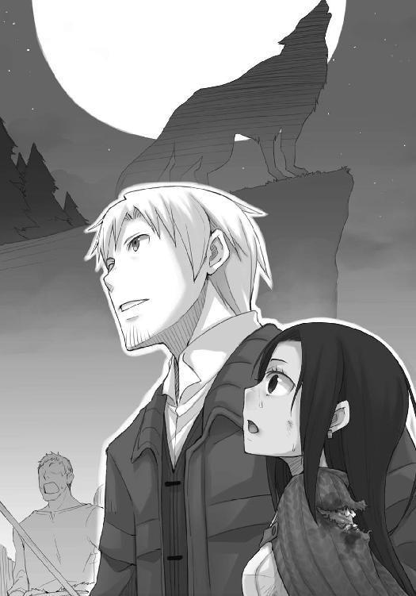
吉と出るのか凶と出るのか。
ホロ自身、疑っていて、出られなかったのだろう。
しかし、ロレンスは自信を持ってうまくいくと言うことができる。
なぜなら、ホロの遠吠えはごおん、ごおん、と巨大な鐘を木槌で叩くような音となって反響し続けているからだ。
フランが体を強張らせ、呟いたのもそんななかでのことだった。
「......来る」
ロレンスは聞き返さない。
反響も消えさった頃。
滝から下を睥睨するホロの視線に縫い留められ、一歩も動けない者たちの息遣いだけが聞こえてくる。
そして、彼らも耳にしたはずだ。どどど、どどど、という遠くからやってくるような軍勢の足音を。まるで、天からやってくるかのような足音を。
多くの者が浮足立ち、辺りを見回していた。
やがてその音は収まった。
その後、結局何事も起こらずに、沈黙だけが続く。
誰かが滝の上を指差して、呟いた。
「おい、悪魔がいなくなったぞ......」
別の誰かが、呟いた。
「見間違い......だったのか？」
ロレンスは、そうではない、と知っている。
ホロはそんなことを彼らに思わせるために身を隠したのではない。
ロレンスとフランの予測は見事に当たっていたのだ。
兵の一人が叫ぶ。
「滝が！」
その言葉と共に滝の水が涸れた。
涸れた水が巨大な波となって姿を現したのは、その一瞬あとのこと。
全てを飲み込まんばかりに突き立った巨大な波が、空に浮かぶ月を洗うようにうねり、滝の流れを二分していた岩にぶち当たった。
そのあとのことを正確に誰かに説明するのは、不可能だろう。
二分された津波が滝から空に舞い上がり、巨大な水しぶきとなって白く光る。
折しもこの寒さだ。
水しぶきは氷になり、月明かりがそれを照らす。
大量の水が滝つぼに落ち、一種独特の音を立てる。
まるで巨大な翼が羽ばたく時のような音。
しぶきが風にさらわれ、空へと飛んでいく。
天使の伝説は、ここにあった。
「......フランさんっ」
がく、と膝から崩れ落ちたフランを抱え、ロレンスは思わずその名を呼んだ。
その顔は穏やかに、その目はここではないどこかを見つめていた。
フランはゆっくりと手を伸ばす。
呟いたのは、こんな言葉だった。
「綺麗」
己の醜悪さを知る者たちは、武器を捨てて逃げ出した。
己の不信仰を悔いる者たちはその場にひざまずいた。
一人己の胸の中のことに忠実だった者だけが、顔を空に向けて、美しい光景に手を伸ばしていた。
天使は天界へと飛び立った。
月の裾で、氷の破片が、輝いていた。
「そ、それでどうなったのです！」
ユーグの巨体に詰め寄られ、ロレンスは思わずのけぞってしまう。
ロレンスが手でぐいと押しのけて、ようやくこの絵画商は我に返ったらしい。
椅子に座りなおし、やきもきするように服の裾をいじくりながら、もう一度繰り返した。
「それで、どうなったんです！」
「それで、結局、村としては天使の伝説が真実だったと、カテリーナは紛うことなき聖女だったということで一件落着ですよ。ただし」
ロレンスは出されていた温かいぶどう酒を飲んで、付け加える。
「もう村も領主も、その時々の情勢で天使だ悪魔だととても言えないと言っていましてね、表向き、全てをなかったことにするそうです」
「そうですか......いや、そうですか......」
冒険譚を聞き入っていた少年のように、ユーグは大きな体を椅子の背もたれに預け、天井を仰いで目を閉じる。
大きなため息までついて、心底安心しているようだった。
「私たちがここに到着した時のほうがよっぽど落ち着いていましたね」
ロレンスが意地悪く言うと、目を開けたユーグは「ほ」と笑った。
「いざという時は無我夢中で動いてしまうものです。いや、それにしても、そんなことがあったのですね......大怪我をされたフラン様が運ばれてきた時には、何事かと思いましたが」
とはいっても、実際にはタウシッグの村で狩人と山の人間の知識を総動員して、フランの治療に当たったのだ。怪我が治る前に帰ってきたのは、村人たちがあまりにもフランのことをあれこれ構うからだった。
神だなんだと奉られるのを心底嫌がっていたホロは、他人がそれで嫌がるのを大笑いしていたのだが。
フランを連れ、タウシッグの村をあとにしたのが三日前。
昨日の夕方にケルーベにたどり着き、ロレンスを除く三人はとっくにベッドに向かっている。
ロレンスだけが、ユーグに無理やり階下に連れてこられ、タウシッグでの出来事を話させられていた。
「しかし、結局天使の伝説とは一体なんだったのですか？」
はちみつで漬けた木の実を一つ口に運んで、ロレンスは答える。
「雪崩ですよ」
ユーグは、ぽかんとして聞き返す。
「雪崩？」
「そうです。山の斜面から大量の雪が湖に滑り落ちて、巨大な波となって滝に押し寄せる。天界からの軍勢のような足音は、雪が崩れ落ちる音です」
「で、では、獣の鳴き声は？」
ここは、ロレンスにもあまり確信が持てない。
ただ、いくつかの可能性の中から、いかにもといったことを答えておいた。
「湖の上で反響していた音がそう聞こえたんですよ。山彦のようにね。今回は人々の争いと剣戟の音。きっと、はるか昔にも同じようにあの場所で揉め事があったのではないでしょうか」
もちろん極めつけはホロの声だったでしょうが、と一応付け加えておく。
人々の争う音によって天使が舞い降りるなど、いかにもといった言い伝えのようで面白い。
フランの見立てでは、あの地方に吹くという強い風が峰などに当たり、ものすごい音を出して反響し、結果雪崩を引き起こしたのだろう、ということだった。
それでも、どうせならそちらのほうを残したい。
「世の中色々なことが起こりうるものですね」
「まったくです」
ロレンスが困ったように笑って言うと、ユーグも「ほっほ」と肩を揺らした。
「しかし、まあ、一件落着ということなのでしたら、今後は私たちも時折タウシッグのほうに様子を見にまいりますよ。ホロ様のように威風堂々というわけにはいきませんが」
ユーグが冗談めかして言うと、商会の扉がノックされた。
こんな時間に一体誰が、という疑問はすぐに氷解する。
ユーグが椅子の上で苦笑してから戸口のほうに歩いていったからだ。
好きな所で寝て、好きな時間まで騒いでいられる町の外とは違い、市壁の中では火を使ってよい時間というのが基本的に決められている。建物が密集して建てられているせいで、どこかの家から火の手が上がるとあっという間に燃え広がるからだ。
テーブルの上に置かれた蠟燭の火に、見回りの兵士が目ざとく気づいたのだろう。
「では、私もこれで」
ユーグの背中に言葉をかけて立ち上がる。ユーグが戻ってくるのを待っていたら、場所を替えて話をさせられそうな気がしたので早々の退散ということだ。
温めたぶどう酒の入ったコップだけは持って、階段を上っていく。
き、き、と軋む階段を上り終え、手すりを頼りに部屋へ向かう。
入り口こそ小さく貧相に見えるが、奥行きは十分にあり、四階建ての立派な商会といえる。
普通商会は上に行くほど身分の低い者たちが泊められるので、二階をロレンスたちにあてがってくれたのは、ユーグの敬意の表れでもある。
ホロたちの寝ている部屋に行く途中、ロレンスはふと月明かりが廊下に漏れ出ていることに気がついた。
夜盗は二階から侵入する、という定石がある。
半開きになっていた扉からそっと覗いてみると、フランの部屋だった。
「なにか？」
覗き見は、一瞬でばれてしまった。
人とはいえ、一人旅に暮らす身なのだ。
単なる町娘とは根本的に異なる。
「明かりが漏れていたので、夜盗かと」
ベッドの上で体を起こしていたフランは、目元だけで笑っていた。
「盗みの現場を見つけられた夜盗が、今夜盗を捕らえに来たところだ、と言ったという話もあります」
酒の席で出されると訳がわからなくなる笑い話。
大騒ぎのあとでは、このくらいがちょうどいいのかもしれない。
「冷えますよ」
「生傷が痛む時は冷やし、古傷が痛むときは温めるのがいいんです」
乱暴な方法だが、効果はありそうだった。
ただ、できればそんな知恵を得るような状況は避けたいものだ。
従軍司祭、とフランの肩書きにはあった。
「天使の伝説と共に旅を終えようと思っていたのですが」
唐突にフランは言って、こちらを見た。
開けっ放しの木窓から入る、青い月明かりに照らされて、その体は今にも光の粒になって消え入りそうだった。
脇腹から肩にかけては今も生々しく包帯が巻かれ、タウシッグでは熱にもうなされていた。
それでも、フランの様子からは弱みが一切見て取れない。
部隊の勇気と信仰を司る司祭たる者は、これくらいでなければ務まらないのかもしれない。
「その、旅というのは」
ロレンスが聞き返すと、フランはくすりと笑った。
少し、恥ずかしかったのかもしれない。
「思いつめた少女のようだった、と今は思っています」
死ぬつもりだったのだ。
血塗られた聖典と、そこに挟まれていた手紙。
フランの天使の伝説にかける情熱は、執念ともいえた。
爪と牙を持つ者から順に死ぬという話があるとすれば、まさしくその真っ先に死ぬ者の筆頭に挙げられるような勢いだった。
そして、だからこそ、フランは天使の伝説にたどり着くことができた。
そのたどり着いた果てになにを思ったのか、ロレンスにはわからない。
わからないが、今のフランの顔は、つき物が落ちたかのように綺麗だった。
「我々はまだ地図を描いてもらっていませんよ」
ロレンスが責めるように言うと、フランはふいとそっぽを向く。
月明かりに照らされた顎の線が、よく研いだナイフのように光っている。
「一度ならず、戦場にまで代金の取り立てに来た商人さんがいました」
「ならば、天界の扉を越えた向こうまで取りに来いと？」
フランは猫のように目を閉じる。
ロレンスがベッドに歩み寄ると、すっと真っ黒い瞳を向けてくる。
「残念ながら、我々が天界に行くのは、ラクダが針の穴を通るよりも難しい、と聖典に記されています」
ロレンスはフラン越しに手を伸ばし、木窓をゆっくりと閉じる。
木窓の隙間から入り込む月明かりが、フランの顔に少し痛そうに当たる。
「私もそうですね。天界への扉は通れませんでした」
「ならば、いかがでしょう。罪滅ぼしに人助けでも」
フランは笑い、ゆっくりと体を毛布の中に沈めていく。
動けばまだ相当痛むだろうに、ロレンスの手伝いは手で制した。
「商人さんの手を借りれば、何枚地図を描く羽目になるかわかりませんから」
意地悪な笑みは、誰かさんを思い起こさせる。
ただ、ベッドに横たわったフランは、右手をすっと伸ばしてくる。
滝の上に現れた天使に向かい、諦めることなく伸ばし続けたからこそ、届いた右手。
「一枚分の代金です」
フランが、言う。
こういう振る舞いは、きっと伊達好きの多い傭兵団の中で学んだのだろう。
ロレンスも、嫌いではない。
「お支払いしましょう」
ロレンスはしっかりとフランの右手を握る。
町娘相手になら、手の甲に口づけでもするところ。
しかし、フランには必要ないだろう。
「神のご加護を」
ありがたい言葉を頂戴して、ロレンスは手を離し、帽子を取るふりをする。
フランはうなずき、ゆっくりと目を閉じる。
ロレンスが部屋から静かに出ようとした時、その背中に言葉が向けられた。
「あの時」
「え？」
「あの時、滝の上にいたあれは......」
ロレンスは振り向き、笑顔のまま、問い返す。
「滝の上？」
フランなら、ロレンスの仮面に気がついただろう。
それでも、それ以上の言葉はない。
「いえ」
短く言って、「気のせいだったようです」と付け加えた。
「おやすみなさい」
ロレンスが言うと、フランはなにも答えない。
部屋を出ると、ホロがいた。
ロレンスは気がつかないふりをして、隣の部屋に行く。
ぴったりとあとをつけられ、部屋に入る。
扉が閉じれば、月だけが光る、静かな夜の始まりだった。
終わり
あとがき
お久しぶりです。支倉凍砂です。十二巻目です。当たり前のことですが、十二巻目ということはこのあとがきを書くのも十二回目です。全然そんな気がしないのですが......。
我ながら十二巻分のネタがよく出てきたなあ、と感心してしまいます。というのも、二巻目を書こうとしていた時点で、もう書くことがない......と頭を抱えていたのです。
一説には、本を一冊書くには百冊の本を読まなければならない、と言われているそうです。『狼と香辛料』は大体四十から五十冊の資料本でできています。足りない分は......ホロの尻尾と耳で埋め合わせということで一つ。
前の巻から三ヶ月しか経っていないので、私生活にこれといった変化はないのですが、なんと十二巻の執筆時には沖縄に九泊もしてきてしまいました。他に作家さん二人と一緒の執筆旅行です！ 狭い部屋に九泊とか、後半はぎすぎすして事件でも起こるんじゃないだろうかと思っていたのですが、意外に平和でした。泡盛と石垣牛のおかげだと思います。
朝起きて、ご飯食べて、執筆して、昼ご飯食べて、執筆して、昼寝して、ホテルの前の海に入って、夕食食べに行って、執筆して、寝る。概ねこんな生活を繰り返してきました。途中、レンタカー借りて遠くの海に行ったりもしました。海岸には、車に布団とテントと犬だけを乗せて全国を回っているような旅の人たちがたくさんいました。日本にもこういう文化があったのか......と驚きました。バイクで回っている人なんて、背中にギターですよ。ラノベのキャラクターだってもうちょっとおとなしいです。
我々も負けちゃいられねえ、とばかりに、今度はバリかどこかの南の国を画策しています。
ただ、できれば次は仕事が終わっている綺麗な体で行きたいなあ、と思います。
さて、この巻が出る頃はアニメ第二期放映の真っ盛りではなかろうかと思います。
そのことを楽しみにしつつ、次の巻の執筆に取り掛かる準備をしている最中です。
それではまたお会いしましょう！
次は秋かな？
支倉凍砂
支倉凍砂
１９８２年12月27日生まれ。第12回電撃小説大賞〈銀賞〉受賞。大学で物理を学ぶも、というネタも尽きてきたのでどうしようかと悩む毎日。最近、ギター教室に通い始めました。

文倉十
１９８１年生まれ、京都府出身のＡＢ型。現在関東にて、フリーで細々と活動中。ついにアニメ二期も始まり、送られてくるサンプル盤を楽しみにしている今日この頃です。
電撃文庫
狼と香辛料
支倉凍砂
二〇十三年五月二日 配信
発行者 塚田正晃
発行所 株式会社アスキー・メディアワークス
〒一〇二─八五八四 東京都千代田区富士見一─八─十九
(C)2009 ISUNA HASEKURA/ASCII MEDIA WORKS
本書（電子版）に掲載されているコンテンツ（ソフトウェア／プログラム／データ／情報を含む）の著作権およびその他の権利は、すべて株式会社アスキー・メディアワークスおよび正当な権利を有する第三者に帰属しています。
法律の定めがある場合または権利者の明示的な承諾がある場合を除き、これらのコンテンツを複製・転載、改変・編集、翻案・翻訳、放送・出版、公衆送信（送信可能化を含む）・再配信、販売・頒布、貸与等に使用することはできません。